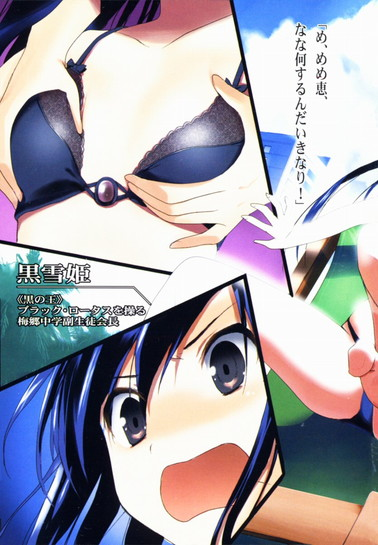

| [川原礫]アクセル・ワールド10 | |
| 川原礫 | |
| (2015) | |
|
アクセル・ワールド10 ─Elements─
川原 礫
|
底本データ
一頁17行 一行42文字 段組１段
「二重山括弧」は「山括弧」に置換え注略。
外字「①」「②」「③」「④」使用。
アクセル・ワールド10
─Elements─
『遠い日の水音』──西暦二〇四六年、秋。新生〈ネガ・ネビュラス〉の一員となったシルバー・クロウことハルユキだが、とある過失でバーストポイントを急激に減らしてしまう。窮地に立ったハルユキに、タクムは加速世界の〈用心棒〉を雇うことを提案する。
『最果ての潮騒』──西暦二〇四七年、春。新入生・能美征二の策略によって、かつてない危機に陥ってしまったハルユキ。時を同じくして、黒雪姫は修学旅行先の沖縄で、奇妙な、バーストリンカーに〈対戦〉を仕掛けられていた。
『バーサス』──西暦二〇四七年、春。ハルユキはブレインバースト内で、黒い剣士の姿をしたアバターと出会う。次元の壁を越えて、二人の主人公が激突する！
待望の特別編！
川原 礫
＊ご注意＊表紙イラストは、本文の内容と直接関係はございません。
......でも私は大好きです！ そしてきっとあなたも！
イラスト：ＨＩＭＡ
10月３日生まれ。挿絵は今シリーズが初のイラストレーター。『電撃萌王』小冊子への寄稿を見た文庫編集者が、今回の挿絵依頼をオファーしたことがきっかけ。本業仕事の合間を縫って、ブログやＳＮＳサイトなどでイラストを発表している。


〈ブレイン・バースト〉におけるデュエル・アバターの〈相性〉
バースト・リンカーに自動的に付与される英語名には、必ず色を示す単語が含まれている。〈青系統〉は近距離直接攻撃、〈赤系統〉は遠距離直接攻撃、〈黄系統〉は間接攻撃、紫や緑のような中間色は、二つの系統にまたがった属性を持つ。一方、〈メタルカラーチャート〉に属するアバターは，攻撃ではなく防御能力に秀でている。
アクセル・ワールド 10
-Elements-
■黒雪姫（クロユキヒメ）＝梅郷中学の副生徒会長。清楚怜悧なお嬢様。その素性は謎に包まれている。学内アバターは自作プログラムの『黒揚羽蝶』。デュエルアバターは〈黒の王〉『ブラック・ロータス』（レベル９）。
■ハルユキ＝有田春雪（アリタ・ハルユキ）。梅郷中学二年生。いじめられっ子で太り気味。ゲームは得意だが、内向的。学内アバターは『ピンクのブタ』。デュエルアバターは『シルバー・クロウ』（レベル５）。
■チユリ＝倉嶋千百合（クラシマ・チユリ）。ハルユキの幼馴染。お節介焼きな元気娘。学内アバターは『銀色の猫』。デュエルアバターは『ライム・ベル』（レベル４）。
■タクム＝黛拓武（マユズミ・タクム）。ハルユキ、チユリとは幼少期からの知り合い。剣道が得意。デュエルアバターは『シアン・パイル』（レベル５）。
■フーコ＝倉崎楓子（クラサキ・フウコ）。旧〈ネガ・ネビュラス〉に所属していたバーストリンカー。〈四元素（エレメンツ）〉の一人。とある事情により隠匿生活をおくっていたが、黒雪姫とハルユキの説得により戦線に復帰する。ハルユキに〈心意〉システムを授けた。デュエルアバターは『スカイ・レイカー』（レベル８）。
■ういうい＝四埜宮謡（シノミヤ・ウタイ）。旧〈ネガ・ネビュラス〉に所属していたバーストリンカー。〈四元素（エレメンツ）〉の一人。松乃木学園初等部四年生。高度な解呪コマンド〈浄化〉を扱えるだけでなく、遠距離攻撃も得意とする。デュエルアバターは『アーダー・メイデン』（レベル７）。
■ニューロリンカー＝脳と量子無線接続し、映像や音声など、あらゆる五感をサポートする携帯端末。
■ブレイン・バースト＝黒雪姫からハルユキに転送されたニューロリンカー内のアプリケーション。
■デュエルアバター＝ブレイン・バースト内で対戦する際に操るプレイヤーの仮想体。
■軍団＝レギオン。複数のデュエルアバターで形成される、占領エリア拡大と利権確保を目的とする集団のこと。主要なレギオンは七つあり、それぞれ〈純色の七王〉がレギオンマスターを担っている。
■通常対戦フィールド＝ブレイン・バーストのノーマルバトル（１対１格闘）を行うフィールドのこと。現実さながらのスペックを持つが、システムはあくまで一昔前の格闘ゲームレベルのもの。
■無制限中立フィールド＝レベル４以上のデュエルアバターのみが許可されるハイ・プレイヤー向けのフィールド。〈通常対戦フィールド〉とは段違いのゲームシステムが構築されており、その自由度は次世代ＶＲＭＭＯにも全くひけを取らない。
■運動命令系＝アバターを制御するために扱うシステム。通常はすべてこのシステムによってアバターは操作される。
■イメージ制御系＝自身が強く想像（イメージ）することによってアバターを操作するシステム。通常の〈運動命令系〉とはメカニズムが大きく異なり、扱えるものはごく少数。〈心意〉システムの要諦。
■心意（インカーネイト）システム＝ブレイン・バースト・プログラムのイメージ制御系に干渉し、ゲームの枠を超えた現象を引き起こす技術。〈事象の上書き（オーバーライド）〉とも言う。
■加速研究会＝謎のバーストリンカー集団。〈ブレイン・バースト〉をただの対戦ゲームとしては考えておらず、何事かを企む。〈ブラック・バイス〉、〈ラスト・ジグソー〉が所属している。
■災禍の鎧＝クロム・ディザスターと呼ばれる強化外装。装着すると、対象アバターのＨＰを吸い取る〈体力吸収（ドレイン）〉や、敵の攻撃を事前に演算・回避する〈未来予測〉など強力なアビリティが使用可能となる。しかしその使用者は、クロム・ディザスターに精神を汚染され、完全に支配される。
■スターキャスター＝クロム・ディザスターが持つ大剣のこと。禍々しい形状をしているが、本来の姿は、その名の通り、星のように輝く厳かな名剣である。
■ＩＳＳキット＝ＩＳモード練習（スタディ）キットの略。ＩＳモードとは〈インカーネイト・システム・モード〉のことで、このキットを使えば、どんなデュエルアバターでも〈心意システム〉が使用可能となる。使用中は、アバターのいずれかの部位に赤い〈眼〉が張り付き、〈心意〉の象徴である〈過剰光（オーバーレイ）〉が、黒いオーラとして放出される。
■〈七の神器（セブン・アークス）〉＝〈加速世界〉に７つある、最強の強化外装群のこと。内訳は、大剣〈ジ・インパルス〉、錫杖〈ザ・テンペスト〉、大盾〈ザ・ストライフ〉、形状不明〈ザ・ルミナリー〉、直刀〈ジ・インフィニティ〉、全身鎧〈ザ・ディスティニー〉、形状不明〈ザ・フラクチュエーティング・ライト〉。
遠い日の水音
１
ＹＯＵ ＷＩＮ！
炎のエフェクトをまとった文字が視界中央に浮き上がり、続けてバーストポイントが加算されるのを、有田春雪は固唾を呑んで見詰めた。
二対二のタッグ対戦だが、双方のレベル合計値が等しいので、獲得ポイントは基本値の10。何度聞いても心地良い、金属質のサウンドを響かせながら、現在の総保有ポイント数値が上昇する。２９８から──３０８へ。
直後、これまで一度も見たことのないシステムメッセージが数字の下に追加された。曰く、【ＹＯＵＣＡＮＵＰＴＯＬＥＶＥＬ２】──〈レベル２に上昇できます〉。
「やっ......たあ......！」
ハルユキは、銀色のアバター〈シルバー・クロウ〉の右腕を突き上げ、無意識のうちにガッツポーズを決めていた。対戦相手のレベル２と３のコンビが、忌々しげながらも祝いの言葉を口にする。
「おめっとさん！」
「レベルアップ・ボーナスは考えて選べよ！」
直後、揃ってバーストアウトしていく二人に、ハルユキは慌ててぺこぺこ頭を下げた。周囲のビル屋上に陣取るギャラリーたちも、拍手や祝福の言葉を残して次々と消滅する。
最後に残ったタッグパートナー、青い重装甲と貫通型強化外装を持つレベル４の〈シアン・パイル〉もまた、大きくひとつ頷いてから言った。
「おめでとう、ハル。二週間、よく頑張ったね」
「......ありがとう、タク」
胸中に溢れる気持ちをもっとちゃんと伝えたいのに、ハルユキの乏しい言語能力ではそれが精一杯だった。せめて、同じフレーズを、より大きな声で繰り返す。
「ほんとに、ありがとうな」
実際、この二週間というもの、ハルユキはシアン・パイルこと黛拓武に、とても定量化は不可能なくらい何から何まで助けられた。
デュエルアバターの装甲色や、対戦フィールドの属性が持つ特徴と、対応する戦略。対戦が盛んな場所と時間帯、そして各エリアに於けるローカルルールやマナー。そんな〈ブレイン・バースト〉関連の情報教示だけに留まらず、現実世界の学校の宿題やレポートを手伝ってくれすらしたのだ。
いかにハルユキ──シルバー・クロウが、加速世界七年の歴史に於いて初めて出現した〈完全飛行型デュエルアバター〉だとしても、タクムの親身な手助けがなければこれほど短期間に３００ポイントは貯められなかっただろう。いや、逆にあっさりと攻略され、ポイントを全損していたことすら考えられる。
なぜなら、本来ハルユキにそれらの指導を行うべき〈親バーストリンカー〉は現在入院中で、対戦どころか一日にほんのわずかな時間しかネットに接続できないのだ。ＨＣＵで二十四時間の経過観察中なのだからそれも当然で、ハルユキとしてはフルダイブすらせずに安静にしていて欲しいのだが、本人は毎日コールするたびにぶつぶつ文句を言っている。
ともかく、そんな状況なので、〈親〉たる黒雪姫──〈黒の王〉ブラック・ロータスには、指導を仰ぐことはもちろん加速世界で会うことも不可能だ。来週には一般病棟に移れるらしいが、その後も当分対戦まではできないだろう。だから、タクムがかつて所属していた青のレギオン〈レオニーズ〉を脱退し、黒のレギオン〈ネガ・ネビュラス〉に移籍して一時的な教官役を務めてくれていることには、本当にどれだけ感謝してもしきれないのだ......。
というような気持ちを短い言葉に精一杯込めたつもりのハルユキに、タクムは精悍なフェイスマスクの奥から、静かな声と微笑みを返してきた。
「──まだまだ、これくらいじゃぼくの罪はひとかけらだって雪げちゃいないよ」
「......タク......」
口ごもるハルユキから眼を逸らし、タクムは〈古城〉ステージの満月を見上げた。
「それにねハル、そもそもぼくがマスター......黒の王を卑劣な手段で何度も襲撃したりしなければ、きっとこんなことにはならなかったんだ。だから、王の代わりに君を助けるのは、ぼくの責任であり義務なんだよ」
──確かに、タクムが今年の夏休み明けから、梅郷中学ローカルネット内の黒雪姫に継続的に対戦を挑むために用いた手段は決して真っ当なものだとは言えない。二人の共通の幼馴染である倉嶋千百合のニューロリンカーに〈バックドア・プログラム〉を仕掛け、それを踏み台にすることで、一方的に〈乱入〉し続けたのだから。
そのトリックに気づいたハルユキは、重傷を負って昏睡状態だった黒雪姫を守るため、彼女が搬送された病院を舞台にタクムと戦った。ありったけの力と気持ちをぶつけ合う激闘の果てに、飛行型アバターとして覚醒したハルユキはタクムを打ち破り、しかし止めを刺すことなく彼を許した。
つまりタクムは最終的に、黒雪姫からたったの１ポイントだって奪いはしなかったのだ。黒雪姫が入院していることと、タクムの襲撃とは直接的にも間接的にも──
「......か、関係ねぇよ、タク！」
ハルユキは両手を振り動かして懸命に叫んだ。
「黒雪姫先輩が大怪我したのは、何から何までオレが馬鹿ちんだったせいなんだ！そ、それに、考えてみろよ、もしお前が先輩に乱入し続けなければ、あの人はローカルネットに引きこもったまま〈子〉を作ろうとはしなかったはずだし......てことは、オレがバーストリンカーになることもなかったはずじゃんか。つまり、オレがいま加速世界で戦えてるのは、元を辿ればお前のお陰ってことでもあるんだし......」
フォローと言うには余りにも強引な論理展開だったが、それでもタクムは、青白い月を見上げたままわずかに肩の力を抜いた。
「......ふ、ふふ。きみは変わってないね、ハル。小学校の頃から、何ひとつ......」
耳に届いた密やかな囁きに、ん？と首を傾げる。
「それって、褒めてる......とカイシャクしていいんだよな？」
「はは、もちろんさ」
タクムは肩を揺らして短く笑うと、今度は完全に後ろを向いてしまう。現実世界の彼と同じように大きな背中に、もう一度「ありがとうな」と呟くと、ハルユキは視界上部中央のタイムカウントを確認した。
千八百秒から始まったそれは、タッグマッチが案外早く決着したためにまだ二百秒近くを残している。いったん対戦を終えてからブレイン・バーストのメニュー画面を操作するとなる、と、バーストポイントを余分にもう１ポイント消費しなくてはならない。三分あれば充分だろう。
そう判断し、ハルユキは自分の体力ゲージに手を伸ばすと、メインメニュー──通称〈インスト〉を開いた。その奇妙な名前は、大昔のアミューズメント・ショップ（当時はゲームセンターと呼称したそうだが）にあった大型ゲーム筐体の、コントロール・パネル上部に挿入してあった簡素な紙製のマニュアルを〈インストラクションカード〉と呼んでいたことに由来するらしい。
軽やかな効果音とともに、市販のＶＲＭＭＯ‐ＲＰＧによく似たデザインのホロウインドウが視界中央に展開する。
初期画面には、自分のデュエルアバターを簡略化したシルエットが表示される。同画面内のボタンに触れれば、そのシルエットが動いて通常技と必殺技の動作を教えてくれるが、シルバー・クロウのそれを見てもションボリするだけなので無視。
上部には、所持品欄やポイント操作画面に移動するタブが並ぶ。アイテムは何一つ持っていないのでそこも無視して、ポイント画面に移動する。
途端、窓の上部中央に【３０８】という数字がでかでかと表示された。無論、現在の総保有ポイントだ。何度見ても、ヘルメットの下で口許が緩んでしまう。現実世界での貯金が初めて一万円を超えた時よりずっと嬉しい。なぜならこのポイントは、文字通り自分の手と足（ときどき翼）で稼ぎ出したものだからだ。
──レベル２になったって知らせたら、先輩、喜んでくれるかな。いや、きっと澄まし顔で『まだまだヒヨッコだ』とか言うだろうな。
そんなことを考えながら、ハルユキはポイント使用ボタンに触れ、出現した各種メニューの一番上に明るく輝く【ＬＥＶＥＬＵＰ】のボタンを押した。
英語で、３００ポイントを消費してレベルを２に上げていいかという確認ダイアログが開く。
ＵＩが基本素っ気ないブレイン・バーストにしては珍しいな、と感じつつハルユキはイエスボタンに指を──
瞬間。少し離れた場所で夜空を仰いでいたシアン・パイルが、何かを感じたかのように振り向いた。ハルユキの仕草を視認して、ぴくりと体を震わせ、一歩踏み出しながら叫ぶ。
「だ......だめだハル！ ストップ!!」
しかし、その絶叫が耳に届いた時には、ハルユキの指はもう【ＹＥＳ】の三文字を押し込んでいた。
クールかつエキサイティングな旋律のレベルアップ・ファンファーレが聴覚いっぱいに鳴り響く。視界中央に、レベルが２に上がったことを告げるメッセージ。
そして、最後に。
保有バーストポイント残高が、３０８から、８へと変化した。
２
自分が何をしでかしてしまったのかをハルユキが遅まきながら理解したのは、三十分の対戦時間が終了し、ダイブに使っていた新宿区立角筈図書館の閲覧ブースで覚醒した後だった。
リクライニング・チェアに呆然と体を預けたままでいると、すぐにブースの扉が外から開かれ、素早く伸びてきた手が、ハルユキの首に装着されたアルミシルバーのニューロリンカーを強制的に引き抜いた。視界に表示されていた仮想デスクトップが一気に全消滅する。
他人のニューロリンカーをいきなりむしり取るなど、見知らぬ他人に行えば明確な犯罪だし、親しい友人同士でも最大級のマナー違反と言える。しかし今、ハルユキのブースに身を乗り入れる黛拓武──タクムにはどうしてもそうしなくてはならない理由があった。それをハルユキ自身も今は痛いほど理解できていた。
なぜなら、ハルユキは今、バーストポイントをたったの８しか持っていないからだ。誰かに乱入され、負けて10ポイントを失った時点で全損、ブレイン・バーストを強制アンインストールされてしまう。
ようやくその事実を認識したハルユキは、愕然と見開いた両眼で、ブルーグレーの詰め襟学生服姿のタクムの顔をただ見詰めた。親友の唇が震え、掠れた声を漏らした。
「......なんてことだ......。ごめんよ、本当にごめん、ハル。きみに、一番大事なことを伝えるのを忘れてしまうなんて......。〈たとえレベルアップ可能なポイントに達しても、すぐにレベルを上げてはいけない〉......教官役を務めるなら、他の何を忘れても、これだけは絶対に教えなきゃいけなかったのに......」
──そう。
ブレイン・バーストというゲームに於ける〈レベルアップ〉は、他のゲームのように経験値が一定数値に達した時自動的に発生する現象ではなく、獲得したポイントを消費して購うものなのだ。
レベル１から２に上げるために必要なポイントは３００。ということは、総保有ポイントが３０８の時点でレベルアップ操作をすれば、残額がたった８になってしまうのは自明の理だ。だからこそ、〈すぐにレベルを上げてはいけない〉のだ。ポイント消費後も安全圏に留まれるだけのマージンを確保する。それが、レベルアップの絶対条件──。
唇を噛むタクムの顔を見上げ、ハルユキは同じく掠れきった声で呟いた。
「......タク......オレ......馬鹿だった......。少し考えれば......当たり前のことだったのに......。３００ポイント貯まっただけで、有頂天になって......馬鹿だ、オレ......」
今更のように、自分の〈バーストリンカーとしての命〉が今や風前の灯火であることを強く意識する。黒雪姫にプログラムを与えられてからの半月で、ハルユキの総ポイントは最も減少した時でも70はあったのだ。それが、今や８。もしタクムが強引にニューロリンカーを除装してくれず、前の対戦の直後に誰かに〈乱入〉されて負けていれば、ハルユキは今頃ブレイン・バーストを失っていた。
メッシュチェアのアームレストを握る手が、小刻みに震える。どうしよう、どうすればいい、それだけが脳裏を駆け巡る。世界が変わった──あの人が変えてくれたと思っていたのに。自分自身もこれから、少しずつ変わっていける......ようやくそれが信じられそうだったのに──。
「ハル」
不意に、右手を強く掴まれた。側面のスライドドアから狭い閲覧ブースに上体を乗り入れたタクムは、いつもは涼しげな両眼に熱のこもった光を浮かべ、強く囁いた。
「大丈夫だ、ハル。まだ終わってしまったわけじゃない。ここからでもリカバリーする方法はある。とりあえず、きみの家に行こう」
「............タク......」
二週間前の〈病院の決闘〉以降、青のレギオンを抜けてハルユキの教官役を務めてくれていたタクムだが、昔のようにハルユキの自宅を訪れることは一度もなかった。何回か誘いはしたものの、微笑みながら首を横に振るばかりだったのだ。まるで、自分にはその資格がない、と言わんがばかりに。
しかし今、急転直下の緊急事態を受けて、タクムの頭からもそんな遠慮は吹き飛んでしまっているようだった。
「あ、ああ、行こう。ここじゃ詳しい話できないもんな」
小刻みに頷き、壁のフックから学校指定のバッグを外しながら立ち上がる。
二人が放課後の〈対戦〉に利用してきた角筈図書館は、フルダイブ可能な電子書籍閲覧ブースだけでも二百席以上備えた巨大施設だ。放課後は近隣校の小・中・高校生がひしめいているために、たとえ対戦フィールドへの出現位置を見られてもリアル割れの危険がない便利な場所だが、さすがに肉声で〈ブレイン・バースト〉関連の話をし続けるのは無謀すぎる。と言って、周囲に同年代の生徒が山ほどいる場所でタクムと直結するのも少々躊躇われる。
──いや、別に僕は誰にどう思われようと気にしないけど、タクは何て言うか目立つし......もし学校の友達に見られて妙なウワサされたら恥ずかしいだろうし。
などと考えながら、早足で前を歩く親友を追いかけていると、ようやくに背中に滲む冷汗も乾いてきたようだった。残りたった８ポイントでも、タクムが大丈夫と言うならきっと何とかなる。自分にそう言い聞かせながら、ハルユキは自動ドアを潜り、十一月の少し冷たい外気を大きく吸い込んだ。
都庁前から、青梅街道を下るバスで杉並区高円寺北の自宅マンションに移動、居住者用エレベータ前の認証ゲートを通過した時には、空はかなり暗くなっていた。
ハルユキはここまでずっとニューロリンカーを外しっぱなしで、バス代もタクムに立て替えて貰ったので、正確な時刻は解らない。もちろん、グローバル接続をキャンセルしてから装着すれば他のバーストリンカーに乱入される危険はないはずだが、〈万が一〉を考えるととても機械を首に嵌める勇気は出なかったのだ。
いつもは向かい側のＡ棟に帰るタクムと、何年ぶりかに同じエレベータに乗る。Ｂ棟二十三階で降り、無人の自宅のドアロックを、インターホンに内蔵された非常用の指紋・網膜認証で解錠。
「おじゃまします」
そう口にしながら、ハルユキに続いて玄関に踏み込んだタクムは、そこで初めて自分が久々に有田家を訪問しているのだと気づいたかのように、少しだけ微笑んだ。
「......懐かしいな。一年半ぶりだね」
「え......もう、そんなになるか？」
スリッパを取り出しかけた手を止め、ハルユキは脳内の記憶を辿った。タクムが最後にこの家に来た──正確には〈来なくなった〉のは、彼がチユリと付き合い始めてしばらくした頃だったはずだから、小学六年の春あたりか。今が中一の秋なので確かに一年と半年も経ってしまっている。
「ウチにも、このスリッパまだあるんだぜ」
冗談めかした言い方をしながら、ハルユキはタクムの足許に、今では少し小さくなりすぎた薄黄色のスリッパを並べた。甲の部分に、緑の糸で可愛らしいゾウの顔が刺繍してある。自分用にも、普段は使っていないお揃いのスリッパを出す。こちらの刺繍は青いクマだ。ラックには、これも一年半使われていないが、チユリ用のピンクのウサギつきも残っている。
これらは、確か小学四年生のクリスマスに、三人で同じスリッパを三足ずつ買い、お互いにプレゼントし合った物だ。つまり、ハルユキの家だけでなく、チユリの家にも、そしてタクムの家にも、緑ゾウ・青クマ・桃ウサギのスリッパ小隊が配備されたことになる。
倉嶋家の小隊が今なお健在なのは、二週間前に二人で〈バックドア・プログラム〉の一件を謝罪しに行った時に確認済みだ。タクムは、ハルユキの言葉にもう一度微笑み、さすがにややきついスリッパに足を差し込みながら言った。
「......うちのはね、六年生の時に母親が勝手に捨てちゃったんだ。ぼくが親の前で泣いたのは、あれが最後だったな......」
「そっか。じゃあ、今年のクリスマスはまたこのスリッパセット買いに行くか？」
ハルユキが真顔で言うと、タクムは短く声を出して笑った。
「はは......、さすがにコレはもうサイズ的に厳しいよ。揃えるなら、マグカップとかどうかな」
「おお、さすが黛先生はオシャレなことを言いますね」
どん、と背中をどつかれ、大袈裟によろけるふりをしつつ自分の部屋のドアを開ける。
ハルユキの自室は、南のベランダに面した六畳だ。ずっと昔に離婚して家を出ていった父親が書斎に使っていた部屋で、東の壁一面が、いまどき珍しいビルトインの書架になっている。父親はそこにコレクションしていた前世紀のハードカバー書籍を並べていたが、ハルユキはもちろんそんなもの一冊も持っていない。
代わりに贅沢な天然木の棚を占領しているのは、フルダイブ技術が実用化される以前の旧型ゲームハードと、それら専用の光学ディスクやメモリカードのゲームパッケージたちだ。中には、当時の年齢制限でＺ指定──すなわち血みどろ成分か肌色成分のどちらか、あるいは両方が過剰──の代物もこっそり含まれているので、とてもこの部屋にチユリや黒雪姫は通せない。もちろん、チユリはともかく黒雪姫が有田家を訪問するような状況など、どう考えても有り得ないのだが。
タクムは、いっそう懐かしそうな顔で棚に近づくと、パッケージの背中を指先で一つずつ順になぞった。
「──雨で外遊びができない日は、このへんのゲームを三人で夢中になってやったよね。このレースゲームとか......ああ、この格闘ゲームも。大抵のタイトルはハルが一番上手かったのに、これだけはチーちゃんがなぜか鬼みたいに強くて、二対一でもぜんぜん勝てなかったよね......」
「あー、そうだったなあ......。もしかしたらアイツ、バーストリンカーになっても超強かったりして......」
二人で顔を見合わせ、同時に「それはない！」という意味のにやにや笑いを浮かべる。
もちろん、三人が毎日一緒に遊んでいた三～四年前の時点で、〈ゲーム〉と言えばニューロリンカー用の視界投影型、あるいはフルダイブ型が当たり前になっていた。しかし、ゲームを含むアニメ、コミック等のコンテンツのレーティング基準は年々厳しくなる一方で、小学生が遊べる新作ゲームは軒並み知育系かパズル系、あるいは牧歌的グラフィックのアドベンチャー系がせいぜいだ。大人に頼んでゲームカードを買ってきて貰っても、子供のニューロリンカーではロードすらできない。
そこへ行くと、ハルユキが有田家ホームサーバーに残ったままの父親のアカウントを流用して──さすがに商品代は母親がくれる昼食代を節約して貯めたが──通販で買い集めた旧世代のゲームタイトルは、レースならクラッシュ・爆発当たり前、格闘なら殴るわ蹴るわビームは出すわ、ＲＰＧに至ってはイタイケな小型生物を虐殺しまくってお金とアイテムをかっ剥ぐという素晴らしい仕様だった。たとえ画面が２Ｄで、コントローラを握る指が痛くなろうとも、子供用のお仕着せゲームとどちらが楽しいかは考えるまでもない。
もちろん、中学生になった今では、レーティング12＋の撃ったり斬ったりするニューロリンカー用ゲームをいくらでもプレイできる。ハルユキ自身、約半月前までは、学校でのストレスを殺伐としたＦＰＳやスリリングなレースゲームで発散する日々を送っていた。だが今や、それらの起動アイコンは仮想デスクトップに存在しない。なぜなら、知ってしまったからだ。もう一つの現実を舞台にした、究極の対戦格闘ゲームを。あの世界の圧倒的情報量、ひりつくようなバトルの駆け引きを一度体験してしまえば、もう後戻りなんかできない。絶対にしたくない......。
思考がようやく現在の危機的状況に追いつき、ハルユキはどさりとベッドの端に座り込むと、長くため息をついた。
様子に気づいたタクムが棚から振り向き、歩み寄ってくる。バッグを置き、隣にしなやかな動作で腰を下ろす。
親友の整った横顔を見やり、ハルユキはおそるおそる訊ねた。
「......タク、さっき、『まだリカバリーする方法はある』って言ったよな。いちかばちかで対戦する以外に、本当にそんなのあるのか......？ポイントはもうたったの８しか残ってないのに......」
「ああ、大丈夫。きみを全損になんかさせやしないさ」
深く頷いたタクムは、やや予想外な言葉を告げた。
「ハル、直結用のＸＳＢケーブル持ってるよね？」
「え......あ、ああ」
頷き、左側にある机の引き出しから、束ねた銀色のコードを取り出す。長さ二メートルのそれを受け取ったタクムは、片方の端子を自分の青いニューロリンカーに挿入しながら、いっそう驚くべき台詞を口にした。
「これから、直結対戦で、きみにぼくの保有ポイントを半分移動させる。それで、とりあえず即死の危険は去る。あとは、時間と場所を選んで、タッグマッチを一戦一戦死にものぐるいで勝ち抜いて何とか安全圏まで戻すんだ」
「............！」
思わず息を呑む。確かに、直結対戦には〈同じ相手への乱入は一日一回〉の制限がない。対戦を何度も繰り返せば、ポイントを望むだけ移動できる理屈だ。余りにもシンプルかつ即効性のある危機回避策。
呆然としたままのハルユキの手に、タクムはプラグのもう一方を握らせた。
「さあ、ハル」
促されるまま、自分のニューロリンカーの直結用端子にプラグを挿し込もうと──したその寸前、ハルユキはぴたりと手を止めた。数十センチ離れたところにあるタクムの顔がかすかに歪み、次いで何かに耐えるような笑みが口許に浮かぶ。
「ああ......もちろん、ぼくを信じて貰えるかどうかがこの手段の大前提だけどね。ぼくがきみを騙し討ちして倒せば、きみはその瞬間ブレイン・バーストを......」
「ち、違う。違うよ、そうじゃないんだ、タク」
ハルユキは無意識のうちにタクムの左肩を右手で掴んでいた。学生服の生地の下で、逞しい筋肉が強張っているのを感じながら、懸命に言い募る。
「オレ、お前が裏切るとかそんなことこれっぽっちも考えてない。そうじゃなくて、その逆......お前に、そんなことまでさせる権利が、オレにあるのかって......」
「な......何言ってるんだ、ハル！」
途端、体ごと向き直ったタクムが、同じように右手でハルユキの左肩を強く握った。理知的な顔に一心な表情を浮かべ、叫ぶ。
「今はそんなこと気にしてる場合じゃないだろう！次に、同レベル相手に一敗して10ポイント奪われれば、きみはブレイン・バーストを強制アンインストールされちゃうんだ！そしてそれは、大事なことを伝え忘れていたぼくのせいだ！だからぼくが、ポイントを分けるのは当たり前......」
「でも、お前だってポイントに余裕はないはずだろ！」
端から見ればケンカをしているとしか思えないだろう勢いで、ハルユキもそう反論する。
そもそも、タクムが〈バックドア・プログラム〉などというチートツールに頼ってしまったのは、加速の使い過ぎでポイント残高が切迫したからだ。この二週間の、ハルユキとのタッグバトルで多少は回復したはずだが、それでもぎりぎり安全圏に戻れたかどうかというところだろう。今ハルユキに半分も譲渡したら、再び危険水準まで減ってしまうのは間違いない。
しかしタクムは、有無を言わせぬ口調で再反駁した。
「そんなこと、きみが気にする必要はないよ。いつか余裕ができたら、また直結対戦で返してくれればいいんだからさ。これは単なる緊急避難だ。それに......もしここできみが全損したら、入院中のマスターがどんなに大きなショックを受けるか、考えるまでもないだろう？」
「............それは......」
確かに──それはその通りだろう。二週間前に重傷を負い、今なおＨＣＵでマイクロマシン治療中の〈マスター〉こと黒雪姫は、〈子〉であるハルユキの成長を日々楽しみにしてくれている。それが、レベル２に上がった直後に全損したなどと知らされれば、ショックで病状すら悪化してしまうかもしれない。タクムは身を乗り出し、いっそう激しい口調で続ける。
「言ってたろ、ハル！ レベル２になったら、ずっと空白エリアになってる杉並に、〈ネガ・ネビュラス〉の領土宣言をするって！マスターが退院した後も、安心してグローバルネットに接続できるようにするんだって、きみはそう言ってたじゃないか！」
「っ..................」
ハルユキは強く奥歯を噛み締め、自分がどうするべきなのかを、懸命に考えた。
やがて、震える唇から、切れぎれの声が零れ出た。
「............タク。でも......でも、さ。ブレイントバーストには、〈引き分け〉のコマンドはあっても〈降参〉のコマンドはないだろ。だかち、対戦をわざとどっちかの勝ちにしようと思ったら、一撃与えて三十分過ぎるのを待つか......ＨＰゲージがなくなるまで一方的に攻撃し続けるか、それとも自分で自分に致命傷を与えるかしかないはずだ......。そんなの......そんなの、オレは嫌だ......」
その言葉を聞いたタクムは、右手の力を緩め、少しだけ微笑んだ。
「大丈夫、ぼくはぜんぜん気にしないよ。仲間を......友達を助けるためなんだ。一般対戦フィールドで攻撃を受けるくらい何でもない。さあ、早くプラグを挿して、ハル」
タクムの声と表情には、どこまでも純粋な思いやりだけが満ちていて、それゆえにハルユキは膝の上のＸＳＢケーブルに手を伸ばせなかった。
同じレギオンの仲間となって二週間が経つ今でも、タクムの言動の端々には、自分を罰しようという気持ちが見え隠れする。あれだけのことをしたのだ、無理はないのかもしれない。しかし彼は、病院での決闘で、心の奥底に長年押し込め続けてきた気持ちを余さず吐露し、ハルユキと全力で拳を交えた。戦いの後にはチユリと黒雪姫にも謝罪し、青のレギオンをも抜けた。もうタクムの罪は全て雪がれている。ハルユキはそう信じる。
だからこそ、今タクムに縋ることはできない。自分とタクムは、永遠に対等な友達であり仲間でなくてはならない。あの戦いの最後に、ハルユキ自身がそう宣言したのだ。ここで、タクムの思いやりに甘えて、結果彼をも危険域に巻き込んでしまっては、自分の言葉が嘘になってしまう。
それに、何より──。どんな事情があろうとも、無抵抗の仲間を一方的に攻撃してポイントを貰う、いや奪うような真似は、ハルユキの〈ゲーマー魂〉が許さないのだ。
「......先輩も......黒の王ブラック・ロータスも、さ」
ハルユキは、少し色の薄いタクムの瞳を見詰め、口を動かした。
「あの人も、オレを暴走車から守るために〈フィジカル・フル・バースト〉コマンドを使って、ポイント残高が相当危ないはずなんだ。でもあの人、一回だってオレに『ポイントを分けろ』なんて言わなかった。オレからそうするって言っても、きっと無茶苦茶怒るよ。そりゃオレとあの人じゃ、レベルも強さも経験もまるで比べものにならないけど......でも、せめてバーストリンカーとしては、オレ、先輩みたいに生きたいんだ」
数秒間、タクムは何も言わなかった。
やがてその白皙に、仕方ないなあ、というような仄かな笑みが浮かんだ。
「............相変わらず、一度決めたら頑固なヤツだなぁ、ハル」
左肩を掴む手が緩み、離れ際にぽんと一度叩く。自分のニューロリンカーからケーブルを抜き、それを元通りに束ねながら、タクムは表情を改めて続けた。
「──確かに、ぼくのポイントをわずかばかり譲渡しても、根本的解決にはならない。問題は、ポイント残高が危なくなると、そのプレッシャーが無意識の焦りを呼ぶことなんだ。焦れば、対戦中の視野が狭くなる。状況への対応力が奪われる。さっきぼくは『一戦一戦死にものぐるいで勝ち抜いて』って言ったけど、それは本当は、物凄く難しい。〈勝ちたい〉って気持ちは重要だけど、それと〈ポイントをなくしたくない〉って気持ちとは似て非なるものなんだよ。正直に言うけど、秋口にポイント残高が１００を切ってからの、ぼくの一般対戦での平均勝率は三十パーセント台だった」
「......ああ、何となくだけど、解る。オレも、もし今大ばくちで対戦しても、まともに動けないで負ける自信ある......」
ハルユキの呟きに、タクムは「妙な自信だなぁ」と苦笑してから、再び真顔を作った。
「きみが、いまの状況から脱出する方法。それはもう、あとたった一つしかない」
「えっ......まだ何か、他の手があるのか......？」
眼を見開く。タクムは一瞬言い淀んでから、低く応じた。
「うん。かなりリスキーな手段で......もしかしたら、ポイント以上のものを奪われてしまう可能性もゼロじゃないけど......でももう、ぼくにはそれしか思いつかない」
固唾を呑んで続きを待つハルユキに向かって、タクムは余りにも予想外のひと言を発した。
「〈用心棒〉を雇うんだ。ポイントが、もう一度安全圏に回復するまで」
３
明くる土曜日、午後十二時五十分。
ハルユキは、タクムと一緒に中央線の電車に揺られていた。
二十一世紀初頭と比べると自動車やバイクの道路交通事情はだいぶ様変わりしたらしいが、この電車という乗り物は、百年近くも基本構造を保っている。運転は今やＡＩ任せの全自動だし、揺れや騒音も大いに改善されているようだが、箱形車両に沢山の乗客が詰め込まれるという大本の所は何ら変わっていない。
──あー、懐かしいなあ、このカンジ。
ドアの近くにタクムと並んで立ちながら、ハルユキは胸中でこっそりそう呟いた。
ハルユキの眼から見ても、私服のタクムはけちの付けようもなく格好いい。中学一年にして百七十五センチもある長身を上品に色落ちしたブラックジーンズとざっくりしたニットに包み、上に藍色のモッズコートを羽織った彼に、先刻から同じ車内の女性複数がちらちらと視線を向けてきている。
だがその視線は、タクムの隣に立つちんまりポヨーンとした生物に移動した瞬間、深淵なる疑念に満たされる。いったいどういう取り合わせだろうと、立場が逆ならハルユキだって思う。小学生の頃は、居たたまれなさの余り穴を掘って埋まりたくなったものだが、幸いこの一年で、状況を懐かしがれるくらいの耐性は獲得できたようだった。それにだいたい、見知らぬ他人の眼に萎縮している余裕はハルユキにはないのだ。
なぜなら、これから接触する人物の意向次第で、今や風前の灯火であるバーストリンカーとしての命が繋がるかどうかが決定してしまうのだから。
電車が間もなく御茶ノ水駅に到着するむねのアナウンスが視界に表示された。タクムがくいっとハルユキのスタジアムジャンパーの袖を引き、囁いた。
「降りるよ」
「あ......ああ」
頷き、汗ばんだ両手をバギーパンツの横で擦る。先方が接触場所に指定してきたのは、神保町にある大型書店内のカフェテラスだ。御茶ノ水駅からは少し歩くが、それでも三十分はかからない。
もちろん、相手もまたバーストリンカーである以上、直接顔を合わせるわけではない。ならばなぜ現実世界での待ち合わせが必要になるのかというと、それが、加速世界でたった一人の〈用心棒〉が要求する唯一の報酬だからだ。
バーストリンカー最大の禁忌──〈リアルを晒す〉ことが。
『よ......用心棒!?』
昨日、ハルユキの部屋でタクムにその単語を聞かされたハルユキは、鸚鵡返しに叫んでからしばし絶句した。
タクムは頷き、静かに説明を始めた。
『ぼくも、何度かギャラリー中に目撃したことがあるだけで、直接会ったり話したりした経験はないんだ。彼のアバターネームは〈アクア・カレント〉。装甲色は不定』
『アクア......カレント』
呟いた名前に聞き覚えはなかった。バーストリンカーは東京都心に一千人からいるのだからそれは不思議ではないが、問題はその次だ。
『装甲色......不定？ 不定ってどういうことだ？』
『見れば解る......と言いたいとこだけど、予備知識は多いほうがいいよね。そうだな......何て説明すればいいのか......』
常に理路整然としているタクムにしては珍しく数秒唸ったあと、発せられたのはやや予想外な言葉だった。
『ハル。〈水〉ってさ、〈水色〉じゃないだろ』
『へっ......？』
間抜けな声を漏らしてから、改めて考える。一般的に水色と言えば、明るい青色のことだ。しかし言うまでもなく水そのものは無色透明だ。状況によっては青っぽく見える場合もある、というだけに過ぎない。
『つまり、そのアクア・カレントさんの装甲は、水色じゃなくて水の色......ってこと？』
『そういうこと。これ以上は、実際に見ないと理解できないと思う。それに、今は外見よりも、プレイスタイルのほうが重要なんだ』
タクムはそこで言葉を切ると、この話が始まる前にハルユキがキッチンから運んできたグレープフルーツジュースで喉を湿らせ、続けた。
『──彼は、加速世界でただ一人、〈用心棒〉っていう商売......って言うべきかロールプレイと言うべきか......ともかく、そういうスタイルを標榜しているんだ。しかも、初心者限定の。具体的には、レベル２までの、ポイント残高が危なくなったバーストリンカーに雇われて、依頼人が安全圏に復帰できるまでタッグマッチの相棒を務める。噂では、いままで任務中に依頼人を全損させたことは一度もないそうだよ』
『......ま、マジかよ......』
呆然と眼を見開きながら、ハルユキは懸命にタクムの話を理解しようとした。
『ええと......それはつまり、そのアクアさんは、レベル１とか２の、しかもポイントが枯渇しかけて焦りまくってる新米とタッグ組んで、そいつを完璧に守りつつ対戦に勝ち続けられるってことか？』
『そういうことだね』
『す......すげぇなんてモンじゃないな......。きっと、物凄い古参のハイランカーなんだろうな......レベル７とか８の、王に近いくらいの......』
ハルユキの嘆声を聞いたタクムは、小さく微笑み、そっとかぶりを振って、この日最大級に驚くべきひと言を告げた。
『いいや。アクア・カレントの通り名の一つに、〈唯一の一〉というのがあるんだ。彼のレベルは......１なんだよ』
昨日の会話を思い出しながら明大通りを十五分ほど南下すると、前方に大きな交差点が見えてきた。靖国通りとぶつかるその一帯が、いわゆる神田神保町──前世紀から存在し続ける、世界最大級の〈本の街〉だ。
言うまでもなく、二〇四六年現在では、〈本〉とはすなわちニューロリンカー用の電子書籍を指す言葉である。出版から販売までが完全にオンライン化され、読者は購入した本を仮想デスクトップで専用ビューワを使って読むことはもちろん、フルダイブして好みの環境で好みの体裁に〈本化〉して楽しむこともできる。
しかし世の中にはまだまだ、「本とはデジタルデータに非ず、本物の紙に印刷されきっちり製本された実在でなくてはならぬ」という人も多い。ハルユキとて、黒雪姫がよく学校のラウンジで読んでいるような綺麗な装丁のハードカバーに憧れる気持ちもあるし、もう顔もよく思い出せない父親がコレクションしていた大判の百科事典を懐かしく思い出したりもする。
電子書籍化という時代の奔流に逆らえず消滅するかと思われた現実世界の書店は、そのような顧客のニーズに特化することで生き残った。本を売るのではなく、本を作る──客の持ち込む電子書籍を紙に印刷し、製本する。つまりはかつての印刷所的な機能と、数少ないペーパーメディアの新刊書籍販売、そして旧時代の古本販売を業態とする〈本屋〉が、神田神保町にはいまなお密集しているというわけだ。
ハルユキとタクムが向ったのは、駿河台下交差点に面して建つ大型の書店だった。ビルの屋上には、紙文化の担い手の意地か、いまどきＡＲではなく本物の大判パネルに印刷された若者向け書籍のキャラクター広告が誇らしげに鎮座している。二人は現在ニューロリンカーをグローバルネットから切断しているので、視界に表示される商業広告はそれだけだ。
謎の用心棒〈アクア・カレント〉は、彼の窓口になっているメールアドレスに昨夜ハルユキが送った仕事依頼に対して、書店ビルの最上階に併設されたカフェテリアを初接触場所に指定してきた。先に立ち、書店前の交差点を渡ろうとするタクムの袖を、ハルユキは軽く引いた。
「ここまででいいよ、タク」
「え......でも」
首を振ろうとする幼馴染に、声を潜めながらも強く言う。
「〈リアル割れは最大の禁忌〉......リアル情報が流出したらいつＰＫされるか解らない、そうだろ。全損寸前のオレがそれだけの代償を払うのは仕方ない。でもお前まで自分を危険に晒す必要はないよ。これは無意味な意地っ張りとかじゃないぜ」
「............解ったよ」
幸いタクムは、完全には納得していない顔ながらも頷くと、視線ですぐ近くのハンバーガーショップを示した。
「じゃあ、ぼくはあそこで待ってる。いい報告、期待してるからね」
一歩下がり、今度はタクムがハルユキの左腕をぐっと掴む。
「──頑張れよ、ハル。何もかも、まだ始まったばかりなんだから」
仮に、用心棒と接触してすぐにポイント回復のためのタッグ対戦が行われるのだとしたら、あるいは最初の一戦で運悪く敗北して、ブレイン・バーストを失ってしまうことも有り得る。軽く身震いしながらも、ハルユキは深く頷いた。
「ああ、解ってる。オレだって、こんなとこで降りるつもりはないさ。心配すんなよ、がっつり稼いで戻ってくるから」
「......なんだか、コンゲームものの映画か何かで、ヤバい仕事で一山当てに行く主人公が言いそうな台詞だね」
緊迫した表情から一転、口許を綻ばせてタクムが発した言葉は、ハルユキの気持ちを軽くしようと思ってのものに違いなかった。確かにその手の映画では、主人公の計画がそのままスムーズに成功した試しはない。しかしハルユキはニヤリと笑い、内心で親友の気遣いに感謝しつつ、最大限明るい声で応じた。
「ある意味、似たようなモンだしな。でも、そういう映画は、最後は必ずハッピーエンドって決まってるだろ。......じゃ、行ってくる」
一歩下がり、軽く手を挙げて振り向くと、ハルユキはちょうど信号が青になった横断歩道へと走った。
大型書店の中には、どこか懐かしい紙の匂いが仄かに漂っていた。
一階二階が新刊書籍の販売フロア。三階四階が古書フロア。五階六階が電子書籍のオンデマンド印刷及び製本フロアで、七階が、出来上がったばかりの本を味わうためのカフェテリアになっている。
エレベータで一気に七階まで上がったハルユキは、まず入り口から広い店内をそっと見渡した。三十卓はありそうなテーブルは三分の二ほど埋まっており、ほとんどの客が飲み物片手に紙製のページをめくっている。意外にも、中高生と思しき若者も少なくない。三、四人のグループで薄い冊子に頭を寄せ合っている者たちも、一人で小さな文庫を読んでいる者もいるが、これでは誰が〈アクア・カレント〉なのかを特定するのは不可能だ。──いや、それ以前に、この店内には居ないという可能性もある。
しかし、事ここに至ればもう腹をくくるしかない。ハルユキは、視界右下の時刻表示が約束の午後一時半になった瞬間に店内に踏み込むと、カウンターに立つ年配のウェイターに、これもメールで指示された通りに告げた。
「えと......十七番テーブルで待ち合わせです」
かしこまりました、と案内されたテーブルは、しかしと言うかやはりと言うか無人だった。天然木の卓上には、まだ仄かに湯気を上げているコーヒーカップと小型のショッピングバッグが一つ。とりあえず、二脚ある椅子の片方に座り、ウェイターが差し出す紙製メニューを一瞥してオレンジジュースをオーダーする。
ふう、と息を吐きながら、再び周囲をちらりと確認。テーブルは窓際にあるので、すぐ右側の有機調光ガラス越しに神保町の街並みが一望できる。正面と左側のテーブルの客は両方とも大人だ。こちらを見る視線は感じないが、しかしアクア・カレントが、どこかからハルユキをチェックしているのは間違いない──
と、そこまで考えた時。チチチッというような微かな電子音が聴覚をくすぐった。数秒後に、もう一度。そこで気づく。音源はテーブル上の白いショッピングバッグの中だ。
三回目の音を聞いてから、おそるおそるバッグに手を差し込む。指先に触れたのは、薄い板状の物体だ。そっと引っ張り出すと、それは黒いタブレット型デバイスだった。ニューロリンカーが実用化される以前には盛んに使われていたという、多用途携帯端末の一種。七インチほどのＥＬモニタには、ウインドウが一つと、ソフトキーボードが表示されている。窓に浮かぶのは、【名前を入力せよ】との一文だけだ。
反射的に有田......と打ち込みかけてから、慌ててバックスペースを押し、再度動かす。入力した文字列は、もちろん【ＳｉｌｖｅｒＣｒｏｗ】。
エンターキーに触れるや否や、画面が切り替わった。同時に、先ほどとは音色の異なる小さな電子音。続いて映し出された画像を見て、ハルユキは小さく息を呑んだ。
「............！」
それは、まとまりの悪い髪に弱気な角度の眉、丸っこい眼とぷっくりした頬を持つ少年──ハルユキ自身の顔に他ならなかった。デバイス上部に備えられている小型カメラで撮影したのだ。写真が消えるや否や、次の窓が浮かぶ。
【報酬が確かに受領した。十三時四十分より依頼された任務を開始する。準備を整えそのまま待機せよ】という新たな文章も、ほんの十秒で消滅。デバイスの電源が勝手に落ち、モニタはブラックアウトした。
無意識のうちにタブレットを元のショッピングバッグに戻しながら、ハルユキは今更のように考えずにはいられなかった。
──なぜ？ 謎の用心棒バーストリンカー〈アクア・カレント〉は、なぜこんなことを？
ちょうど届いたオレンジジュースをごくごくと半分ほども一気飲みして、それを燃料に脳をフル回転させる。確かに、バーストリンカーのリアルネームと顔写真は、加速世界では途轍もない重みを持つ情報だ。流出したが最後、〈物理攻撃者〉略してＰＫと呼称される無法者どもにリアルアタックされ、バーストポイントを根こそぎ奪われる。ルートさえあれば、情報は高く売れるだろう。
だがアクア・カレントの依頼者となるのは、例外なくポイント全損寸前の、しかもレベル２までの新米なのだ。そんなバーストリンカーはリアルアタックの獲物になりようもない。それとも、〈育ててから収穫する〉というようなことなのだろうか？顔写真を握った上でポイントを安全圏まで回復させ、改めてＰＫに売り飛ばす？
しかしタクムは昨夜、ハルユキにこうも言った。アクア・カレントが護衛したバーストリンカーで、そののちリアル・アタックの被害にあった者は一人もいない、と。逆に言えば、もしそんな例が一件でもあればアクア・カレントの用心棒としての評判は地に落ち、誰も依頼などしなくなるだろう。
つまるところ、彼がなぜ用心棒などというプレイスタイルを貫き、その報酬にリアル情報を要求するのかは、相変わらず大いなる謎だということだ......。
そこまで考えたところで、時計が三十五分を回った。再び緊張感が下腹あたりから込み上げ、同時にもう一つのシグナルも伝わる。
「やべ............」
ハルユキは慌てて店内を見回し、トイレの表示を見つけると立ち上がった。対戦中は基本的に現実身体の生理的欲求とは切り離されるが、済ませるものは済ませておくのがバーストリンカーのたしなみというものだ。
脱いだスタジャンを椅子の背に掛け、早足でトイレに向かう。まったく、これだけ情報化が進んだ社会なんだから、不要な水分の排出くらいそろそろオンラインでできるようにならないものか......。
などと下らないことを考えていたせいか、いつもの癖で背中を丸めて俯き加減だったせいか、ニューロリンカーをグローバル切断していたせいか、あるいはそれら全てが原因か。トイレの表示がある通路に入ろうとしたハルユキは、ちょうど曲がり角の奥から出てこようとしている人の存在に気づくのがほんの少し遅れてしまった。
先方は一メートルの距離を取って停止したので、ハルユキがちゃんと前を見ていれば衝突は回避できたはずだ。だが、俯きながら考え事をしていたハルユキは、視界に茶色いショートブーツの爪先が入った時点でようやく事態を察知し、小さく声を上げた。
「あっ......！」
慌てて急制動を試みる。しかし現実の身体はあまりにも鈍重で、慣性質量をコントロールし切れない。たたらを踏むハルユキを見て、相手は素早く左に一歩動いた。ハルユキがそのまま前進していれば、自分ひとりが軽く躓くだけで済んだ──はずだった。のだが。
相手が動いたのと同じタイミングで、愚かにもハルユキもまた、そちらへ針路変更を試みていたのだ。軽いパニックに陥りながら、再度元のコースへ戻ろうとする。しかしその動作すら災いし、左前に出るはずの左足が右足に引っかかった。あとはもう、青系デュエルアバターの体当たり攻撃の如く前にすっ飛んで行く以外に出来ることはなく──。
テキストで表記するならば、どんぽにゅふわんずでーん、というような連続的感覚とともに、ハルユキは先方を巻き込んで通路に思い切り転倒した。
────せめて。せめて願わくば、次のような相手ではありませんように。①お年寄り全敗。②女性全般。③怖い人全般。
「っ......つつ......」
すぐ近くで発せられたその声は、ハルユキ全身全霊の祈り届かず明らかに②だった。あとは同時に③をも満たさないことを願うばかりだ。相手と密接する体を左方向に転がし、壁に背中を擦りつけるように体を起こしながら、ほとんど音にならない声で謝罪する。
「すっ......すみま......すみ、すみませ......！」
汗だか涙だかで滲む視界中央で、ハルユキがオフセット衝突した相手もようやく上体を持ち上げた。向こうは停止していたのだから、明らかにこちらの前方不注意・速度超過・脇見運転で過失割合は十対〇だ。しかも相手は、どこをどう見ても、同年代か少し上の女性──すなわちハルユキが最もコミュニケーション不全を起こしやすい人種だった。
体つきはかなりほっそりしている。着ているのはグレーのピーコートとスリムジーンズ。髪は短く、毛先がくるんと内に巻いている。そして小作りな顔には、昨今では珍しい、赤いプラスチックフレームの眼鏡。いかにも本、しかも紙のハードカバーが似合いそうな女の子だ。
どうやら③には該当しなさそうだ、とわずかばかり安堵しつつ、ハルユキは改めて深々と頭を下げた。
「あの、本当にすみませんでした、前よく見てなくて......」
「......いえ」
眼鏡の女の子は、短くそれだけ言うと立ち上がった。周囲を見回し、ハルユキのすぐ近くの床に手を伸ばそうとする。その先に、小型の肩掛けバッグが落ちているのに気づいたハルユキは、反射的にそれを拾おうと手を伸ばした。
途端、女の子が小さく声を出す。
「あっ、駄目......」
「えっ？」
驚いたハルユキは、そこで更なるミステイクを重ねてしまった。バッグの底のほうを持ち上げてしまったため、フラップが開いて、中から小さな板状の何かが転がり出る。
「すみっ、すみませ......！」
三度目の謝罪をしゃっくりのように喉に引っかけつつ、ハルユキは床に落ちたそれに再度左手を伸ばそうとした。
「............！」
同時に、女の子が、なぜか鋭く息を吸い込みながら素早く屈み込む。しかし、床に座り込んでいたハルユキのほうがわずかに速かった。拾い上げたそれは、これもいまどき珍しい携帯型ネット端末だ。掌に包み込めそうなほど小さい機械を、そのままバッグに戻そうと──した、その寸前。裏返しになっていた端末の、モニタ面がちらりと眼に入った。
「............え」
口から、小さな声が漏れる。
落ちた時の衝撃をモーションセンサーが拾ってスリープを解除したのか、モニタは点灯していた。それはいい。問題は、画面に表示されたウインドウ内の写真だ。顔を近づけ、まじまじと見入る。
「返して下さい」
女の子が小さくそう言いながら端末を取り戻そうとした。だがハルユキは、無意識のうちに手を引っ込め、それを妨げた。なぜなら、モニタに映っているのは、ボサ髪マル眼プヨ頬の、実に冴えない少年の顔写真だったからだ。どこからどう見ても、それは、有田春雪その人でしか有り得なかった。
「なん......これ......どう......」
端末を両手で捧げ持ち、ハルユキは呆然と眼鏡の女の子を見上げた。小さな顔を強張らせ、目許をぴくぴくと震わせる女の子は、改めてハルユキの手から端末を奪い取るとそれをバッグに戻したが、立ち去ろうとはしない。
可能性としては、この女の子がハルユキに一目惚れして写真を隠し撮りした──ということも有り得なくはない。なくはないが、それが真相である確率は、明日巨大隕石が落下して地球が滅亡する確率と似たり寄ったりであろう。つまり、ということは、恐らく、いや間違いなく──。
この、いかにも本好きそうな眼鏡少女は、先ほどの分類によれば〈②女性〉であると同時に、〈④バーストリンカー〉だ。
先刻、ハルユキが座ったテーブルに置いてあったタブレット端末は、彼女がトイレから携帯端末で操作していた。そしてタブレットのカメラで撮影された写真を携帯に転送し、トイレから出てきたところでハルユキと衝突した、ということなのだ。
で、あるならば。彼女こそが、ハルユキを救ってくれるはずの〈用心棒〉、〈唯一の一〉の二つ名を持つ伝説のバーストリンカー────
「............〈アクア・カレント〉......さん？」
ハルユキの発した囁きに、眼鏡少女は天井を振り仰ぎ、背中をどすんと壁に預けた。
４
とりあえず、済ませるべきことを済ませて男子トイレから出てきたハルユキを、眼鏡の女の子は有無を言わせず元のテーブルに連行した。
向かい合わせに腰を下ろし、無言でじろりと視線を向けてくる。とても眼を合わせていられず、ハルユキは肩と首を限界まで縮めながらちらちら上目遣いに様子を窺った。
明るい場所で改めて見ると、控えめな服装及び髪型に眼鏡まで掛けていながら、どこかハッとさせられるような、ミステリアスな雰囲気のある女性だった。瞳の色が深い、とでも言えばいいのか、容易に奥を見通せない、底知れない感じ。誰かをそこはかとなく思い起こさせる、ある種の圧力......。
と、不意に女の子──と言っても恐らく一、二学年は上だろうが──がバッグに手を入れ、円盤状のものを取り出した。側面から銀色のプラグが二つ飛び出ている。コードリールつきのＸＳＢケーブルだ。
軽い音を立てながら片方のプラグを引き出し、内巻きにカールしたショートヘアを持ち上げて、眼鏡とよく似たダークレッドのニューロリンカーに挿入。次いでもう一方のプラグを伸ばすと、ハルユキの目の前まで卓上を滑らせる。
「......え......あの......」
手を動かすこともできず、ハルユキはプラグと女の子に視線を往復させた。
この状況では、自分のニューロリンカーに挿す以外の使い道はない気がする。しかしそれはすなわち〈有線直結通信〉であり、パブリック・スペースでの直結行為は、両者がタダナラヌ関係であると公言するようなものだ。あれは忘れもしない小学五年のとある昼休み。お調子者の同級生が、ハルユキと背中合わせに座っていたクラス一の美少女のニューロリンカーをいきなり直結するという悪戯をやらかし、その女の子がわーわー泣いてしまうという最悪の出来事があった。つまり直結とはそういうことなわけで、公共の場でハルユキと直結できるほどの胆力を持つのはそれこそかの黒の王くらいであろうと──......
──そうか。この人、どこか黒雪姫先輩に似てるんだ......。外見じゃなくて、気配っていうか、迫力っていうか......。
そう思った瞬間、ハルユキは手を伸ばし、プラグを摘んでいた。
きっと僕が先輩以外の人と直結するなんてもうこれが最後だろうなあ、などと考えつつ、それをニューロリンカーのコネクタに差し込む。
視界にワイヤード・コネクション警告の赤文字が点滅し、消えた。一秒後、脳の中央に、実に繊細で可愛らしい──それでいてピンと芯の通った思考音声が響いた。
『......わたしは今、ふたつの可能性を検討してるの。あなたが物凄く演技の上手い食わせ者で、わたしのリアルを割るために意図的にぶつかってきたのか......それとう、正真正銘のオッチョコチョイなのか』
『はあ......』
間抜けな第一声を発してしまい、ハルユキは慌てて言葉を追加した。
『それは間違いなく二番目のほうなんですけど、どうすればそれを証明できるか、すぐには思いつけなくて......』
考えてみれば、この台詞がすでに相当オッチョコチョイだ。意図的なドジなどというものは有り得ないので、仮にこの場でわざとオレンジジュースのグラスを倒してみたりしたところで何の証明にもならず、相手の疑いを増強させるだけだ。両手の人差し指を擦り合わせつつ懸命に頭を回転させ、やっと次の言葉を出力する。
『......えと、これも証拠はないんですけど、僕のポイント残高が危なくなった理由ってのが、その......ポイントが３００を超えた感激で頭がポワーってなって、夢中でレベルアップボタンを押しちゃったせいなんですが......』
そこでもう一度、相手の顔をちらりと見る。少女──恐らく〈アクア・カレント〉であろう人物はしばらく表情を動かさなかったが、やがて軽く頷いた。
『それが事実なら、ある程度納得できる。この二週間、平均七割以上の勝率を叩き出していたはずの〈シルバー・クロウ〉が、なぜいきなりニアデス状態になってるのか不思議に思っていたの』
『ぼ......僕のこと、知ってるんですか!?』
思わず大きく身を乗り出すと、お腹がテーブルの縁にぶつかり、衝撃でジュースが三分の一ほど残ったグラスがぐらりと揺れた。少女がすかさず手を伸ばし、支える。同時に声。
『今の加速世界で、あなたの噂を聞いてないのは本人くらいだと思うの』
『え......そそそんな、それほどのモノでも』
照れちゃうなー、などと思いながら頭をかこうとしたハルユキの聴覚に、キュートな思考音声が続けて流れた。
『ただ一人の完全飛行型。頭脳派に見えて案外頭に血が上りやすい。女性型デュエルアバターとの近接戦闘が苦手。こすっからい手を使うけど本人もけっこう抜けてる』
『............』
口許を緩めたまま固まるハルユキを、少女は新たに注文したダージリンティーのカップを持ち上げながらちらりと見た。
『どうやら噂どおりの子みたいだから、さっきのも真性オッチョコチョイだと判断するの』
『..................』
──これは喜んでいい場面なんだよな？ うん、きっとそうだ。
そう自分に言い聞かせつつも、なぜか眼に汗が滲むハルユキだった。
かちりと音を立ててカップを戻した眼鏡少女は、そんなハルユキの内的葛藤を気にする様子もなく、わずかに背筋を伸ばすと言った。
『イレギュラーな状況になってしまったけれど、とりあえず挨拶をしておくの。わたしは〈アクア・カレント〉。契約に基づき、あなたのポイント残高が最低安全圏、50ポイント台に回復するまでガードします』
『あ......は、はい、よろしくお願いします！ 僕、〈シルバー・クロウ〉です』
ぺこり、と頭を下げる。周りから見ればやや奇妙な光景だろう──実際、中高生と思しき少年少女たちがちらちら視線を向けてきている──が、気にしている余裕はない。ハルユキにとっては、この不思議な少女だけが最後の生命線なのだ。加速世界唯一の用心棒、依頼失敗率ゼロの凄腕ボディガード............
『え、あ、あれ』
ここでようやく、ハルユキは真っ先に思いついておくべきだった一つの矛盾に突き当たった。
『あの、僕も、アクア・カレントさんのお噂をかねがね伺ってたんですが......』
『〈カレン〉と呼んでいいの』
『じゃ、じゃあ、僕も〈クロウ〉で......いやそうじゃなくてその、僕、カレンさんは男だって信じ込んでたんですけど......僕にあなたのことを教えてくれた友達も、そう思ってたみたいだし......』
そう、確かにタクムは、アクア・がレントに〈彼〉という代名詞を使用した。それ以前に、腕利き用心棒と言われた段階でハルユキは、派手なスーツを着たマッチョガイを──中高生にそんなのいるわけはないのだが──連想していたのだ。それがよもや、本屋の似合う眼鏡少女だとはこれ如何に。
しかしアクア・カレント略してカレンは、大したことじゃないと言わんがばかりに軽く肩をすくめた。
『わたしのデュエルアバターは、外見から男性型女性型を判別しにくいから。......それに、わたしまだ、わたしが女だなんてひと言も言ってないの』
『..................へ？ そ、それ、どういう』
眼と口をぽかーんと開け、ハルユキはまずカレンの小さな顔と、次いで無礼千万にもその下二十センチあたりを凝視してしまった。しかし生地の硬いピーコートを着たままなので、視覚情報だけでは何とも言えない。
──いや、僕は数分前、あのあたりに顔から突っ込んだはずだ。その接触感覚を再生できれば答えは出る。思い出せ。甦れ僕の記憶。
などという最低な思考が、よもやケーブル越しに伝わってしまったわけでもないだろうが、カレンはやや冷ややかな眼差しになりつつ言った。
『予定時間を五分過ぎちゃったけど、それでは今からタッグ対戦を始めるの。この千代田戦域だけで目標ポイントに到達できればそこで終了。相手が居なくなったら隣の秋葉原特区に移動して継続。何か質問は？』
ここで、たとえばもし仮に『バストは何カップですか？』と質問したらどうなるだろうか、という思考が脳内に一ミリ秒たりとも生まれなかったと言えば嘘になる。しかし幸い、意志力セービングスローに成功し、ハルユキは無言でぷるぷる首を横に振った。
『いえ、だだ大丈夫です......よよよよろしくお願いします』
『では、まず互いに相手をタッグ登録。グローバル接続したら、すぐに加速』
『はははい！』
こくこく頷き、ハルユキはまずブレイン・バーストのコンソール画面を開くと、〈ＡｑｕａＣｕｒｒｅｎｔ〉をタッグパートナーに登録した。カレンが頷くのを確認し、ニューロリンカーのグローバルネット接続ボタンを長押しする。コネクティング表示が点灯し、それが地球を模したコネクション確立アイコンに変わった瞬間、声に出さずに叫ぶ。
「〈バースト・リンク〉！」
いよいよここが際の際、生きるか死ぬかのファイナル・バトルだ。
なのに、世界が青く凍り付く瞬間にも、ハルユキの思考を占領していたのは、いったいこのヒト男なの？女なの？という深淵なる疑問だった。
〈対戦〉の開始方法は、二種類存在する。
グローバルネット、またはローカルネットに接続した状態で〈加速〉し、マッチングリストを開いて、同じネットに接続中のバーストリンカー一覧から任意の相手を選び〈ＤＵＥＬ〉ボタンを押すというのが一つ。
二つ目が、マッチングリストに登録された状態で待機し、誰か他のバーストリンカーが自分に対戦を吹っかけてくるのを待つ方法だ。簡単に言えば、〈乱入〉するか、されるか──ということになる。
前者は、相性や性格的に勝ちやすい相手を選べるという利点がある。だが、最初に加速した時点で１バーストポイントを消費するので、負ければもちろんドローでも収支はマイナスだ。大昔のゲームセンターに存在した対面型格闘ゲームにたとえれば、〈百円払ってしかも負け〉ということになるだろうか。
対して後者は、ポイントを消費することなく対戦を楽しめるが、相手は原則的に〈勝算アリ〉と判断したうえで乱入してきているわけだ。それを返り討ちにできれば実に爽快だが、現実はなかなか厳しい。ハルユキがこの二週間に行った対戦では、乱入時の勝率が八割近いのに対して、待受時のそれは六割程度。新米にしては抜きん出て優秀な数字ではあるが、それは経験と知略に富んだ〈シアン・パイル〉という相棒が居てくれたことと、加速世界に初めて出現した〈飛行アビリティ〉に相手が対応しきれなかったということが大きい。事実、対戦相手たちがシルバー・クロウの翼にある程度慣れてきてしまった昨今では、勝率は低下傾向にある。
以上の理由から、用心棒〈アクア・カレント〉が、１ポイントを消費してでも初戦の相手を選ぼうとしたその判断はハルユキにも理解できた。なぜならこの一戦は、絶対に勝たねばならないのだ。もし同レベル帯の相手に敗北し、10ポイントを奪われた瞬間、ハルユキはバーストリンカーとしての命を失う。
ゆえに、ハルユキとしては、マッチングリストをじっくり吟味し、わずかでも勝算を上積みできる相手を選び抜いて乱入するものと思っていたのだが──。
青く透き通る〈初期加速空間〉に、眼鏡をかけたカワウソというこれも性別の解りにくいアバターで出現したカレンは、ハルユキの桃色ブタアバターを気にする様子もなくリストを一瞥すると、その中間あたりに無造作に手を伸ばした。この時点では、二人のアバターは通常のフルダイブ用に任意で設定したものが流用されているので、相手の性別その他を知る手段とはならない。
「えっ、あの、ちょちょちょままま」
ハルユキは黒いひづめのついた両手を振り回し、懸命に割り込みをかけた。幸いカワウソはウインドウに触れる寸前で手を止め、現実世界と良く似た赤いフレームの眼鏡を向けてくる。
「あ、あの、マッチングリストの並びってレベル順ですよね？いい今カレンさん、真ん中へんの相手を選ぼうとしてませんでした......？」
「してたけど、何か問題があるの？」
「だだだって、真ん中へんにいるのは、レベル３とか４とかの強いヒトじゃないですか！」
ハルユキの懸命の叫びに、カレンは小さく肩をすくめて平然と答えた。
「ここで同レベルの相手を選ぶことにメリットはないの。あなたがレベル２、わたしがレベル１なんだから、相手タッグは最低でも合計レベル６以上の相手を選ぶべき。そうすれば、万が一負けてもあなたのポイントがゼロにはならない」
「そ......それは、リクツではそうかもですが......」
呆然と呟きながら、ハルユキは改めてタクの言葉を思い出していた。
凄腕の用心棒〈アクア・カレント〉。二つ名は、〈唯一の一〉。その理由は、かなりの古参でありながら、レベルが１であること──。
だが、考えてみれば、そんなことが有り得るのだろうか。レベルがたった１なのに、どんな依頼人も守り抜けるほど強いなどということがだいたいなぜ１なのか。レベルが上がればＨＰも増えるし、必殺技やアビリティ、武装、能力強化といったボーナスを自由に選択できる。充分なポイントを残せることにさえ気をつければ、レベルを上げるデメリットなど存在しないはず............。
そこまで考えた時、ようやくハルユキはあることに気づき、ハッと両眼を見開いた。
「あの、もしかして......カレンさん、あなたがレベル１なのは、タッグ時の合計レベルを下げるため......なんですか？誰かとタッグを組む時......レベル合計が高いほど、勝利時に得られるポイントは減り、敗北時に奪われるポイントは増える。それを防ぐために......つまり、顔も知らない、全損しそうな新米のために、あなたはレベル１で居続けてる......んですか......？」
掠れ声で発したハルユキの問いに、メガネカワウソは一切表情を動かさないまま、もう一度肩を上下させた。
「それは理由の半分なの。もう半分は......いつか教える時が来る、かもしれないし来ないかもしれない。少なくとも、あなたが今日ポイント全損したら永遠に来ないの」
「..................そ、そうですね」
改めて込み上げてきた緊張感にブタ鼻をぴくつかせていると、カレンは再びリストに右手を伸ばしながら言った。
「この時点で、わたしとあなたの名前はもうマッチングリストに登録されてるの。コンマ何秒の話だけど、それでも誰かが偶然同じタイミングで加速して、わたしたちに乱入してくるかもしれない。そうなったら、あなたの貴重な１ポイントが無駄になっちゃうの」
「あ......は、はい、確かに......」
「このタッグはレベル３と４だけど、両方よく知ってるの。あなたの苦手な赤系の遠距離狙撃タイプじゃないし、ポイントにかなり余裕があるから、真っ向勝負に出てくるはず。あなたが落ち着いて実力を発揮できれば、きっと負けない。......たぶん」
──この人は、本当に僕のことを知ってくれてるんだ。その上で、本気で僕を助けようとしてくれてる。なんでレベル１なのか、なんで報酬にリアル情報なんか要求するのか、そもそもどんな動機で〈用心棒〉を請け負ってるのか、まだまだ解らないことばっかりだけど......それでも......信じよう。信じて、全力で戦おう。
たとえ負けて、ブレイン・バーストを失おうとも、せめて悔いは残さないように。
この土壇場で、ハルユキはようやく、ささやかだけれどぎゅっと凝縮された覚悟が自分の中に生まれるのを感じた。
大きく息を吸い、ブタアバターの両手を握りしめ、ハルユキは頷いた。
「僕、頑張ります」
「普段どおりに、なの。負けられない一戦だけど、大切なのは勝つことより......」
「楽しむこと」
ハルユキが言葉を挟むと、カレンは眼鏡の奥でほんの少しだけ眼を見開いた。照れ隠しに鼻の下を擦りながら、ハルユキは付け加えた。
「僕の〈親〉が教えてくれたんです。今は全ての対戦を楽しめ、って」
「............そう、なの」
ゆっくり頷き、アクア・カレントはほんの一瞬だけ不思議な──気のせいか、昔を懐かしむかのような表情を浮かべると、マッチングリストに触れた。
「始めるの」
短く言い、デュエル開始ボタンを押す。
青く凍った世界と二つの動物アバターが光に溶けて消え、ハルユキの意識は見知らぬ対戦ステージへと誘われた。
５
アクア──〈水の〉。
カレント──〈流れ〉。
バーストリンカーに与えられる名前はアバターの外見的特徴をそのまま表すものが多いが、これほどスレートな例も珍しい、とハルユキは思わずにいられなかった。
白銀の有翼アバター〈シルバー・クロウ〉としてステージに降り立つや否や隣に向けた視線が捉えたのは、シルエット的には特徴の薄い細身の姿だった。
身長はクロウよりわずかに高いくらいか。スマートな両手両脚、そして胴体には武器らしき装備はない。いや、あるいは全身に特殊な装備を施している、と言うべきかもしれない。
なぜならアクア・カレントの頭から爪先までは、高速で流れ落ちる水の膜にくまなく覆われているからだ。肩から両手へ、そして胸から腰、両足へと音もなく流れる水は、四肢の末端で細い水のケーブルとなり、後方に大きな弧を描くように上昇して、頭の後方から再びアバターを包み込んでいる。言い方を変えれば、カレンの装甲は、永遠にループする〈水の流れ〉そのものだ。
水流は恐らく二、三センチの厚みしかないのに、どれほど眼を凝らしても内部のアバター本体を見通すことはできない。〈腐蝕林〉ステージの緑がかった環境光を受けて水流もまた淡いグリーンに煌めき、確かにこれはタクムが言ったとおり、〈水色ならぬ水の色〉だ。そして、体型からアバターがＭ型なのかＦ型なのかを判断することも難しい。
約二秒でそこまでの観察を終えたハルユキに向け、カレンは低く第一声を発した。
「接触まで二分。敵タッグは明大通りを御茶ノ水駅方面から南下してくる」
その声もまた、強力なフィルタ効果によって性別を感じさせない。また、生身の時は特徴的だった「なの」という語尾も消失している。もし偶発的リアルアタックによってトイレの前で正面衝突していなければ、カレンを女性なのではと疑う理由は一切なかっただろう。
「は、はい......まっすぐ突っ込んできますね」
頷き、ハルユキは思考を切り替えつつ視界中央の水色三角、すなわち〈ガイドカーソル〉を睨んだ。
二人は今、神保町は駿河台下交差点の南西角に建つ大型書店ビル──だった巨木の上に立っている。木と言ってもし〈原始林〉ステージのような勢いのいい広葉樹ではなく、半ば腐ったような寸胴の幹から申し訳ばかりに細い枝葉を伸ばした、不格好なシルエットだ。
遥か眼下の交差点は、東西に靖国通り、南北に明大通りが交わる大きなものだが、地面は八割方が紫色の毒々しい粘液に覆われている。時折ぼこ、ぼこと泡を上げるそれは、文字通りの〈毒の沼〉だ。この腐蝕林ステージは、毒沼地帯に踏み込むだけで体力ゲージを削られるという厄介な属性を持っている。
タッグ戦なので二つ表示されているガイドカーソルは、ほとんど重なった状態で北を向いたままだ。お茶の水からは緩い下り坂になっている明大通りを一直線に南下中なのだろう。病気のバオバブのような木立が邪魔をして姿は見えないが、どうやらタッグの一方は毒沼を大雑把に避けるだけで、あまり気にせずダッシュしているらしい。視界右上に二本並んだ相手タッグの体力ゲージの片方が、小刻みに微減していく。
「......た、確かに真っ向勝負って感じですね......」
呟きながら、ここでようやく相手方の名前を確認する。レベル４が〈ニッケル・ドール〉、レベル３が〈サンド・ダクト〉だ。両方とも初見。まずは高所の利を活かして情報収集、あるいは不意打ちがセオリーかと思ったが、カレンはその予想をあっさり裏切って囁いた。
「下に降りる」
「は......はい」
嫌だとも言えず、従う。もとはビルの七階だっただけあって、樹上から地面までは二十メートル以上もありそうだったが、水をまとうアバターは無造作に前に進むと、垂直の幹にぴったり密着するように〈流れ落ちて〉いった。ハルユキはしばし眼を丸くしてから、自分も慌てて空中に足を踏み出した。
必殺技ゲージがゼロなので飛行はできないが、翼を広げての滑空なら可能だ。螺旋を描いて降下し、カレンとほぼ同時に地面に到着。毒沼のない場所を選んで足を下ろす。
明大通りの上り坂に顔を向けると、十秒足らずで重い足音が届いてきた。どうやら、少なくとも片方はかなりの重量級だ。しかしなぜか、ガイドカーソルは同じ方向を指しているのに、二人目の足音が感じられない。
その理由は、すぐに判明した。
元は大きなスポーツ用品店だったはずの腐れバオバブの陰から飛び出してきたのは、予想どおり身長二メートル近い超大型アバターと、その左肩にちょこんと腰掛けた超小型アバターだったのだ。
「おっまたせぇ～！」
肩に乗ったほうが、可愛らしい少女の声でそう叫んだ。身長は一メートルそこそこしかあるまい。全身はやや白っぽい銀色。シルバー・クロウの装甲ほど鏡面仕上げではないが、緑色のステージ光を滑らかに跳ね返している。長い髪パーツと、大きく広がったアーマースカートを備えたその姿は、サイズと相まってまさしく人形だ。間違いなく、彼女がレベル４の〈ニッケル・ドール〉だろう。
銀色の人形は、明るい第一声から少し間を置き、やや不満そうな調子で続けた。
「......って言いたいとこだけどぉー、そっちから〈乱入〉しといてアタシたちの移動待ちとかずるぅーい！二分も無駄に使っちゃったじゃないのよぉー」
「す、すいません......この辺の地形に不慣れだったもんで......」
思わず後頭部に手をやりながら謝ってしまったハルユキに、人形を肩に乗せる巨人が重々しい笑い声を漏らした。
「ふ、謝罪には及ばん。そちらがぼんやり立っている間に、我々はオブジェクト破壊ボーナスを貯められたからな」
「うっ」
慌てて敵方のゲージを見ると、確かに青い必殺技ゲージがいつの間にか三割近くもチャージされている。これは大きなアドバンテージだ。
レベル３〈サンド・ダクト〉であろう巨人は、その名のとおり砂色のざらざらした装甲を備えている。真っ先に眼を引くのは、両手首の上側に大きく口を開けた四角い穴だ。あれが名前の通りエアダクトなら、空気を出すか、あるいは吸う能力があるはず。どちらにせよ要注意。
そう頭に刻んでいると、いつの間にか後ろに立っていたカレンが小さく囁いた。
「ダクトはわたしが相手をする。あなたはドールを。彼女は両手から電流を生み出す。掴まれないように注意して」
「あーっ、何ネタバレしてんのよぉー！」
敵に聞こえるボリュームではなかったはずだが、耳がいいのかニッケル・ドールが憤慨したように叫んだ。土台になっているサンド・ダクトが、巨大な右手を重々しく持ち上げる。
「さすが、〈用心棒〉殿の情報力は侮れないな。悪いが、作戦タイムはそこで終わりにしてもらおう」
フオォォォ......、と低い唸り。吹き寄せてくる空気の流れを感じた、と思ったその直後──。
「〈サンド・ブラスト〉!!」
轟くような技名発声とともに、右手のエアダクトから、渦巻く砂色の突風が放たれた。咄嗟に大きく右に跳んだものの、毒沼を踏まないことに意識が行き、初動が遅れた。左腕の肘から先が一瞬突風に呑まれた、と思った瞬間。
「うあちちちち！」
無数の針に刺されるような感覚が襲い、たまらず声を上げる。ようやく風から逃れて左腕を見ると、ミラーシルバーに輝く装甲の一部が、紙ヤスリを掛けられたかのように曇っていた。恐らくあの風には細かい砂の粒子が含まれていて、それがたとえメタルカラーの金属装甲であろうともダメージを与えるのだ。あの一瞬で、体力ゲージが三パーセント程度にせよ削られてしまっている。
すぐ左後ろにいたはずのアクア・カレントは無事逃れただろうか、と思って視線を向けたハルユキは、二度目の驚きに見舞われて声を上げた。
「へっ......」
なんとカレンは、両腕をクロスする防御姿勢は取っているものの、砂嵐の中で直立したままだ。しかし体力ゲージは微動だにしていない。よくよく眼を凝らすと、サンド・ダクトの技のダメージ源たる砂粒子は、カレンの全身を覆う水流に呑み込まれ、ぐるぐると循環するだけでアバター本体には届かないようだ。
やがて巨人の必殺技ゲージが尽き、砂嵐が止むと、何事もなかったかのように両腕を下ろしたカレンは言った。
「わたしに微粒子系攻撃は効かない。──返すぞ」
無造作に右手を掲げると、全身の水流に混じっていた砂たちがそこに集まっていく。びゅっと振り下ろされた手の先から、砂混じりの水が細い槍となってサンド・ダクトの左肩──ニッケル・ドールが乗るその位置を襲った。
「きゃあーん！」
この期に及んでも可愛らしい、あるいはわざとらしい悲鳴を上げ、ドールが肩から飛び降りた。二本目、三本目の砂流の槍が、小さなアバターを尚も狙う。「やーん！」「きゃーん！」と喚きながら、ドールは驚くべき俊敏さでそれを回避し、毒沼に点在する島状の地面をぴょんぴょん飛び移っていく。
唖然とその光景を見ていたハルユキは、ハッと気づいた。カレンはわざと攻撃範囲を限定し、敵タッグを引き離している。つまり、ここでドールを追撃するのが与えられた役目なのだ。
──もう、ジタバタしても始まらない。残りポイントが７しかないことは忘れて、全力で戦うだけだ。いつもどおりに、思い切り〈対戦〉するんだ。
「う......おおっ！」
短く叫び、十五メートル先のニッケル・ドール目指して猛ダッシュ。毒沼に触れないように注意しつつも、視線は敵から外さない。左側でも、サンド・ダクトに肉薄したカレンが格闘戦を始めたようだ。
と、不意に上空から、数十人ぶんの歓声が重なって降ってきた。
〈ギャラリー〉たちだ。デュエルの観戦には、勝負が本格的に始まる前の対戦者たちのやり取り中には大声を出さないという一応のマナーがあるので、今まで控えていたのだろう。歓声には、カラスー、飛べー、というようなものも混じっている。杉並から遠く離れた神保町にも、ハルユキのことを知ってくれている者がいるのだ。
声に後押しされるように、ハルユキはニッケル・ドールが待ち受ける島に着地するや、鋭く右回し蹴りを放った。
「やん！」
身長一メートルそこせこの人形型アバターは、身を屈めて蹴りを避けた。しかしその挙動を予想していたハルユキは空中で蹴りの軌道を変え、真下への踵落としに繋げる。ドールは見事な反応でそれをも回避しようとしたが、広がったアーマースカートの右端に攻撃がヒットし、メタルカラー同士特有の眩い火花とともに体力ゲージが削られた。
「ひっどぉい！」
ハルユキの好きな大昔のゲームキャラクターを彷彿とさせる声で、そんなふうに叫ばれるとやりにくいことこの上ないが、ここで手を止めるほど余裕をカマせる立場ではない。何せ相手はレベル４──師たる黒雪姫の言葉にあった、〈最初の壁〉を超えた猛者なのだ。
「すいません！」
謝りつつも、両手両足によるラッシュを途切れることなく繰り出す。背中の翼以外には一切の特殊攻撃を持たないシルバー・クロウだが、軽量ゆえのスピードと、硬質の装甲に覆われた拳足は立派な武器となることをこの二週間に学んでいる。
とは言え、小型軽量・金属装甲はニッケル・ドールもまったく同じだ。時折浅くヒットした攻撃が派手な火花を散らすものの、ダメージはさほどでもない。やはり何か、思い切ったアクションをしなければクリーンヒットは望めない......。
ふとは考えたその瞬間、ハルユキの焦りを見越したかのように、ニッケル・ドールがいきなり懐に飛び込んできた。華奢な左手でハルユキの右手を、右手で左手をぴたりと押さえる。
──甘い、こっちにはまだ頭突き攻撃があるんだ！
頑丈なヘルメットに包まれた頭を思い切り反らそうとしたが、寸前、耳の奥でカレンの声が甦る。
......彼女は、両手から電流を......。
「────ッ!!」
咄嗟にヘッドバットを中止し、ハルユキは思いきり後ろへと挑んだ。両腕が離れたのとほぼ同時に、ドールの掌の中央に見える丸いパーツから、バチッ！と強烈なスパークが迸った。わずかに感電してしまい、全身を一瞬のショックが走り抜ける。
体力ゲージの損耗が、今度も五パーセント以内に抑えられたのを確認しながら、隣の小島に着地。
「っぶな......」
呟いたハルユキに、ドールは可愛らしく地団駄を踏みながら喚いた。
「あぁーん！ 逃げるなんてズルーイ！ せっかく痺れるくらい抱き締めてあげようと思ったのにぃー！」
「え......遠慮しときます」
ぷるぷる首を振り、改めて双方の体力ゲージを確認。ハルユキはまだ九割を残し、ドールは八割を下回っている。離れた場所で戦闘中のサンド・ダクトも八割程度、アクア・カレントはなんとほぼ満タンだ。伝説の用心棒の戦いを見たい！としみじみ思うが、今は目の前の相手に集中せねばならない。
ニッケル・ドールは、縦にロールした銀色の髪を振り動かし、ふんっと鼻を鳴らした。しかし直後、小さなフェイスマスクにコケティッシュな微笑を浮かべる。
「ねぇ、キミってあれでしょ？ 最近新宿のほうに現れたっていう、完全飛行型クン」
「え......ええ、まあ......」
警戒しつつも頷くと、銀製の西洋人形のようなアバターはいっそう蠱惑的に笑って囁いた。
「なんで〈用心棒〉と組んでるの？ もしかしてぇ、ポイント危なくなっちゃったのぉー？ならさぁ、アタシたちの仲間にならなーい？そしたらポイントなんか、幾らでも貸しちゃうんだからぁー」
「えっ......」
思わずハルユキが固まると、ドールはふわりとスカートを揺らしてジャンプし、同じ島に飛び移った。そのまま、つつつーと斜め歩きで近寄りながら、尚も甘い声を投げかけてくる。
「それにほらぁ、アタシたち、お肌の色もそっくりぃー。コンビ組んだら、加速世界はアタシたちの噂でもちきりよぉーん？それにアタシぃ、ほんとはあの砂男イヤなのよねぇ、だって超ザラザラなんだもーん。でもほらぁ、アナタのお肌ってば、こんなにツ・ル・ツ・ル（はあと）」
いつの間にかすぐ目の前まで近寄っていたニッケル・ドールは、左手の人差し指をハルユキの胸に当てると、のの字を書くように動かした。くすぐったい感触に、つい思考が停止する。ぽやーと薄桃色に染まった視界の左端で、そろっと何かが動く。それはドールの右手だ。ぴんと伸ばされた人差し指が、ハルユキの左腰のあたりにそっと触れ──。
「............おわ！」
危うく我に返ったハルユキが思いきり跳びすさるのと、ドールの両手指先が激しくスパークするのはほぼ同時だった。再び瞬間的なショックに襲われ、ゲージが五パーセント持っていかれる。
更に後方の島に移動したハルユキは、男の純情を弄ばれた怒りを込めて叫んだ。
「ふ、不意打ちとかずるいぞ！」
すると銀色の人形は、きゃはははと甲高い笑い声を返してきた。
「あぁん、オトコゴコロ傷ついちゃったぁー？ごめんねぇー、でもアンタなんか仲間にしたらぁー、アタシがレギマスに超怒られちゃうもぉーん」
それは事実であろう。ハルユキが属する〈ネガ・ネビュラス〉は、加速世界最大のお尋ね者である黒の王ブラック・ロータスのレギオンなのだから。しかしそれは、ハルユキにとっては最大の誇りだ。びしっと人差し指を突きつけ、叫ぶ。
「こっちこそお前の仲間なんか願い下げだ！ あと、ちっとも傷ついてなんかない！ぜったいないぞ！」
冷静に考えれば傷ついた男の台詞そのもののような気もしたが、無理矢理に思考を切り替え、ハルユキは跳んだ。ニッケル・ドールもじゃれ合いは終わりと見たか、表情を改め、電撃を生む両手をぴたりと構える。
恐らくあの手は、右がプラス極で左がマイナス極なのだろう。両手同時に掴まれれば、電流がアバターを通り抜けて大ダメージを喰らうと予想される。
今までとは桁違いのスピードで、ドールの両手がハルユキを捕獲するべく閃く。しかしここでハルユキは右に回避すると見せかけて、相手が予測していないであろう方向──左の、毒沼の中へと挑んだ。
両足がどぼりと紫の沼に膝近くまで呑まれる。ドールは完全に裏をかかれ、ハルユキに背中を向けている。
ハルユキは沼に浸かったまま、一メートル先の小型アバターに向けて両手を伸ばし、細い腰回りをホールドすると、投げっぱなしジャーマンの要領で思い切り後方の沼に放り込んだ。
「きゃああああ！」
今度は本気らしい悲鳴を上げ、ドールは頭からドボーンと毒沼に突っ込んだ。嫌な色の煙が上がり、体力ゲージがじわじわ減り始める。
すぐさま飛び起きたニッケル・ドールは、近くの島がハルユキの背後にしかないことを確認すると、鋭く叫んだ。
「ちょっと、相打ちにでもなるつもり!? 言っとくけど、ＨＰの総量は、レベル２のアナタより４のアタシのほうが多......」
そこで、いきなり黙り込む。ようやく気づいたのだ。ずっと毒沼に浸かりっぱなしのハルユキの体力ゲージがまるで減っていないことに。
先刻のアクア・カレントの台詞を少々拝借して、ハルユキはびしっと人差し指を突きつけながら叫んだ。
「〈シルバー〉の僕に、毒は効かないッ！」
途端、離れたバオバブの上に並ぶギャラリーたちが、おおっとどよめいた。
そう。同じメタルカラーでも、金属の種類によってその特性は微妙に異なるのだ。原則的に、金や銀の貴金属は特殊攻撃に、鋼や鉄の卑金属は物理攻撃に強いが、その中でもハルユキの銀は、こと毒攻撃には絶対の耐性を持つ。現実世界でも、銀イオンは強力な抗菌性を持つため、殺菌装置に利用されている。
短い対峙の間にも、ニッケル・ドールの体力ゲージはじわじわと減っていく。彼女もメタルカラーゆえの耐毒性はあるはずだが、装甲の華奢さとも相まって完璧ではないのだ。このまま沼の中で格闘戦を行えば、攻防が互角でもドールが先に力尽きるのは自明だ。
「......なるほど、アナタがずっと沼を避けてたのは、アタシを油断させてこの状況に持ち込むための伏線だったってワケ」
腰近くまでを呑み込む紫の沼をちらりと見下ろし、ドールは囁いた。
「さすがは、〈メタルカラー・チャート〉のほとんど左端なだけはあるってコトね。でもね、ニッケルを銀の偽物扱いされたらちょっと困るな。色々使い道があるんだよ？水素を取り込んで発電したり、ね」
その言葉を聞いた瞬間、ハルユキの脳裏に閃くものがあった。
二〇四六年現在、街を走るＥＶや電スク、そしてもちろんニューロリンカーなどのモバイル機器のバッテリーにはほぼ全て軽量・大容量のSiナノワイヤー電池が使用されている。しかし二十年ほど昔までは、安全性を重視した他の二次電池が存在したと理科の時間に習った。名前は確か──ニッケル水素電池。ニッケル・ドールの電撃能力には、そのようなバックボーンがあったのだ。
銀色の西洋人形は、毒沼にじわじわＨＰを削られているのを気にする様子もなく、薄く微笑んだ。
「それと、銀にも、抗菌力以外の特性が色々あるんだよ。今、教えてあげる」
言うや否や、両手をばしゃりと毒沼に突っ込む。体力ゲージの減少が加速するが、同時に必殺技ゲージも充填され、七割を超えたその瞬間──。
「〈アノード・カソード〉!!」
技名コールが高らかに響いた。毒沼表面に青白いスパークが放射状に走り、逃れる間もなくその一部がハルユキを捉える。
ばちっ!! という凄まじい衝撃が全身を叩いた。視界はほぼホワイトアウトし、声を出すこともできない。
「............ッ!!」
本能的に背後の島へ飛び上がろうとしたが、何たることか、アバターが硬直して言うことを聞かない。白熱した視界の左上で、自分の体力ゲージががりがりと削られていく。この状況に陥って初めて、ハルユキは〈毒沼での格闘戦に持ち込む〉という自分の作戦が巨大な危険を秘めていたことを悟った。
毒の沼と言っても基本的には水だ。そして水は、含む不純物が増えれば増えるほど電気を良く通す。沼に飛び込むことは、自分と相手をわざわざ電線で繋いであげたようなものなのだ。
しかし──。
ニッケル・ドール自身も腰まで沼に浸かっている現状では、彼女もまた電撃のダメージから逃れることはできないはずだ。ブレイン・バーストは、全感覚投入型戦闘ゲームとしては珍しくセルフアタックあり、つまり自分自身への攻撃が可能で、状況によっては範囲攻撃に自分をも巻き込んでしまう。ドールは、たとえ同時にダメージを受けてもＨＰ総量の差で自分は生き残れると思っているのかもしれないが、毒沼から受けるダメージを加えれば。先にゲージを削り切られるのは彼女のほうだ。
咄嗟にそう判断し、ハルユキは持続的な感電のショックに耐えながら、相手の体力ゲージを見やった。直後、更なる衝撃。
ゲージの減りが、明らかにハルユキより遅い。
「うふふ......、ようやく気づいた？」
耳に、やや辛そうではあるが、はっきりとしたドールの声が届いた。
「同じ電流に晒されても、ダメージはあなたのほうが大きいのよ。だって、常温では銀の電気抵抗は。ニッケルの四分の一しかないんだから。銀っていうのはね、あらゆる金属の中で、一番よく電気を通すのよ！」
──げぇーっ、それってつまり、全メタルカラーの中で僕が一番電撃に弱いってこと!?
そんなの、まだ理科で教わってないよ！ つまり悪いのは僕じゃなくて文部科学省だよ！いやそんなこと考えてる場合じゃない、何か何か何とかしないと......。
声も出せず、指一本動かせない状況で、ハルユキは懸命に脳を回転させた。
どんな必殺技も永遠には続かない。このまま待てばいずれ電撃は止まるだろうが、その時には体力ゲージをあらかた持って行かれているはずだ。いやそれ以前に、ドールは自分の電撃を浴びることで、一度消費した必殺技ゲージを再チャージしている。今の技が終わった瞬間、再度発動されたらもう逃げ場はない......。
ついにハルユキのＨＰが五割を下回り、ゲージが黄色く染まった。その下の必殺技ゲージがほぼ満タンまでチャージされているのを見た瞬間、ハルユキはようやく次の一手を思いついた。
たとえ電気ショックによって全身が麻痺していても、シルバー・クロウには、意志力だけで操作できる器官がたった一つ備わっている。
「............と、べぇ......ッ！」
食い縛った歯の間から、細く叫んだ。じゃかっ！という頼もしい金属音が響き、背中に折りたたまれていた十枚の金属フィンが一気に展開。
「あッ......！」
ニッケル・ドールが声を上げるのと同時に、ハルユキの背中から伸びる翼が強く振動し、生まれた風圧が周囲の水面を押しのけた。直後、シルバー・クロウは打ち上げロケットのような勢いで離陸。追いすがろうとするスパークすら振り切り、高く高く舞い上がる。
おおおおおッ......！
というどよめきは、〈飛行アビリティ〉を初めて見たのであろうギャラリーたちのものだ。腐蝕林ステージに漂う霧と緑色の燐光を切り裂いて、ハルユキは飛ぶ。腐れバオバブの上部にずらりと並ぶギャラリーたちを掠めるように、なおも上昇。ついに林の瘴気が途切れ、周囲が全て青い空に変わる。
この高度まで飛べば、もう地上からは捕捉し切れない。降り注ぐ陽光を受け、全身を白銀に煌めかせながら百八十度ターン。一気に急降下へと移行する。
鋭く尖った右足を伸ばし、重力に翼の推進力を乗せて、ハルユキは一本の矢、あるいはレーザーの如く突進した。圧縮された空気が爪先でちりちりと灼け、オレンジの粒子を飛ばす。たちまち緑の瘴気に突入、再びバオバブの梢を擦るように抜け、ガイドカーソルの先にいる標的へと──。
小島に上がり、呆然と空を見上げていたニッケル・ドールは、我に返ったかのように大きく飛び退こうとした。しかしハルユキは、両腕と翼で軌道を微調整し、
「う......おおおおおッ......!!」
精一杯の雄叫びとともに、ごく小さな敵アバターの肩口に見事爪先をヒットさせた。
巨大な爆発じみた閃光と震動が、ステージ全体を震わせた。
直径五メートルはあった小島が瞬時にクレーターへと変わる。ニッケル・ドールはひとたまりもなく吹き飛ばされ、高い悲鳴の尾を引きながらくるくる飛んでいく。六割近く残っていた体力ゲージがごそっと減り、二割以下のレッドゾーンへ。
これが今のシルバー・クロウ最大の技、名付けて〈急降下重攻撃〉だ。一発勝負の大技なので、回避された時は自分にダメージが来るし数秒間も硬直してしまうが、真上から一直線に襲ってくるため初見での回避は不可能に近い。この二週間、平均七割という勝率を叩き出せたのも、ひとえにこの技があったればこそだ。
自分が作ったクレーターの中央で、片膝を突いたままハルユキは顔を上げた。吹き飛んだニッケル・ドールのあの勢いなら、墜落でもうひとダメージ受けるはずだ。あるいはそこで勝負が決するかもしれない。
────しかし。
駿河台下交差点の中央あたりに、頭から突っ込もうとした小さなアバターを、巨大な二つの手がしっかりと受け止めた。
〈サンド・ダクト〉だ。どうやら、アクア・カレントとの戦闘を一時放棄し、ドールの墜落死を阻止するために駆けつけたらしい。意外なほどのナイトぶりに、ギャラリーたちがわっと沸く。
ダクトの体力ゲージも、すでに五割を下回って黄色くなっていた。その彼と一対一で戦っていたカレンはと言えば、なんといまだ九割以上だ。よほど相性が一方的だったのか、それとも技の差か──。
そのアクア・カレントは、交差点の南側から毒沼を迂回して、滑るようにハルユキに近づいてくると隣で止まった。立ち上がったハルユキの耳に、低い囁き。
「さっきのは、いい一撃だった」
「ど......どうも」
思わず首を縮めるが、カレンの言葉は続く。
「でも、まだ終わりじゃない。あの二人は、何らかの理由があってコンビを組んでいるはず。きっと奥の手を出してくる、気を抜かないで」
「は、はい！」
ハルユキが頷いた直後、十メートルほど離れて立つサンド・ダクトの肩上で、ニッケル・ドールが憤然と叫んだ。
「もぉ～～、あっ......たまキタ！ 〈飛行アビリティ〉ズルいズルすぎるぅー！」
「そ、そんなこと言われても......」
思わず反論しかけるが、ドールは問答無用とばかりに右手の人差し指を突き出した。
「うるさいうるさぁーい！ こーなったらぁ、こっちもウルトラゴージャスな超必殺技で二人まとめてぶっとばしちゃうんだからぁー！」
「ち、ちょう......」
──そんなシステム、ブレイン・バーストにあったかな。いやないよな。
などと内心考えてしまうが、どうあれカレンの言った〈奥の手〉が飛び出すのは間違いない。ハルユキの体力ゲージも残り四割程度なので、技の規模によっては一撃死すら有り得る。先のダイブ・アタックで必殺技ゲージは消費し尽くしているため、もう飛んでの回避はできない。腰を落とし、敵の挙動に集中する。
ニッケル・ドールは、右足をサンド・ダクトの右肩、左足を左肩に乗せて仁王立ちになると、鋭く叫んだ。
「サンディ、やっちゃえ！」
「応ッ！」
重々しく答えた砂の巨人は、巨大なエアダクトを備えた両手を掲げると、左右から轟然と撃ち合わせた。
「オォオオオオ......、喰らえっ、〈ターボ・モレキュラー〉!!」
技名コールに呼応して、両のダクト内に装備されたタービン・スクリューが高速回転する。しかし向きは左右で逆だ。どうやらあのダクトは、右が排気するのに対して、左は吸気能力を持っているらしい。
「なるほど、戦闘前に我々の内緒話を聞かれたのは、あの左手が密かに空気を吸い寄せていたからか」
カレンの呟きに、ハルユキもなるほどと頷く。その間にも、サンド・ダクトの両手の間では、猛烈な勢いで空気が移動していく。──しかし。
「でも......あれ、右手で吹いて左手で吸ってれば、行って来いって言うか......何の意味が......」
首を傾げつつ呟いた、その時だった。
ダクトがぐいっと両手を広げ、その間隙に奇妙な陽炎を見た──と思った瞬間、ハルユキの全身を凄まじい吸引力が捉えた。
「うわっ......す、吸い寄せられっ......」
慌てて両足を踏ん張るが、とても抗えない。小島にずりずりと轍を刻みながら、十メートル先のサンド・ダクトに引き寄せられていく。隣のアクア・カレントもまた、全身を覆う水流を半ば引き剥がされそうになりながら、少しずつ移動する。
「うふぅーん、どお、サンディの〈ターボ分子ポンプ〉は？」
勝ち誇ったようなニッケル・ドールの声が、突風の向きに逆らって届く。どうやらこの風は、ハルユキとカレンだけを正確に捕捉しているらしい。
「なる......ほど。両腕のタービンで気体分子を弾き飛ばし......真空領域を作っているのか」
引き寄せられつつも、カレンの冷静な分析。ハルユキは思わず喚く。
「かかか感心してる場合じゃないですよ！ こここのままじゃ、すすす吸い込まれっ......」
──そういえば、子供の頃に読んだ〈西遊記〉のフルダイブ絵本にこんなシーンあったなあ。あれ、吸い込まれたあとのシーンが凄い怖くて、大泣きしちゃチユに笑われたんだよなあ。
つい逃避的思考を巡らせてしまうハルユキに対して、カレンは一切動じる様子もなく言い放った。
「怖れなくていい。この風そのものに攻撃力はない。引き寄せられたところで、接近戦になるだけ」
「へ............」
思わず視線を宙に彷徨わせ、次いでこくこく頷く。
確かに、強烈な風に晒されてはいるが、二人の体力ゲージは微動だにしていない。恐らくこの技は、中～遠距離型のアバターを引き寄せて接近戦に持ち込むためのものなのだ。しかしハルユキは完全な近距離型だし、カレンもサンドを一対一で圧倒していた以上苦手ではあるまい。近づけるのは、むしろ望むところと言っていい。
......よし、こうなったらいっそ、この風を利用して跳び蹴りの一つも。
内心でそう目論み、タイミングを計り始めたハルユキの眼が、不意にあるものを捉えた。
両手で真空を生み出し続けるサンド・ダクト──の肩上に立つ、ニッケル・ドールが浮かべた小さな笑み。それは、毒沼でハルユキを電流の罠に掛ける寸前に見せたものとまったく同じだった。
ドールは、いきなり身を屈めると、両手をダクトが作り出す真空領域に触れさせた。同時に、技名コール。
「〈アノード・カソード〉!!」
ばちばちっ！ という激しいスパークが小さな両手の間で生まれる。だがあの技は基本的に射程距離ゼロで、何らかの伝導体がなければ離れた敵にダメージを与えられないはず。いったい何を────。
直後、ハルユキは途轍もない光景を眼にした。
ダクトの両手から、ハルユキとカレンの位置にまで伸びる真空領域を、猛烈なスパークの渦が遡ってくる！
「う......あ......!?」
ハルユキにできたのは、掠れた悲鳴を上げることだけだった。突風に吸い寄せられ、動けないアバターを、眩い電光が包み込んだ。またしても、目が眩むようなショック。全身が硬直し、声すら出せない。
残り四割だった体力ゲージを、電流の嵐は容赦なく奪っていく。比例して必殺技ゲージも再充填されるが、この風に逆らって離陸するにはとても足りない......。
「〈グロー放電〉」
不意に、アクア・カレントが呟いた。
「真空に近い低圧下では、電極間に絶縁破壊が発生し電流が気体中を流れる」
「うふふん、よくご存じね、用心棒サン」
両手を激しくスパークさせながら、ニッケル・ドールが艶然と微笑んだ。
「アタシとサンディのウルトラゴージャスな合わせ技、これが本邦初公開よぉーん。どお？紫オバサンの超高圧アーク放電ほどじゃなくても、アタシたちのもけっこう効くでしょー？」
紫オバ......だ、誰？
と一瞬思ったが、荒れ狂うスパークがそんな思考をも吹き飛ばす。
この合体技の恐ろしいところは、突風の移動阻害力、電流のダメージ力もさることながら、その性能に対して必殺技ゲージの消費率が圧倒的に低いということだ。もしこれが一人の技なら、フルゲージを消費しても持続時間はせいぜい五秒だろう。だが、サンドとドールの必殺技ゲージは、ハルユキの残り少ないＨＰを焼き尽くしてお釣りがくるほど残っている。
ここでついに──ハルユキの背中を、ひやりとするものが撫でた。
......負ける、のか？ 負けて、ポイントを奪われる？
だがハルユキは、以前なら全てを諦めて座り込んでしまいたくなったであろうその恐怖に、歯を食いしばって抗った。
──負けるとしても、前に突っ込んで負けるんだ。それが、いま僕にできる唯一のことだ。
──上には飛べなくても、前になら飛べる。
この放電の嵐を突き抜けて、一撃ぶちかますくらいのＨＰはまだある。なら飛ぶんだ。あの人なら、きっとそうする。さあ......
飛べ！
ハルユキの意志に呼応して、背中の翼がかすかに震え、広がり──。
「大丈夫なの」
その時。穏やかな声が、そっとハルユキの聴覚に触れた。
左肩に手が置かれる。その掌から、透明な水流がハルユキの全身にも流れ込み、装甲をくまなく覆っていく。さら、さらさら。穏やかで、どこか懐かしいようなせせらぎの音が世界を包む──......。
ふっ、とあらゆる苦痛が消えた。
敵タッグの合体攻撃が終了したのか、と最初は思った。しかしそうではない。グロー放電のスパークは相変わらず真空の渦を満たし、荒れ狂っている。なのにその電流は、ハルユキの体に一切届かない。ごく薄い水の膜に完全に遮断され、空しく表面を這い回るのみだ。
だが──、だがこんなことは、
「有り得ん！」
叫んだのは、両手から真空流を生み出し続けているサンド・ダクトだった。
「水は伝導体のはずだ！ なぜ......なぜ電流を弾ける!?」
それに対し、アクア・カレントが静かに答えた。
「わたしの水は、いかなる不純物をも含まない〈理論純水〉」
「え............あっ......!?」
それだけで何かを察したかのようにニッケル・ドールが喘いだ。カレンは頷き、続ける。
「不純物ゼロの水は、ほぼ完全な絶縁体となる。わたしに電撃は効かない」
ハルユキは、弾かれたように視界左上の体力ゲージを確認した。シルバー・クロウのそれは二割を下回って真っ赤なのに、カレンのゲージは緑色のまま九割を残す。ドールとダクトの恐るべき合わせ技さえも、この〈用心棒〉にはいかなるダメージも与えられなかったのだ。
────強い。レベル１にしてこの強さ。
新米では有り得ない。恐らく、ハルユキの想像もつかないほどの長い長い年月を、この加速世界で戦い抜いてきたはずだ。膨大な戦闘経験と、己が属性である〈水〉への揺るぎない確信が、レベル差を容易く吹き飛ばすほどの力を生み出しているのだ。
やがて、ドールとダクト双方の必殺技ゲージがほぼ同時に尽きた。
ハルユキの全身から水の防御膜を回収したアクア・カレントは、ぱしゃりと水音を立てながら一歩踏み出すと、言った。
「──見るべきものは見せて貰った。いい技だった、ドール、ダクト」
「............むっ、きいいいいい！」
途端、ニッケル・ドールが金切り声で喚いた。サンド・ダクトの上でじだじだじだと両足を踏み鳴らし、両手の人差し指をハルユキとカレンにまっすぐ突きつける。
「こーなったらぁ、小細工なしのガチンコバトルなのよ！追い込まれてからのアタシたちのドッ根性、見せたげよーじゃないのぉ！」
「応ッッ!!」
大小二つのアバターは、同時に両拳をがちこーんと撃ち合わせ、一直線に突っ込んできた。
それに対し、アクア・カレントは全身の水流装甲をいっそう激しく循環させながら、力強く答えた。
「望むところだ。行くぞ、クロウ」
「は、はいッ！」
頷き、ハルユキもまたカレンを追って地面を蹴った。
ここが最後のクライマックスと見てか、周囲のギャラリーたちがわぁっと沸き立つ。歓声の中、四つのアバターが激突し、眩い光と音を撒き散らし──。
全てが、〈対戦〉の熱気と興奮が作り出す白熱の渦に溶けていく。
６
〈乱入〉すること二回、されること二回。
合計四回のタッグ対戦全てに勝利したハルユキのバーストポイントは、充分に安全圏と言える70台にまで回復した。
『......これで、依頼完了なの』
現実世界に復帰したハルユキの意識に、思考音声がぽつりと響いた。
テーブルの向かい側に座る赤い眼鏡の女の子の指が、白い半透明外装のニューロリンカーに伸びる。ハルユキもそれに倣い、同時にグローバルネットを遮断。仮想デスクトップ右端から、地球の形のアイコンが消える。これで、二人の名前はこの千代田エリアのマッチングリストから消滅したわけだ。
「.........ふぅ.........」
二人の間できらきら揺れるＸＳＢケーブルに視線を移しなが。ハルユキは細長く息を吐いた。時刻表示は、最初の対戦を始めた時点からわずか三十秒しか経過していない。しかしこの三十秒は、ハルユキがバーストリンカーとして戦ってきたこの二週間でも何度とないほど濃密な時間だった。全身に、さんざん殴り殴られた衝撃の余韻がまだ反響しているかのようだ。
そのまま五秒以上も虚脱してしまってから、ハルユキはハッと顔を上げ、自分を救ってくれた〈用心棒〉アクア・カレントの本体たる少女を見た。
眼鏡の奥の瞳は相変わらず謎めいた光を湛え、唇には明確な表情を見いだせない。
彼女に訊きたいことは、対戦の開始前よりむしろ増えてしまった気がする。しかし今は何よりも先にしなくてはいけないことがある。
ハルユキは、珍しく相手の瞳を正面から一秒以上見つめたまま、ありったけの思念を直結ケーブル越しに伝えた。
『......ありがとう、ございました。本当に......ありがとう......ございました』
思わず滲みそうになった涙を、何度も瞬きして堪える。
カレンは、そんなハルユキを見て、ごくごく仄かな笑みを浮かべながら囁いた。
『わたしも楽しかったの。それに、あなたが頑張ってくれたお陰で、色々なバーストリンカーの奥の手を見られたし』
『は、はぁ......』
確かに、初戦のニッケル・ドール＆サンド・ダクト戦では、アクア・カレントは彼らの言わば〈超必殺技〉まで出させた上でそれを破り、その後真正面からの接近戦に持ち込んで両者を流水の刃によって仕留めた。続く三対戦も展開は似たようなもので、必ず一度はピンチな場面があった気がする。もちろん、用心棒として、いざという時はハルユキを守り通せるという自信あっての戦略ではあったのだろうが。
スリル溢れる戦いを回想したハルユキは、思わず呟いていた。
『......僕はどっちかって言うと、奥の手を出される前に決めるのが好きなんですが......』
『そんなのつまらないの』
そう言って、少し年上の少女はいっそうミステリアスに微笑む。
その台詞や、事前にシルバー・クロウの能力を熟知していたこと、そして何より依頼の報酬として〈リアル情報〉を要求することを考え合わせると、彼女が全バーストリンカーの情報を広範に収集しているのは明らかだ。しかしその目的は、今なおまるで想像もできない。いや、そもそも、彼女が本当に〈彼女〉なのかすら相変わらず未確定なのだ。
ニアデス状態を脱した安堵感と、アクア・カレントの数々の謎への興味が胸中でミックスされ、ハルユキはもう一度はあっと息をついた。何か話さないと核心的疑問を次々ぶつけてしまいそうなので、当たり障りのなさそうな問いを投げかけてみる。
『あの、そういえば僕、友達からこの千代田エリアはいつも過疎ってるって聞いたことあるんですけど......。すごく広い上に、真ん中にでっかい進入不可地帯があって戦いにくいから、って......』
『基本的にはその通りなの』
カレンは、内巻きにカールしたショートヘアを揺らして頷くと、まだ湯気を上げたままのダージリンティーを一口含んだ。
『でも、お茶の水から神保町にかけては学校が沢山あるし、必然的にここがホームのバーストリンカーも多い。ホームで戦いたい気持ちはみんな同じだから、土曜の午後だけはこの付近に集まって〈対戦〉する習わしになってるの』
『へ、へええ......──ってことは、カレンさんのホームもこのへんなんです......？』
ハルユキがつい発してしまった質問に、しかしカレンは当然のように答えなかった。代わりに、静かな思念で説明を続ける。
『でも、わたしが今日ここを選んだのは、万が一の時にはあなたに進入禁止ゾーンの向こうまで逃げてもらえるから』
『は、は──っ......ナルホド......』
大いに感心し、再び長く息を吐く。カレンのような熟練のバーストリンカーにとっては、エリアの選定からすでに戦いが始まっているということだ。
──ピンチを脱したからって、喜んでばっかりじゃダメなんだ。そこからもたくさん学ばないといけない。僕のバーストリンカー道は、まだまだ始まったばかりなんだ......まずは、相棒──タクムの待つレベル４まで、一日でも早く辿り着かなきゃ......。
そう考えた時、ハルユキはようやく、自分がハンバーガー屋にそのタクムを待たせていることを思い出した。交差点の向こうで別れてからは、もう二十分以上も経っている。ハルユキが無事ポイントを回復できたか、それとも全損してしまったのかとさぞヤキモキしているに違いない。
カレンについて本当に知りたいことは何ひとつ訊けていないが、でも今はまずタクムに報告しなければ。カレンとは、きっとまた会えるはずだ。次は、依頼人と用心棒ではなく、単純にバーストリンカー同士として。
そう考え、ハルユキは大きく息を吸うと、再び頭を下げた。
『あの、僕、近くに友達を待たせてるんです。きっと心配してるから、そろそろ行かないと......。──カレンさん、今日は本当にありがとうございました』
『......どういたしまして、なの』
そう言って、アクア・カレントは、トイレ前で正面衝突して以来最大の笑みをにこりと浮かべた。つられて笑おうとしたハルユキの耳に──続く、声。
『でも、あともう一つだけ、あなたから貰うものがあるの』
『え......は、はい、何でしょう......？』
浮かせかけた腰を椅子に戻し、ハルユキはきょとんと瞬きした。
アクア・カレントは、赤い眼鏡の奥で、両眼を細めて囁いた。
『後払い分の報酬』
そして、唇がかすかに動き、無音の加速コマンドを唱える。
バシイイイイッ！ という衝撃音がハルユキの意識を叩く。
暗転した視界に赤々と燃え上がる、見慣れたフォントの羅列。
【ＨＥＲＥ ＣＯＭＥＳ Ａ ＮＥＷ ＣＨＡＬＬＥＮＧＥＲ！】
今日五度目の対戦フィールドは、青白い光がしんしんと降り注ぐ〈月光〉ステージだった。
骨を思わせる色に染まった宮殿状のビルの屋上で、ハルユキはただ立ち尽くした。
周囲にギャラリーの姿はない。なぜならここは、対戦者以外の何ぴとたりとも立ち入ることの許されない、閉ざされた〈直結対戦フィールド〉だからだ。
少し離れた場所には、月光を受けて淡い金色に染まる水の化身がひっそりと直立している。両手両足から零れ落ち、まるで翼のような弧を描いて頭部に戻る四本の水流だけが、さらさらとかすかな音を立てる。
１８００から開始されたタイムカウントの数字が１７７０になったところで、ハルユキはようやく口を開き、おずおずと言葉を発した。
「あ......あの......？ 後払いの報酬ってなんですか......？どうして、わざわざ対戦を......？」
流れ落ちる水の奥で、青く光る眼がゆっくりと一度瞬いた。
「報酬として、いまあなたが持つポイントの全てを奪うため......とは考えないの？」
その声は、これまでの四戦では常に掛かっていた強いフィルタがほぼ失せ、現実世界のカレンの肉声によく似ていた。そんなことを意識しながら、ハルユキはゆっくり首を傾げた。
「僕の......ポイント？ でもそれは、あなたが回復させてくれたんですよ......？」
「回復させると同時に情報を収集し、戦力を分析し尽くしたところで根こそぎ奪う。そうすれば、ソロで戦うよりも倍以上効率的にポイントを稼げるの」
とぷん。
軽やかな水音を立て、アバターが一歩近づく。
しかしハルユキは棒立ちになったまま、次の問いを口にすることしかできなかった。
「......根こそぎって言っても......一回の対戦じゃ、70ポイントは奪えないでしょう......？」
「直結対戦の怖さは、ケーブルをすぐには抜けないことなの。対戦が終わって現実に復帰して、生身の腕を動かしてニューロリンカーからケーブルを抜くよりもずっと早く、相手がもう一度加速してしまうの」
とぷん。更に一歩。
「で、でも......あなたが護衛を失敗して、全損したバーストリンカーはいままで一人もいないって......」
「正確には、〈ギャラリーのいる通常対戦中に全損した人はいない〉なの。その後、直結対戦で人知れず消えていったバーストリンカーがいないって、どうして言い切れるの？」
戦慄すべき台詞を口にしたアクア・カレントは、全身を巡る水流をわずかに早めながら、ハルユキに囁きかけた。
「さあ、構えて。わたしにあなたを全部見せて」
直後、細身のアバターから凄まじいプレッシャーが押し寄せ、ハルユキの呼吸を止めた。
これほどの圧力を、ハルユキはたった一度しか感じたことはなかった。あの病院の屋上で、師にして親たる黒雪姫のアバター〈ブラック・ロータス〉を初めて眼にした、その一度しか。
気圧されるままに持ち上げ、前後に構えようとした両の手を──。
しかし、ハルユキはすぐにだらりと下ろした。
「......諦めた、の？」
プレッシャーを消さぬまま、そう問うてくるアクア・カレントに、ハルユキは小さくかぶりを振って答えた。
「ええと......、ちょっと、違います」
この状況でも、意識はなぜか静かだった。諦めたのではないし、アクア・カレントの言葉を全面的に偽りだと決め付けたわけでもない。ただ、自分の中の、ささやかだけれど大切なもののためにハルユキは手を下ろしたのだ。
「あの......僕、カレンさんと最初にタッグで戦った時から......いえ、その前に、トイレの前でぶつかった時から、あなたのこと、何て言うか......信じちゃったんです。この人はいい人だし、この人ならきっと僕を救ってくれるって」
水流の向こうで、青い眼が再び瞬かれる。その光を正面から見詰め、ハルユキは話し続ける。
「だから......たとえそれを裏切られても、僕は、あなたと憎しみで戦いたくはないんです。僕、ちょっと前に、いま下で待っててくれる友達と本気で戦いました。お互いに長年抱えてきた気持ちを......怒りや憎しみも全部ぶつけて戦った。でも、その戦いの最後に僕はあいつを信じ、あいつは僕を信じた。その時......僕は決めたんです。一度信じたら、ずっと信じるって。だってそれは......自分自身を信じるってことだから」
大きく息を吸い、銀面の下で小さく微笑みながら、最後のひと言。
「......それと、僕、あなたのこと、何て言うか、その......好き、だし。女でも、男でも」
それを聞いたアクア・カレントは、もう一度瞬きすると──全身から発していた強烈な圧力を消した。
両腕を縮め、体の水流と一体化させて呟く。
「......ごめんなさい。さっきのは、嘘なの」
それを聞いた途端、そうだと信じてはいたものの、やはりハルユキは多少よろけてしまった。
どうにか足を踏ん張り、しばらくぼーっとカレンを眺めてから、訊ねる。
「え、えぇーと......なんで、ですか？」
「あなたがあんまり無防備に直結するから、ちょっと脅かしたくなったの。でもあんまり効果なかった」
「......いえ、その、内心では超びびりました......」
呟いたハルユキを見て、カレンは水流の向こうで優しく微笑んだ──ような気がした。
水音を立てながら歩み寄ると、ハルユキの隣で体の向きを変え、夜空に浮かぶ巨大な満月を見上げる。つられて空を見たハルユキの耳に、小さな声が届いた。
「その友達、大切にして欲しいの」
「......ええ、そのつもりです」
「............ずっとずっと昔は......わたしにも、沢山の仲間......友達がいたの。それと、誰よりも信じ、愛する〈主〉も」
密やかな声が、優しい水音に乗ってさらさらと流れる。その音はハルユキに、長い長い時間の流れを感じさせる。
「でも、あることがあって、仲間はばらばらになってしまったの。主は加速世界から姿を消し、友達もひとり、またひとりと遠くへ行ってしまった......。だけど、わたしは信じてるの。もう一度、みんなが集まって......また、こんな綺麗な夜空を見上げながら、一緒に歩ける時が来るって......」
不意に──。
ハルユキは、幻を見た気がした。
美しい星空の下を行進する沢山のアバターたち。賑やかに語り、笑い合いながら、いずこかを目指してどこまでも歩いていく。
「ええ......。きっと......そんな時が来ますよ」
呟いたハルユキの肩に、カレンの右手がそっと置かれた。
左横から正面に移動し、左手も肩に掛ける。至近距離から視線を合わせてくる水のアバターの素顔を、ハルユキは一瞬見た気がした。
アクア・カレントは、じっとハルユキの眼をのぞき込みながら、微笑み混じりに言った。
「さっき言ったのはほとんど嘘だけど、ひとつだけホントがあるの」
「え......な、何ですか？」
「あなただけからは、後払いの報酬を貰わなくちゃいけないこと」
きょとんと見返すハルユキにいっそう顔を近づけ、カレンは囁いた。
「それは、あなたの中のわたし。わたしの記憶」
「え......き、きお......く？」
「そう。あなたがわたしと出会うのは、まだ少しだけ早すぎるの。あなたはこれから、あなたの〈主〉を支え、手を取りながら、長い長い道のりを一歩ずつ歩いていかなくちゃいけない。そこにはまだ、わたしたち〈エレメンツ〉が介在するべきではない」
アクア・カレントの言葉の意味を、ハルユキはほとんど理解できなかった。呆然と見開く視界のほとんどが、透明な水の流れと青い眼の輝きに満たされる。
「いつか彼女がもういちど信念の剣を抜き、自分の足で歩き始めたその先で──わたしたちは、きっと再び出会える。だから今は、あなたの中のわたしを消していく」
「............で、でも......記憶を消すなんてこと......どうやって......？」
アクア・カレントが口にしているのは途轍もないことだ。頭のどこかではそう理解しているのに、さらさらというせせらぎと揺れる光が意識を覆い、思考を洗い流していく。
「わたしには......わたしにだけは、それができるの。〈人は水を満たす回路であり、あらゆる知識や記憶は流れ去っていく水そのもの〉......それが、わたしのシンイだから」
「しん......い............」
ぼんやりと呟いたハルユキの額に、カレンは自分の額をそっと押し当てた。
世界全てが、水の流れに包まれた。どこか遠くで、声が聞こえた。
「さあ......いまは、いったんお別れなの。また出会いましょう、シルバー・クロウ。あなたの翼が導く道の果てで、また、いつか......」
さらさら。さらさら。水はいつしかハルユキの中を流れている。意識を、思考を、記憶を満たし、過ぎ去っていく......。
「──〈記憶滴下〉」
ずっとずっと遠くで、そんな声が聞こえた気がした。白く輝くせせらぎが全てを洗い流し──何もかもが遠ざかって............。
最後に、誰かの声が、優しく響いた。
五十数えて、眼を開けるの。
７
......四十五、四十六、四十七......。
瞼を閉じたまま、無心に数える。
......四十八、四十九............五十。
ゆっくりと眼を開ける。
白い丸テーブル。学校のラウンジにあるものとよく似ている。卓上には、三分の一ほど残ったオレンジジュースのグラスが一つ。向かいには、空の椅子。
ぱちぱちと瞬きして、ハルユキはぼんやり周囲を見回した。
カフェテリアだ。他のテーブルでは、同年代の若者たちや、年配の客がペーパーメディアの本を手に午後のひとときを楽しんでいる。
────僕は......。
──僕はここに、〈対戦〉をしに来たんだ。残りわずかになってしまったバーストポイントを回復させるために......〈用心棒〉に護衛を依頼して、タッグを組んで戦って......勝った。
そう、勝ったんだ。ポイントは70台にまで戻った。これでもう、全損に怯えなくて済む。
戦いの詳細は、不思議に曖昧としていた。それどころか、思い出そうとする端から記憶が流れ去っていくかのようだ。
しかしハルユキはそれを不思議に思うでもなく、両手を握ると小さくガッツポーズを作った。
「もう絶対、二度と、うっかりレベルアップなんかしないぞ......」
小声で呟き、周囲の怪訝そうな視線に慌てて顔を伏せる。安堵のあまりか急にお腹が空いてきて、グラスに残ったジュースを一気に飲み干すが、こんなものではとても足りない。
──タクに作戦成功の報告がてら、ハンバーガーでも食べよう。
そう考え、ハルユキは勢いよく立ち上がった。書店経営のカフェテリアだけあって、卓上のガラス製の筒にはいまどき紙の伝票が挿してある。抜いて確認するが、もちろん記されているのはオレンジジュース一、３８０円也だけだ。
レジで精算して──さすがにこればかりはニューロリンカー経由だった──エレベータで一階に下りる。新刊コーナーを抜け、外へ。十一月のひんやりした風に首を縮めながら、ちょうど信号が青になった駿河台下交差点の横断歩道を渡る。
タクムが待っているのは、すぐ向かいにあるファーストフード店だ。人波を縫うように走り、大きな自動ドアをくぐろうとする。同時に店内からも出てこようとする女性客がいたので、傍らに避け、すれ違う。カールしたショートヘアが数十センチ横で揺れ、仄かにフレグランスの香りが漂う。
......さら、さらさら。
不意に、耳許で軽やかなせせらぎの音を聞いたような気がして、ハルユキは自動ドアの手前で立ち止まった。
「え......？」
振り向くが、もちろん水など流れていない。空はよく晴れ、歩道のタイルも乾いている。
誰かがボトルの飲料でもこぼしたのかと思ったが、そんな様子もない。本屋のロゴが入った紙袋を抱える老人、神保町書店街を観光中らしい外国人の集団、早足に遠ざかるピーコート姿の女の子、誰も同じ音を聞いた人はいないようだ。
──気のせい、かな。
向き直ったハルユキは、もう水音のことは忘れて、足早にハンバーガーショップの自動ドアを潜った。
ぐるりと見回すと、左手の窓際の席で大きく手を振る親友の姿が眼に飛び込んだ。
もう、ハルユキの表情から、作戦が上手くいったことは察しているだろう。それでもハルユキは、右手の親指をぐいっと突き出し──。
整った顔を、泣き笑いのようにくしゃくしゃにして笑うタクムの元へと、一直線に走った。
最果ての潮騒
いままでのあらすじ
二〇四七年四月。有田春雪・黛拓武・倉嶋千百合は梅郷中学校の二年生に進級し、同じクラスに配置された。数日前にはチユリがタクムの〈子〉としてブレイン・バーストのインストールに成功しており、これからは幼馴染というだけでなく、レギオン〈ネガ・ネビュラス〉の仲間としても手を携えていこうと誓い合う三人だった。
しかし、剣道部の新入部員〈能美征二〉として梅郷中に突如出現した敵が、三人の絆を完膚無きまでに破壊した。タクムを剣道の試合で叩きのめし、ハルユキの弱みを握ってチユリを脅迫し──そしてハルユキからはデュエルアバター〈シルバー・クロウ〉最大の力である〈飛行アビリティ〉を奪っていったのだ。
かつてない絶望の淵に叩き落とされるハルユキ。しかも、レギオンマスターたる黒雪姫は、修学旅行で遥か離れた沖縄の地にある。完全なる逆境に歯を食い縛って立ち向かおうとするハルユキのもとに、ある日の昼休み、黒雪姫から長距離コールが着信する......。
１
「......もう、行かないと。じゃあ、これで切るよ。またな」
ほんの少し早口になりながらそう言い終え、黒雪姫はひらりと振った右手でそのまま仮想デスクトップの回線切断ボタンを押した。
視界中央のウインドウに表示されていた、桃色ブタアバターのまん丸い顔が消滅する。途端込み上げてくる寂しさを、んくっと喉を鳴らして堪える。
熱く焼けた砂浜を数歩進み、ＵＶ／ＩＲ遮蔽ビーチパラソルの作る日陰に入ると、シャフトにマウントされたテーブルの上から、小型のムービーカメラをそっと持ち上げた。ほぼ全てのニューロリンカーにレンズが内蔵されるようになった今では前時代的なデバイスだが、さすがに専用品だけあって画質は格段にいい。旅行荷物が多少増えても、どうしても高精細な映像を、東京の杉並区に残る彼に届けたかったのだ。
カメラの電源を切り、小さなポーチに仕舞う。テーブルに戻し、パラソルの下に設置されたデッキチェアに腰を下ろすと、自然と軽いため息が漏れた。
──こんなことではいけない、私が旅先で消沈することなど彼も望むまい、よし三つ数えたら元気を出そう、いち、にー......
しかし黒雪姫は、さん、を数えることができなかった。なぜなら、いつの間にか背後から伸びてきた二本の手が、こともあろうにムギューっと水着の胸を押さえた──正確には揉みまくったからだ。
「ふ、ふぎょわああ!?」
デッキチェアから飛び上がり、空中でぐるんと後ろを向いて着地すると、そこに立っていたのはワンピースタイプの水着に身を包んだ女子だった。ふわふわした感じのショートヘアが、常に穏やかな微笑みを絶やさぬ優しげな容貌とよくマッチしている。名前は若宮恵。黒雪姫と同じく、私立梅郷中学校生徒会に所属し、役職は書記だ。
「め、めめ恵、なな何するんだいきなり！」
「だって、姫ったら何度呼んでも気付かないんですもの。そろそろ、シーカヤック・ツアーの集合時間よ」
「あ、ああ......そうか............」
再びデッキチェアに腰を下ろし、二秒ほど考えてから、黒雪姫は小さくかぶりを振った。
「......すまん、ツアーはキャンセルする。理由は......体調不良でいいか」
仮想デスクトップから、〈修学旅行スケジュール〉というショートカットアイコンを押し、開いた今日の予定表から、午後一時に設定されている〈シーカヤック・ツアー〉をクリック。浮き上がったダイアログの〈参加キャンセル〉ボタンを押し、理由入力フォームにデッチアゲの言い訳を打ち込もうとしたところで──
「体調不良を理由にすると、あとでフォロー情報を要求されて面倒よ、姫。わたしのオススメは〈生徒会関連事務〉かな」
にっこり笑いながら恵がそう言うので、黒雪姫も思わず口を綻ばせた。
「なるほど、事前準備で散々働かされたんだ、そのくらいの役得はあってしかるべきだな」
言われたとおりの文字列を入力し、ウインドウを右手の一振りで消去す。デッキチェアに背中を預け、ふうっと軽く息を吐いてから、友人を送り出すために顔を向けた──のだが。
オプションツアーに黒雪姫を呼びにきたはずの恵もまた、パラソルのシャフトを挟んですぐ右隣に設置されたもう一つのデッキチェアにするりと体を横たえるので、思わず数回瞬きする。その視線に気づいた生徒会書記は、ウインクをひとつ投げてよこすと言った。
「わたしもシーカヤックはパスしちゃう。救命艇がない船には乗るなっていうのが先祖代々の家訓なの」
「......ご先祖様の乗ってた豪華客船が遭難でもしたのか」
苦笑しながら、砂の上に置いてあったクーラーボックスに手を伸ばし、冷えたシークワサージュースのボトルを二本取り出して片方を恵に渡す。
二人同時に口をつけ、同時にスッパイ顔になり、同時にボトルをテーブルに戻したところでもう一度顔を見合わせ──同時に短く笑った。
二〇四七年四月十六日、火曜日。
黒雪姫たち梅郷中学校の新三年生百二十人は、六泊七日の修学旅行で沖縄に来ていた。今日はまだ三日目、つまり明日でようやく折り返し点というわけだ。
旅程は事前に二プランから選択でき、黒雪姫と恵は那覇→辺野古→世論島→那覇というコースを登録した。現在、二人の眼前に広がる白い砂浜とエメラルドグリーンの海は、沖縄本島の中部南側に位置する辺野古ビーチである。三十年ほど前に、普天間にあった米軍基地をここに移転するか否かで大いに紛糾したらしいが、結局少し離れたが金武湾に超大型セミサブ式メガフロートを建設し、そこに飛行場機能の大半を移すという案で決着を見た。
時折青い空を横切っていく銀色の機影は、その基地から飛び立った米軍機だろう。普段東京の空で見る空自の新鋭無人戦闘機と比べると相当に大柄だが、高度があるために騒音はほとんど気にならない。さっきまで砂浜ではしゃぎまくっていた梅郷中の同級生たちはシーカヤック・ツアーに行ったようで、エアポケット的に出現した静寂のなか、寄せて返す波音だけが耳に届く。
シークワサージュースをもう一口飲み、黒いビキニの胸元に滴った雫を指先で弾いてから、黒雪姫はそっと嘆息した。
──あと、四日か。
別に、旅行がつまらないとか、来たくなかったというわけではない。中学校の修学旅行というものが一生に一度のことであるという客観的事実は理解しているし、少々複雑な家庭事情を鑑みれば、次に本格的な旅行ができるのは当分先......へたをすると高校の修学旅行までないかもしれない。
だから、後々後悔しないように、ニューロリンカーの写真・動画フォルダを埋め尽くす勢いで思い出作りに邁進すべき──と頭では解っているのだが、どうしても心の底から旅行モードになれない。理由は明らか。一日に最低二度ほど、どうしても考えてしまうせいだ。早く東京に帰りたい、帰って〈彼〉といつものようにお喋りしたい、と。
そして、いま右隣のデッキチェアで気持ちよさそうに目を閉じている若宮恵が、自分のそんな内心をばっちり見抜いていることもまた明白だった。黒雪姫は、海と花の匂いがする空気をゆっくり吸い込むと、小声で呟いた。
「恵」
瞼を持ち上げ、ん？ というふうに首を傾ける友人に、軽く頭を下げる。
「すまない。気を遣わせてしまったな......。ほんとは、カヤック乗りたかったんだろう？」
「いいんだってば、これも仕事だもの」
「し、仕事？」
「梅郷中生徒会則に書いてあるわ。書記の仕事は①議事録の作成、②気分屋さんな副会長のお世話、って」
「う、嘘だ、それは嘘だ」
ぷうっと唇を尖らせると、恵はあははと楽しそうに笑ってから、視線を彼方の水平線に向けつつ言った。
「ほんとうにいいのよ。わたしが、こうやって時間を贅沢に使ってぼんやりのんびりするの大好きだって、姫も知ってるでしょ？」
──確かに、彼女はよく生徒会室のソファから中庭を眺めているが、それは別にぼんやりしているのではなく、兼部している文芸部の会誌に載せる作品を脳内で捻っているのだ。ということはつまり、恵には黒雪姫の他にもクラブの友人がいるはずで、なのにそちらの付き合いを完全にシャットアウトして、この旅行中ずっと傍に居てくれているわけで──。
「............すまない。ありがとう、恵」
もう一度、音になるやならずの声でそう呟くと、黒雪姫は心の中で続けた。
──あの世界と関わりのない場所で、君のような友人を持てたことに、私は心から感謝しよう。
自分の中に、猛烈に寂しがり屋な一面が存在することは、ずっと昔から自覚している。
かつて、第一期〈ネガ・ネビュラス〉が健在だった頃は、倉崎楓子──スカイ・レイカーや四埜宮謡──アーダー・メイデンの二人を始めとする沢山の仲間たちがいつでも近くにいてくれた。夜中にふと話したくなった時は、四元素の一人〈グラファイト・エッジ〉が立ち上げたレギオン専用クローズドネットにダイブすれば必ず誰かのアバターに会えたし、そのまま通常対戦をしたりギャラリーをしたり、あるいは無制限中立フィールドに行ってエネミーを狩ったりクエストをこなしたりと、寂しさを忘れる方法は幾らでもあった。
しかし、二年と少し前のあの血塗られた夜から、帝城での惨劇へと至る一週間で、全てが失われてしまった。
六王の（正確には、赤の王はその後しばらく空位だったが）放つ刺客の波状攻撃から身を隠すため、二年もの長きにわたってグローバルネットを遮断し続けられたのは、いつか再起するというポジティブな意志力というよりも、かつての絆が完全に断たれてしまうことへの怖れがそうさせた部分が大きい。しかし、最後の砦である梅郷中のローカルネットにも、去年の晩夏に〈シアン・パイル〉という正体不明のハンターが出現し、黒雪姫は選択を迫られた。
デュエルアバダー〈ブラック・ロータス〉の封印を解き、自力で撃退するか。それとも、最後に残されたカード──〈コピー・インストール権〉を行使し、新たな絆を求めるか。
前者を選択すれば、シアン・パイルを一撃のもとに斬り伏せることは容易かったろう。しかしその結果としてパイルが自力での狩りを断念すれば、自分のリアル情報が王たちに売られるという最悪の展開を招く懸念があった。
ゆえに黒雪姫は、万に一つの奇跡に賭けた。梅郷中学校内で、ブレイン・バーストのインストール適性を持つかもしれない生徒を新たに探し出し、彼または彼女を最初で最後の〈子〉バーストリンカーにして、二人でパイルのリアルを割る、という。
作業は困難を極めた。副生徒会長権限で学内データベースにアクセスし、全校生徒の学籍票を眺め回したが、学科や体育の成績でバーストリンカーとしての適性が解るはずもない。
しかしある日、何の気なしに開いたローカルネット内ゲームコーナーのハイスコア一覧に、黒雪姫は驚嘆すべき一つの数字を発見したのだ。他のゲームと比べて突出した──文字通り桁が違うスコア。半信半疑で、自身もその〈バーチャル・スカッシュ〉ゲームに挑戦してみた黒雪姫は、ハンドルネーム〈ＨＡＬ〉が出した二百六十三万点の半分にも到達できなかった。
いったいどんな生徒が......と、もう当初の目的も半ば忘れ、ローカルネットの監視を始めて二日後。昼休みでも閑散としたスカッシュコーナーに姿を現したのは、やけに背中を丸めた、桃色のブタ型アバターだった。まさか、よもや、とオブジェクトの陰から見守る黒雪姫の視線の先で、桃色ブタはラケットを握ると、何かの鬱屈をぶつけるようにボールを叩き──......。
数分後、彼がまたしてもハイスコアを更新するのを見た黒雪姫は、我知らず囁いていた。
Ｅｕｒｅｋａ。
我、見つけたり、と。
桃色ブタ〈ＨＡＬ〉こと有田春雪少年は、黒雪姫の確信どおりブレイン・バーストの適性チェックを難なくクリアし、白銀のデュエルアバター〈シルバー・クロウ〉を心の深部よりジェネレートした。
当初は、ただ〈シアン・パイルの襲撃時にガイドカーソルの向きを確かめること〉だけを求めていたのだが、彼は予想を果てしなく上回る能力と可能性をありありと示した。いや、それはいっそ必然なのかもしれなかった。なぜなら有田少年は、加速世界に於いて膨大な戦闘経験を持つ黒雪姫の反応スピードを、バーストリンカーとなる以前から果てしなく置き去りにしていたのだから。
今や彼は、黒雪姫のただ一人の〈子〉であり新生ネガ・ネビュラスの最初のメンバーであるだけでなく、もっとずっと得難く貴重な存在だ。能力と比して物凄く傷つきやすい彼を常に守り、慰撫してあげたいという感情と、いつかは自分や他の王たちすらも遥かに超える高みに達するであろう彼にかしずきたいという感情が常に胸のうちで混ざり合い、奥深いところを切なく疼かせる。それを依存というならそれでいい。この二年間、心の水面に絶えることなく落ち続けていた〈寂しさ〉の冷たい雫を、彼がついに止めてくれたのだから。
しかし、それゆえに、黒雪姫は一週間の修学旅行を心の底から楽しむことができずにいる。もちろん、先刻のようにビデオコールすればいつでも顔を見られるし、ダイブコールならアバター同士を触れ合わせることすら可能だ。しかし、現実世界に於ける約千六百キロメートルという物理的な隔たりに、言いしれぬ心細さを覚えずにいられない。自分のいないところで、傷つきやすいのに意地っ張りな彼が、ひとり悩み苦しんでいるのではないか。ついそんなふうに思ってしまうのだ......。
「姫のそういう顔、久しぶりに見たな」
不意にそんな囁きが右の耳許で響き、続けて細い指が額にかかる髪をそっと撫でた。
いつの間にか閉じていた瞼を持ち上げると、隣のデッキチェアから身を乗り出した恵の、穏やかな微笑がすぐそばにあった。
「............私はどんな顔をしている？」
ぽそりと訊ねると、少しの間を置いて、予想外の答えが返る。
「戻りたい、って顔。東京にじゃなくて......どこか、ここじゃない世界に」
「............恵」
黒雪姫は、我知らず小さく息を吸い込んだ。
若宮恵がバーストリンカーではないことは、二年前にお互い新入生として出会ったその時点で確認している。というより、進学先として梅郷中学校を選んだ大きな理由のひとつが、在校生にも受験生にもバーストリンカーがいなかったことなのだ。そうでなければ、六王の刺客から身を隠す〈繭〉の役目を果たせないのだから。
見開かれた黒雪姫の眼を、ほんの十五センチ先から覗き込みながら、恵は更に驚くべきことを告げた。
「姫に、わたしには見えないもう一つの世界があること、知ってるよ。もしかしたら、本当の姫は〈向こう側〉にいるのかもしれないことも」
「本当の............私」
「うん。だって姫、出会った頃からずっと、迷子みたいな顔してたもの。去年の秋......あの子と出会うまでは」
そのひと言に、顔がほんのり熱くなる。左手に持ったままだったシークワサージュースを無意識的に頬にあてていると、黒雪姫のすぐ隣で頬杖をついた恵が、瞳を仄かにけぶらせながら言った。
「......わたしにもね......。その感じ、少しだけど、解るんだ」
「............そう、なのか？」
「ええ。ずっと、ずっと小さい頃、とっても好きだった本があったの。毎日毎日繰り返し読んで、それでもぜんぜん飽きなくて......その本の世界に行くたびに、新しい出会いや冒険があったわ。でも......いつの間にか、その本はなくなってしまった。今じゃもう、本の題名も、どんなことが書かれていたのかも、全然思い出せない......」
そこで一度唇を閉じ、恵は両眼の焦点を黒雪姫の瞳に合わせると、小さく微笑んだ。
「もしかしたら、わたしが文芸部に入ったのは、あの本を自分で再現するためなのかもしれないわね」
「再現......できそうか？」
「それが、ぜーんぜん」
首を振り、うふふと声を出して笑う。いつもの優しげな恵の微笑みだが、その奥に一抹の寂しさがあることに、黒雪姫は初めて気付く。
「たまに......本当にたまに甦ってくる断片的なイメージを書き留めようとするんだけど、書いてみると違うの。唯一ちゃんと覚えているのは、あの本の最初のページには、その先を読み進めるための呪文が書いてあったことだけ......。きっと、その呪文を思い出せないと、本の世界には辿り着けないのね......」
「恵............」
どんな言葉を返していいのか解らず、黒雪姫はただ口ごもった。いつかきっと思い出せる、と言うのは簡単だ。しかし、恵の言う〈ここじゃない世界〉への行き方を本当に知っている自分に、そんな薄っぺらい台詞を吐く資格があるのかとつい考えてしまう。
沈黙は、しかしたった三秒で途切れた。にっこりと、今度こそいつも通りの笑みを浮かべた恵が、勢いよく上体を起こして言ったのだ。
「いっけない、姫を元気づけるつもりが、これじゃその逆ね。こんな暗い日陰にいるからいけないんだわ」
手を伸ばし、パラソルのシャフトに設けられたボタンを押す。銀色の遮蔽板が、しゅっと回転しながら巻き取られる。
途端に降り注いでくる強烈な日差しに黒雪姫が眼をつぶると、その隙を突かれ、恵の両手に体をころんとひっくり返されてしまった。
「わっ、な、何をする」
「ほらほら暴れないで、オイル塗って差し上げますわ、姫」
「そ、それくらい自分でできる！」
じたばた暴れるが、恵の指先が背中のツボだか秘孔だかを押さえていて逃れられない。
「それにほら、刺激で成長するかもしれなくてよ」
「ど、どこがだ!?」
「うふふ、決まってるじゃない」
そんな言葉と同時に、背中に粘性のある液体がたらたら振りかけられ、続いて恵の両手が容赦なく襲ってくる。他人にサンオイルを塗布された経験など皆無な黒雪姫は、その異質な感覚に思わず──
「にょわあああ！」
とても有田少年には聞かせられない悲鳴を、辺野古ビーチに響かせたのだった。
２
午後三時。
シーカヤック・ツアーから戻ってきた生徒たちと合流した黒雪姫と恵は、一度ホテルへと戻った。相部屋のツインで順番にシャワーを使い、私服に着替える。黒雪姫が黒のキャミソールに七分丈のレギンス、恵が薄い黄色のワンピースという格好で、夕食前の散歩兼買い物へ。
かつて辺野古に存在した米軍のキャンプ・シュワーブは十数年前に縮小され、現在はその跡地が大規模なマリンリゾートへと再開発されている。ホテルからビーチへ向かう道の両側には色とりどりのショップが軒を連ね、南国の開放的な猥雑さを濃密に醸し出す。前世紀ならば、とても修学旅行の中学生が引率なしで歩くことなど許されない場所だろうが、張り巡らされたソーシャルカメラ網の威力で治安は高度に保たれている。
緯度が低いだけあって、この時間でもすでに青みの濃い空の下、黒雪姫はエキゾチックな街並みを眺めながらゆっくりと歩いた。
時折、土産物を物色しているらしい梅郷中の生徒たちの姿が視界に入る。予算とアイテムを天秤にかけながら騒ぐのは楽しそうだが、中学生にして一人暮らしの黒雪姫には、家族にお土産を買っていく必要はない。いちおう、現生徒会の一年生役員に恵と共同で何か見繕うつもりではあるものの、義理的な買い物はそれだけだ。
ゆえに、たったひとり義理ではない相手──もちろん有田少年──へのお土産に全捜索力と判断力、そして全予算をつぎ込みたいところなのだが、彼のリクエストが〈直径三十センチのサーターアンダーギー〉という難度が高いのか低いのかよくわからない物件なのだ。商店街を歩きながら、時折見かけるアンダーギーの屋台を覗いてみるものの、もちろんそんな代物はどこにも売っていない。
〈自力で見つけた度〉は多少下がるが、これはもうグローバルネット検索に頼るしかないか、そもそもどれくらい日持ちするのか、などと考えつつ隣を見ると、にこにこ微笑んでいる恵と眼が合った。
思わずキャミソールの上から胸を押さえて後退りしそうになってから、こほん、と軽く咳払いして訊ねる。
「......恵は、お土産を選ばなくていいのか？」
「ええ。だって家族向けのは最終日に空港で買うつもりだし、わたしには残念ながら東京で帰りを待ってくれている殿方はいませんもの」
「......そ、そうか。なら......ンン......そうだ、こうしないか。この旅行中、お互いのために何か一つお土産を買って、学校に帰ってから披露し合うというのは」
さして深く考えずに口にした提案だったが、恵は思いもかけずパッと顔を輝かせ、頷いた。
「それは、姫にしてはなかなか素敵なアイデアね」
「......私にしては？」
一箇所妙に引っかかってしまう黒雪姫だったが、恵は気にする様子もなく言葉を連ねる。
「でも姫、それはつまりサプライズ・プレゼントということでしょう？なら、こうやって一緒に買い物をしていては目的を果たせないわ。どうかしら、ここから別行動にして、三十分後......四時にホテルの入り口で落ち合うというのは？」
「そ......そうだな。では、そうするか」
黒雪姫が頷くと、恵は「姫が今年一番びっくりしちゃうもの見つけてくるからね」と笑顔で言い残し、たちまち雑踏の向こうへと消えてしまった。友人の、少々思いがけない反応にしばし立ち尽くしてから、黒雪姫もゆっくりと歩行を再開した。
若宮恵は、加速世界の作り出す人間関係を除外すれば、間違いなく梅郷中でもっとも親しい生徒だ。二年前、入学したその日に向こうから話し掛けられて以来、一度のケンカもすることなく──多少向こうからのスキンシップが激しすぎるきらいはあるものの──ずっと快適な関係性を維持している。
だがそれは、自分が恵の内面に一切踏み込もうとしなかったがゆえのものではないか、と黒雪姫は今更ながらに考える。夜にコールすることも、たまには休日に二人で遊びに行くこともあるが、お互いの家を訪れたことは一度もない。黒雪姫の場合は、阿佐ヶ谷住宅のタウンハウスでひとり暮らししている理由に触れたくないからだが、思えば恵もこの二年間、黒雪姫を自宅に誘おうとは決してしなかった......どころか、家族を話題に出したことすらほとんどない。黒雪姫が知っているのは、恵が中野区本町に住んでいることと、父・母・姉が一人という自分とよく似た家族構成くらいのものだ。
小学校六年時の二学期の末に、黒雪姫は〈子供の癇癪〉を遥かに超えるレベルの事件を家庭内にて引き起こし、港区白金台の自宅から放逐された。顧問弁護士ひとりを監督人に付け、それで保護者の義務を果たしたとばかりに、両親は黒雪姫との接触をほぼ完全に断ち切った。
自分にそんな事情があるものだから、黒雪姫はこれまで、恵は仲の良い家族と楽しく温かく暮らしているのだろうとさしたる根拠もなく想像してきた。だが、考えてみれば、まったく問題のない家庭などそうそう存在するはずもないのだ。去年の秋に見いだし、〈子〉とした有田少年にしても両親はすでに離婚、親権を持つ母親も深夜まで帰宅しない家で毎夜寂しく過ごしているらしい。
だから恵にももしかしたら、いつも絶えない笑顔の下にずっと秘め続けてきたものが存在するのかもしれない......。
そんなことを考えながら、通りの左側に小さなショーケースを構える貝細工のアクセサリーショップを覗いた──
その瞬間だった。
バシイイイィィッ!! という鋭く乾いた雷鳴が、黒雪姫の意識を打った。
聞き慣れたそのサウンドは、ニューロリンカーにインストールされたＢＢプログラムが、黒雪姫の意識を自動的に現実比一千倍に加速させた音だ。それはつまり、何者かが黒雪姫──バーストリンカー〈ブラック・ロータス〉に〈乱入〉してきたということだ。
これが東京でのことならば、膨大な戦闘経験によって研ぎ上げられた黒雪姫の意識はコンマ一秒のラグすらなく〈対戦〉モードに切り替わるのだが、さすがに今だけはわずかにせよ硬直せざるを得なかった。
何と言っても、ここは沖縄なのだ。ソーシャルカメラ・ネットワークの果ての果て。文字通りの辺境。
全バーストリンカーの九十九パーセントまでが東京二十三区内に集中している現状では、挑戦者など現れようはずもない......と、旅行に出発する前から予想していた。それでも、那覇空港に降り立った時点と名護市をバスで通過した時点で念のために加速し、マッチングリストを確認したのだが、エリア内に存在するのは自分だけだった。以降は警戒を解き、ニューロリンカーをグローバルネットに接続しっぱなしにしていたのだが、よもやさして大きな街でもない辺野古で乱入されるとは。
古参だからこその驚きに打たれた黒雪姫だったが、しかし眼前に【ＨＥＲＥＣＯＭＥＳＡＮＥＷＣＨＡＬＬＥＮＧＥＲ】の文字列がごうっと燃え上がり、周囲の光景が様相を変え始める頃には、意識のモードチェンジを完了していた。
まず、通りを埋めていた観光客やショップの店員が一気に消滅する。次いで、左右の店舗が、灰色の岩を積み重ねた壁へと変わる。壁は新しいものではなく、一部崩れ、緑のコケやツル性植物にあちこち覆われている。足許は、砂利混じりの白い砂に薄く覆われた土だ。
ステージの生成が終わると同時に、眼前に大きく【ＦＩＧＨＴ!!】の炎文字が弾け、消えた。黒雪姫は、漆黒のデュエルアバターに変じた我が身よりも先に、視界右上に表示された相手のレベルを確認した。数字は──５。
「............ふう」
思わずため息をついてしまう。もしそこに刻まれた数字が９だったら、生き残るために形振り構わぬ醜悪な総力戦......それこそ封印した〈心意技〉のありったけまでも繰り出さねばならないところだった。浅くなりかけた呼吸を整えつつ、剣状に鋭く尖った爪先で、白砂が積もる地面の感触を確かめる。
「ここは......〈古城〉ステージか？だが、どこか趣が違うな。沖縄エリア固有の変化かな......」
小さく呟くと、まるでその独り言が聞こえたかのように──。
「〈古城〉でやねーらん！ ここは、〈城趾〉ステージやっさー！」
と、威勢の良い台詞が右斜め上方から振ってきた。顔を上げると、灰色の城壁の上に夕空を背負って立つ二つの人影、いやアバター影が見えた。
前に出ているほうは、海を思わせる緑がかった青色の装甲をまとっている。その後ろに立つほうは、鮮やかなサンゴ色。双方とも、曲線を主体としたデザインの女性型アバターだ。
相手がすぐには突っかけてこない様子なので、黒雪姫はちらりと視線を視界右上に振った。敵体力ゲージの下に表示されているアバターネームを改めて確認したのだ。〈ラグーン・ドルフィンＬＶ５〉と読めるそれが、恐らく海色アバターの名だろう。一対一の対戦なので、サンゴ色のほうは観戦者ということになる。現状では、そちらの名前とレベルを知る方法はないが、少なくとも一つだけ解ることがある。ギャラリーはふつう対戦者の半径十メートル以内に入れないが、サンゴ色は明らかに海色と密接しているので、あの二人は〈親子〉かレギオンメンバー、あるいはその両方──だ。
「フム......」
黒雪姫が小さな声を漏らしたその時、海色のラグーン・ドルフィンが、城壁から路上へと思い切りよく飛び降りた。高さは五メートル以上あるので、下手な着地をすると高所落下ダメージが発生しかねなかったが、全身の関節を最小限だけたわめて衝撃を吸収する。
「わ、ま、待ってよルカちゃーん」
城壁に取り残されたサンゴ色が少々情けない声を上げ、縁ぎりぎりのところで何度か躊躇ってから、えいやっと飛び降りた。こちらはズデン！と盛大に尻餅をつくが、そもそも観戦者なので体力ゲージそのものが存在しない。お尻をさすりながら立ち上がるサンゴ色を見て、ドルフィンは頭を振りながら言った。
「バカ。上で待ってろよ」
「だ、だってぇー。ルカちゃんすぐ無茶するんだもン......」
「うるさい！ 掛け試しやっさー、当たり前だろ！」
サンゴ色アバターが、イントネーションこそ南国風だが標準語を用いているのに対して、ドルフィンの言葉はかなりコアな沖縄弁で、そろそろ理解が怪しい......と黒雪姫が思ったその矢先だった。サンゴ色がドルフィンの肩に手をかけ、やや音量を落として言った。
「それにルカちゃん、いつまでも沖縄弁使ってると、あの人に何にも伝わらないよー。それじゃ、ほんとの目的が......」
「......あーもー、わーったよ！」
ひと声叫び、ドルフィンは白砂の路面に大きく一歩踏み出すと、右手の人差し指を黒雪姫に突きつけ、ようやく理解可能な言語を発した。
「お前、あのホテルに泊まってる修学旅行生だな！」
黒雪姫がちらりと背後を見ると、梅郷中の生徒が宿泊しているリゾートホテルが、巨大な石積みの廃墟へと変じているさまが眼に入った。再びドルフィンに向き直り、ひとつ頷いてから質問を返す。
「......そういうお前たちは、旅行者ではない......つまりこの地に住まうバーストリンカーか？」
「アッテーメ......じゃない、当ったり前だ！ ワンは先祖代々の沖縄人だ!!」
「あ、い、いちおうあたしもです」
ドルフィンの後ろでサンゴ色がぴょいっと右手を挙げるのを見ながら、黒雪姫はフムと考え込んだ。
バーストリンカーとなるために必須のプログラム、〈ＢｒａｉｎＢｕｒｓｔ２０３９〉は、その名のとおり八年前の西暦二〇三九年に、東京都心に住まう小学生百人を対象に配布された。コピーインストールは有線直結が条件なので、新たにプログラムを得る子供たちも、必然的に二十三区内に住む者に限られることとなった。七年ものプレイ歴を持つ黒雪姫にして、都心の外に暮らしているバーストリンカーは一人たりとも知らない。
しかし、可能性で言えば、一度バーストリンカーになった者が東京外に......それこそ北海道や沖縄に移住することは有り得る。何せ、どんなハイレベルの猛者でも、現実世界では自活の叶わぬ小学生や中学生なのだ。親の転勤や離婚といった事情で引っ越すことになれば到底拒否はできない。そして、そうやって加速世界の辺境に去っていったバーストリンカーは、例外なく〈緩やかな消滅〉を迎えるしかないのだ──と、これまで黒雪姫は考えてきた。何せ、対戦をしようにも周囲に相手は一人も居らず、たとえレベル４に達していて無制限中立フィールドにダイブできても、単独では安定したエネミー狩りは到底ままならない。ポイントが供給されなければ、いつかは東京から持ってきた残高を使い果たし、強制アンインストールとなるのは自明のことだ。
しかし。いま眼前に立つ海色とサンゴ色のデュエルアバターたちは、生まれも育ちも沖縄だという。
彼女らの存在を説明し得る理屈は二つだ。東京から沖縄に引っ越してきたバーストリンカーがこの地で〈子〉を作り、エネミー狩りができるレベルまで自らのポイントを与えて育てたか......それとも、二〇三九年にＢＢプログラムが配布されたのは東京都心だけではなかったのか。どちらにせよ興味を惹かれずにはいられない。
「............面白い」
無意識のうちに零れた黒雪姫の呟きを、ラグーン・ドルフィンは耳聡く聞きつけ、しかも意味合いを誤解したようだった。
「おっ、やる気だな！ よーし、ワンと一本、手合わせ願おう！」
手振りで背後のサンゴ色を下がらせると、両足を開いてぐっと腰を落とし、両手を前に構える。いかにも青系の打撃型らしい勇猛なフォームから、ごうっと潮風にも似た闘気が吹き付けてきて、黒雪姫は思わず鏡面ゴーグルの下で微笑んでいた。先ほどとは異なる意味で、面白い、ともう一度無音で独りごちる。
対戦開始時用の決まった構えを持たない黒雪姫だが、相手に合わせて左手の剣を前に、右手の剣を胸元に据えて半身になった。すると、何かを感じたのか、十メートル以上離れたサンゴ色が両手を口許に添えて叫んだ。
「き、気をつけてルカちゃん！ 相手、レベル９なんだからね！」
「へん、どってことないさー！ 師匠とたった二つしか違わないだろ！」
そのやり取りに、再びふうむと考える。どうやらあの二人は、加速世界に於ける〈レベル９〉が何を意味するのか知らない。単なる〈レベル７の二つ上〉ではないのだ。冷酷なサドンデス・ルールに縛られた、〈王〉の名を持つ囚われ人たち......。
脇道に逸れかけた思考を、呼吸ひとつで元に戻す。ひとたび戦場に降り立ったならば、ただひたすらに〈対戦〉あるのみ。
「そうだ、レベルなどただの数字だ。臆せず、全力で来い！」
鋭く叫ぶと、ラグーン・ドルフィンの、滑らかな流線型のアイレンズがびかっと強く光った。
「言われなくても！」
地面を深々と踏んだ両足の下で、白い砂が激しく舞い上がった。直後、七メートル近い距離を、まるで滑るような動きで瞬時に詰めてくる。アバターのスペック任せでは、ただ一度の踏み切りでこれほどの突進力は生み出せない。
修練の証は、ダッシュから滑らかに繋げられた攻撃にも明らかに見て取れた。
「ハアッ！」
気合とともに、右の中断突きが放たれる。腰から肩、肘、拳へと伝わる捻転のエネルギーが、空気の渦となって見えるほどだ。スピードだけを比較すれば、黒雪姫の〈子〉にして愛弟子であるシルバー・クロウのパンチには及ばないが、重さではやや上回るだろう。
とは言え──。
その正拳突きを防ぎ、同時に相手に大ダメージを与えることは、黒雪姫には容易かった。
ただ、パンチの軌道上に左手の剣を置くだけでいい。〈絶対切断属性〉を具象するデュエルアバター、ブラック・ロータスの四肢の剣は、どんなに硬く分厚い装甲だろうと触れただけで斬り裂く。かつて、武器や防具を使わずにアバターの五体のみを以てロータスの剣を弾いたのは、旧ネガ・ネビュラス〈四元素〉が一角〈矛盾存在〉グラファイト・エッジと、伝説の狂戦士〈災禍の鎧〉クロム・ディザスター、そして〈絶対防御〉グリーン・グランデの三人だけだ。
仮にラグーン・ドルフィンの右正拳突きが黒雪姫の剣と衝突すれば、拳はひとたまりもなく両断され、右腕が肩近くまで欠損していただろう。
しかし、黒雪姫は敢えてそうせず、代わりに左手の剣の側面で剛猛なる突きを受けた。
刃部分には絶対的切断力を備えるブラック・ロータスの四剣だが、その代償として、側面の鎬部分は脆弱である。レベルが低い頃は、剣の腹を狙われ、叩き折られたことが何度もあった。その弱点をカバーするため、幼かりし日の黒雪姫が無制限フィールドで長い修行の果てに編み出した技術が、相手の攻撃を螺旋運動に巻き込み、威力ベクトルを反転させて放つ言わば返し技──名づけて〈柔法〉だ。
ドルフィンの正拳突きは、剣との接触時にささやかな火花を生んだだけで漆黒の渦へと呑み込まれ──。
「フッ！」
黒雪姫の短い気勢とともに、百八十度後方へと弾き返された。小型軽量なアバターはその場に踏みとどまれず、体ごと五メートル以上も吹き飛び、背中から路面に叩き付けられる。
「痛ッ！」
小さな悲鳴を漏らしたものの、即座に両足を振り上げて反動で起き上がるさまは、なかなかに打たれ強そうだ。ＨＰゲージは一割以上も減っているが、それを気に掛ける様子もなく再び突進してくる。
「──セアアッ！」
いっそ激しい気合に乗せて撃ち出されたのは、右拳による正拳突きだ。いちど完璧に防がれた技を、左右入れ替えただけで繰り返すとは、これは少し買いかぶったかな......と内心ひとりごちつつ黒雪姫が再度〈柔法〉で受けようとした、その時。
ドルフィンの体がすっと沈み込み、体軸を錐のように回転させるや、そのスピン・モーメントを右足に乗せて超低空の回し蹴りを放った。突きをフェイントに見せての水面蹴り。ブラック・ロータスの、四肢が全て剣という特異なフォルムから〈ボディバランスが弱い〉と判断しての攻撃ならばなかなかいいセンスだ。白砂を巻き上げながら迫る蹴りを、ジャンプで避ける余裕はない。と言って、左足の剣側面を直撃されれば、折れるまではいかずとも転倒する可能性はある。そして残念ながら、足を使った〈柔法〉はいまだ研究の途上だ。
左足をほんの九十度外側に捻れば、ドルフィンの臑はブラック・ロータスの四肢剣──またの名を常時発動アビリティ〈ターミネート・ソード〉に衝突し、己が技の威力によって問答無用で切断される。しかし黒雪姫は今度もその防御方法を選ばず、代わりに──
「フンッ！」
鋭い気合と同時に左足の剣を真下へと突き下ろした。ガスッ、と硬質な手応え、いや足応えとともに、剣が膝近くまでステージの地面を貫く。
直後、ドルフィンの水面蹴りが、黒雪姫の左足ふくらはぎ部の外側に激突した。今度こそ猛烈なインパクトが発生し、〈城趾〉ステージに積もった細かい砂を半径三メートル以上にもわたって吹き飛ばした。
ラグーン・ドルフィンの蹴りは素晴らしい威力を秘めていたが、黒雪姫の左足を折ることも、それどころかわずか一センチ動かすことすらできなかった。深々と埋まった剣は、不動の杭となって蹴りの威力を全て地面そのものへと吸収させたのだ。
「............嘘だろ......」
水色のアイレンズを呆然と見開かせたドルフィンは、蹴り足を引き戻すと、じりじりと後退しながら更に囁いた。
「対戦フィールドの地面に、穴開けやがった......」
見れば、ずっと離れた所で観戦しているサンゴ色アバターも、両手を口許に添えて仰け反る格好で驚愕を表現している。
たかが足を地面に突き刺しただけで、彼女たちがこうも驚くのには理由がある。一般対戦フィールドの地形オブジェクト──建物や自然物、装飾物──のほとんどは破壊可能であり、必殺技ゲージを溜めるためのボーナスアイテム的意味合いすら持つが、地面だけはその限りではない。〈地面の破壊〉はフィールドへの干渉力が大きすぎ、対戦そのものが成り立たなくなってしまうことすらあるので、幾つかの特定ステージ属性を除いて基本的に不可能となっているのだ。幾つか、というのは例えば〈氷雪〉ステージの地面を覆う氷を炎熱攻撃で解かすとか、〈腐蝕林〉ステージの毒沼を蒸発させるとかだが、それにしたって氷や沼の下にある地面本体は不可侵だ。この〈城趾〉ステージも、地面を三センチほど覆う白砂は吹き飛ばせても、その下から現れた石敷きの地面は破壊不能──のはずなのだが、黒雪姫は直立状態から、左足の剣に軽く勢いをつけただけで石畳を五十センチ以上も貫いたわけだ。
これこそが〈黒の王〉ブラック・ロータスが体現する〈絶対切断属性〉の威力であり、東京都心に住むそこそこ古参のバーストリンカーたちなら今更驚きはするまい。しかし、沖縄育ちと言っていた二人は恐らく、黒雪姫が何者なのかすら知らないのだろう。地面から音もなく左足を抜き、再度直立する漆黒のアバターを、ドルフィンもその後ろのサンゴ色も放心したように見詰めている。
「さて......次はこちらも攻めるが、まだ続けるつもりはあるかな？あるいは、ここでドローとするのも吝かではないが」
黒雪姫が語りかけると、まずサンゴ色のほうが、口に当てていた両拳をメガホンに変えて叫んだ。
「も、もう充分だよルカちゃーん！ この人にしようよー!!」
恐らく、イルカの略なのであろう愛称で呼ばれた青系Ｆ型アバターは、更に数秒間棒立ちになっていたが、やがてぶるっと首を振ると、右足を思い切り地面に叩き付けた。
「............まだまだッ！ 沖縄の武士が、本土の侍に負けられるかッ!!」
威勢はいいが一部意味不明な台詞に、黒雪姫は軽く首を傾げた。
「......その〈武士〉と〈侍〉はどう違うんだ？」
「決まってる！ 手で闘うのが──武士だッ!!」
そして、三度まっすぐに突っ込んでくるドルフィンを、サンゴ色の注釈が追い越した。
「あのぉー、手っていうのはぁー、いわゆる空手のことですぅー！」
「そうか......なるほど。貴様の技は空手だったか」
呟き、黒雪姫は半身の迎撃態勢を取った。まだ残り時間にも、両者の体力ゲージにも余裕があるが、ここがこの対戦のクライマックスだと直感が囁く。
砂を蹴立てて肉迫するドルフィンが、両腕をぐっと体の脇に引き絞った。硬く握られた拳が、鮮やかなマリンブルーの光を放つ。これまでの突きの射程より一メートル以上も離れた間合いで低く腰を落とし、胸を張り──
「──〈タイダル・ウェーブ〉!!」
必殺技名コールと同時に、左右の拳が交互に撃ち出された。
その連打速度と迫力は、まるで二連のカノン砲だ。海色のライトエフェクトをまとった突きが秒間五発以上、しかも通常技の倍の遠間から殺到してくる。どんな敵、どんな装甲だろうと両の拳で打ち砕くという、一徹な気合のこもったいい技だ。
しかし、最初の一撃が届くより早く、黒雪姫も始動していた。
右膝を高く上げ、左足の先端を支点に体を左に回す。上体を地面と水平まで倒し、右足の剣を対戦相手に向ける。
す、と右足を伸ばしながら技名発声──。
「〈デス・バイ・バラージング〉」
スピードもパワーもない単発の横蹴り、と相手には見えたかもしれない。
だが次の瞬間。右足の剣全体が凛冽たるブルー・ヴァイオレットに輝き、そして、消えた。いや、消えたのではない。霞みながら無数に分裂したのだ。おぼろな剣の先端だけが円錐状に広がるさまは、言うなれば刃を撃ち出すショットガンか。ブラック・ロータスのレベル４必殺技〈宣告・連撃による死〉は、左右いずれかの足剣による横蹴りを秒間百発×三秒間繰り出す技である。その射程圏内に捕われた者は、恐るべき密度で降り注ぐ無限本の剣を見るはずだ。
とは言え、すでに必殺技を発動していたラグーン・ドルフィンには、もう技を止めて回避する余裕も、またそのつもりもないようだった。
「ぜえ......りゃああ!!」
少女の無邪気さと、闘士の気迫が矛盾なく同居した雄叫びを放ち、左右の高速連続突きを繰り出しながら黒雪姫の刃圏に突っ込んでくる。緑系の青をまとった拳と、紫系の青をまとった剣が触れた、その刹那。
純白の閃光と衝撃が、幾つも重なって生まれた。
剣と拳一撃ずつの威力なら、ドルフィンのほうが上回っていただろう。〈デス・バイ・バラージング〉は、ロータスのレベル５必殺技〈宣告・貫通による死〉やレベル８必殺技〈宣告・抱擁による死〉のような一撃必殺系の技ではなく、範囲と手数を重視した弾幕系の技だからだ。
しかし、とはいえ連撃の数が余りにも違いすぎた。マリンブルーの拳を全て相殺してもなお残った数十本の剣が、正面から突っ込んできた空手使いの全身を捉え──。
「うわあああ────っ!!」
悲鳴と、バガアァァン！ という派手派手しい衝突音を残して、ドルフィンは高々と舞い上がった。数多の被弾部位からオレンジ色の火花を散らしながら放物線の頂点に達し、次いで錐揉み状態で落ちてくる。体力ゲージは一気に十パーセント以下まで急減少しており、あのまま頭から地面に突き刺さったら、残りも呆気なく吹き飛びそうだ......と判断した黒雪姫は、右足を引き戻すやダッシュした。
ドルフィンの落下点に向けて左手の剣を突き出す。寝かせた刃の側面に、流線型の頭部が触れた瞬間、〈柔法〉のテクニックを応用して落下の勢いを殺す。同時に体の向きを百八十度入れ替えさせ、足からすとんと地面に降ろした。
「..................」
ラグーン・ドルフィンは、どうして自分が生きているのかしばらく理解できない様子だったが、やがて頭をぷるぷる振り、眼前の黒雪姫をまっすぐ見ると──。
ざっ、と音を立てて砂に片膝を突き、拳も地面に当てて叫んだ。
「............参った!!」
東京の対戦シーンではなかなかお目にかかれない純朴さに思わず微笑みながら、黒雪姫は頷いた。
「ン、ナイスファイトだったぞ。特に二撃目の蹴りは良かった。フェイントからの繋ぎをもう少しスムーズにできるとなお良いな」
「押忍！ 鍛錬し直してきます、姉御！」
もう一度叫び、立ち上がると、両腕を交差させながら一礼。黒雪姫が、ネエネエ？と首を捻る間もなく数歩下がり、自らにトドメを刺すべく拳を振り上げて自分の胸に......。
「わ、ま、待ってルカちゃん！ まだ肝心な話をしてないよぉー！」
そんな叫び声が十メートル後方から届き、ラグーン・ドルフィンはぴたりと手を止めた。振り返ってサンゴ色アバターを見やり、もう一度黒雪姫に向き直ると、掲げたままの拳でこつんと軽く自分の頭を叩く。
「しまった！ すっかり忘れてた！」
いっそう唖然としつつ、そういえばと思い出す。この対戦の当初から、サンゴ色のほうは何度か不思議な言葉を口にしていたはずだ。『ほんとの目的』、『この人にしよう』、そして『肝心な話』。つまり彼女たち二人は、単に新鮮な戦いを求めて黒雪姫に乱入してきたのではなく──戦いの他に、何らかの秘めたる目的があるということなのか。
ふむ、と見守っていると、ラグーン・ドルフィンは再度地面に片膝を突き、水色のアイレンズで黒雪姫をまっすぐ見上げて叫んだ。
「姉御！ その腕を見込んで、お願いがあります！ワンたちの話を聞いてください！」
「それは......まあ、聞けというなら聞くが......」
ちらりと視界上部のタイムカウントを確認すると、対戦そのものはわずか三合で終わってしまったため、まだ二十分近くも残っている。話をするには充分だろう......。
という黒雪姫の判断を、二人の乱入者たちは、またしても裏切った。
「ありがとうございます!!」
一声叫んでから、ラグーン・ドルフィンは、思いも寄らぬ台詞を続けたのだ。
「それではネエネエ、この買い物通りの、そこんとこの角に〈サバニ〉っていう茶店がありますんで、向こうに戻ったら店先のテーブルで一分後にお会いしましょう！」
「............な......え......？」
この対戦の中で最大級に呆然とする黒雪姫の眼前で──ドルフィンは今度こそ右拳を振り上げ、己の胸部装甲を躊躇いなく打ち抜いた。残りわずかだった体力ゲージが吹き飛び、アバターは青い波飛沫となって消滅。
実に見事な散り際だったが、黒雪姫は【ＹＯＵＷＩＮ!!】の炎文字を見ることすらなく、もう一度口走った。
「会うって......リアルで、か？」
それに応えたのは、離れた場所で手を振りながら一足先に消えたサンゴ色アバターだった。
「そうですぅー！。よろしくですお姉様ー！」
そして直後、対戦が終了した。
３
現実世界に復帰した黒雪姫は、対戦開始直前に覗いていたアクセサリーショップのショーケースを、そのまま凝視し続けた。しかし、色とりどりの貝殻を加工した可愛らしいイヤリングやペンダントは一切眼に入ってこない。
全力で考え続けているのは、これが手の込んだ罠か否か──ということだ。
バーストリンカーにとっての最大の禁忌は、言うまでもなく〈リアル割れ〉である。現実の顔、名前、自宅、所属学校といっ七個人情報を他のバーストリンカーに知られてしまうこと。それはいつか、物理攻撃者どもによるリアルアタックという最悪の結果を招きかねない。どんな手練れのバーストリンカーも、生身では無力な小中学生である場合がほとんどなので、現実的暴力を背景とした脅迫にはなかなか抗し得ないのだ。黒雪姫は、究極の加速コマンド〈フィジカル・フル・バースト〉について、サドンデスルールに縛られたレベル９バーストリンカーにのみ与えられた〈リアルアタック対抗手段〉なのではないか......と考えなくもない。
ともあれ、バーストリンカーにとって、リアル情報とは事程左様に守るべきもの──であるはずなのだ。しかるに数分前、ラグーン・ドルフィンといまだ名前の判らないサンゴ色アバターは、まったく平然と現実世界での待ち合わせを口にした。まるで、〈リアル割れ〉という言葉を一度も聞いたことすらないかのように。
対戦中も含めて、あの二人の言動全てが巧みな演技だという可能性はあるだろうか？黒雪姫を〈黒の王〉ブラック・ロータスだと知った上で、そのリアル情報を割り出すための？
直感は、彼女たちは裏表のない天真爛漫なバーストリンカー、ただ純粋に〈対戦〉を楽しんでいるゲームプレイヤーだと告げている。そしてまた、そう信じたいという強い気持ちもある。
しかし、黒雪姫は今や、自分のミスによる全損・退場は絶対に許されない立場なのだ。黒のレギオン〈ネガ・ネビュラス〉をささやかながらも再起動させ、純色の六王たちにいまひとたびの叛旗を翻したのだから。
そして何より──梅郷中ローカルネットの片隅で見出し、最初で最後の〈子〉とした一人の少年。眩い白銀の翼を広げ、いつか黒雪姫やほかの王たちすらも届かない高みまで羽ばたいていくはずの彼と道半ばで別れるなど耐えられない、絶対に............
強烈な逡巡に思わず体を震わせた時、不意に誰かの手がそっと右肩に触れた──ような気がした。同時に、耳許で遠くかすかな囁き声。
......先輩、直感を信じましょう。自分を信じること......その大切さを教えてくれたのは、先輩じゃないですか。
「............ふ......。──そうだな、ハルユキ君」
声に出さずにそう呟くと、黒雪姫は左手で強く右肩を押さえてから、背筋を伸ばして体の向きを変えた。
ドルフィンたちに指定された喫茶店の場所はすぐに判った。対戦ステージ内で彼女が指さしたとおりの四つ辻に、ボート型の看板を揚げたオープンカフェを見つけた黒雪姫は、それでも最低限の警戒を保ちつつ通りの反対側から近づいた。看板にペンキで書かれた店名も、確かに〈サバニ〉と読める。確か沖縄弁で小さな舟という意味だ。
交差点の対角にある土産物屋の店頭に身を隠し、〈サバニ〉のオープンテラスを見やる。三つ並ぶテーブルの二つは空で、のこる一つに──二人の少女が並んで座っていた。
「............居る、か............」
思わず嘆息しながら、ダメ押しで最後のワンチェック。仮に一連の出来事が手の込んだ罠なら、当然あそこに座る少女二人はバーストリンカーではない〈囮〉で、本物は周囲のどこか見えない場所からテラスデッキを監視しているはずだ。そしてその場合、本物は当然グローバル・ネットを切断するだろう。マッチングリストに出っぱなしだと、黒雪姫が囮と気付いた瞬間に加速・逆襲してくるのを防げないからだ。
「バースト・リンク」
小さく加速コマンドを唱えると、周囲の建物や買い物客が全て青く凍り付く。〈初期加速空間〉に黒揚羽蝶のアバター姿で歩み出た黒雪姫は、仮想デスクトップのアイコンから〈ＢＢコンソール〉を開き、マッチングリストを表示させる。並んでいるアバター名は──三つ。自分自身の他には、レベル５〈ラグーン・ドルフィン〉と、レベル４の〈コーラル・メロウ〉という名前も見える。
「......珊瑚礁の人魚......。なるほど......」
名前からして、それが先の対戦をギャラリーし、ドルフィンを〈ルカちゃん〉と呼んでいたサンゴ色のアバターに相違あるまい。つまり、事実として、あの二人は対戦後もずっとマッチングリストに登録しっぱなし......ということだ。
「あとはもう......信じるだけ、だな」
囁くと、黒雪姫は小さく〈バースト・アウト〉コマンドを唱えた。
喫茶店〈サバニ〉のオープンテラスの階段を上り、一番奥のテーブルにローヒールのミュールを鳴らして歩み寄ると、並んでストローを咥えていた少女二人がさっと頭を上げた。
年齢は、黒雪姫より一つ二つ下だろうか。よく日に灼けた、幼さを残す顔に、そろってポカンとした表情を浮かべる。そのままいつまでも硬直し続けるので、黒雪姫はやむなく勝手に二人の向かいに座った。
すかさず店内から店員さんが飛んできて、「メンソーレー！」とテーブルにお冷やとお絞りを置く。同時にアドホック接続でメニューのホロウインドウが表示されたので、生パイナップルジュースを注文。店員さんが「生パイン一丁！」と威勢よく叫び店内から「ハイー生パイン！」と返事が戻り、旧式のミキサーが唸って搾り立ての果汁が大振りのグラスに注がれ、それがテーブルに運ばれてきて黒雪姫のニューロリンカーから代金二百八十円也がちゃりーんと引き落とされ──。
以上のシークエンス全てが終了するまで、二人の少女たちはひたすらぽかーんと眼と口を開き続けていた。
黒雪姫はストローに唇をつけ、新鮮なパイナップルの果汁を一口味わってから、おもむろに言った。
「............私を呼んだのは、君たちだったように思うが」
途端、二人はぱちぱちと高速瞬きし、「あっ」と口走ってからぶんぶん頷く。そこでようやくユニゾンが終了し、右側のやや長身な少女だけが少し赤茶っぽいショートヘアをわしわし掻きながら言った。
「ごめんなさい......あの、ネエネエが、あんまりチュラカーギーなもんで......」
そこでようやく、左に座るポニーテールの少女も口を開く。
「あ、あの、チュラカーギーっていうのは〈美人〉って意味です」
「ワンてっきり、内地人のバーストリンカーは師匠みてーなのばっかりって思ってたから、とってもびっくりした......」
その開けっぴろげな態度には、いまだ警戒心を数パーセントは残している黒雪姫も軽く微笑まずにはいられなかった。口許を綻ばせたまま、まず、真っ黒に日焼けしたショートカットの少女に小声で囁く。
「君がラグーン・ドルフィンだな？」
「あっ、は、ハイ！」
続いてこちらは小麦色の肌をしたポニーテールの少女に、
「そして君がコーラル・メロウ」
「は、はい、そうですぅ......で、でも、あたしまだお姉様に名乗ってないのに......」
本気で驚いた顔をするメロウに、「ここに来る前にマッチングリストを見たのだ」とあっさりネタばらしをすると、少女はほおーっと声を上げてから妙なことを言った。
「なるほどですぅー。あたしてっきり、お姉様も性高生まれなのかと思いましたぁー」
「さ、さーだか......？」
瞬きする黒雪姫に、ラグーン・ドルフィンが注釈する。
「ユタの血のことさー。こいつもサーダカなんさー」
ユタ、という単語にはどうやら覚えがあった。往路の飛行機でぱらぱら読んだ沖縄のガイドブックで見かけたのだ。確か、民間のシャーマンを意味する言葉だった気がする。もちろん黒雪姫にそんな力はないが、ドルフィンの言葉を信じるならば、メロウにはその手の才能が......。
斜め左に座るポニーテールの少女をまじまじ眺めかけてから、慌てて思考を引き戻す。
彼女らの師匠、つまり〈親〉は、やはり内地──イコール東京から引っ越してきたバーストリンカーだろう。他に対戦者のいないこの地で〈子〉を作り、レベル４や５にまで育て上げたのだ。ということは、かなり大量のポイントを保有していたベテランに違いない。二人はともかく、師匠とやらにはまだ警戒を保たなくてはならない。
黒雪姫がもう一口ジュースを飲んでいる間にようやく落ち着きを取り戻したらしい二人は、ちらりと顔を見合わせ、頷き交わした。ぴしっと背筋を伸ばし、まずは黒雪姫から見て右に座るラグーン・ドルフィンが口を開く。
「あ、あの、ワンは久辺中学校二年二組、安里琉花です！」
続けてコーラル・メロウが、
「あ、あたしは同じく久辺中学校一年三組、糸洲真魚です！」
そして同時に、「よろしくお願いします！」と頭を下げるので、黒雪姫は口中に残っていた少量のパイン果汁をぶーと噴いた。唇を拭きつつ、慌てて二人を遮る。
「......ま、待て待て。ちょっと待て！」
「はい？」
大きな黒い瞳を不思議そうに見開くドルフィンに、よもやまさかと思いつつ確認。
「......今のは、君たちのリアルネーム......なのか？」
「もちろんそうですよぅ」
と答えたのは、同じくきょとんとしているメロウだ。黒雪姫は右のこめかみあたりに指先を触れさせながら、おそるおそる訊ねる。
「......ということはだ、先の対戦中に、メロウ君がドルフィン君に用いていた〈ルカちゃん〉なる呼称は、イルカの略ではなく......ただの本名だったと、そういうことか......？」
「もちろんもちろんそうですよぅ。ちなみにルカちゃんは、あたしのことは〈マナ〉って呼びます。たった三ヶ月先に生まれただけで、ものすごいお姉さんぶるんですよぅ」
そこまで言った途端、ドルフィン──琉花が、メロウ──真魚のポニーテールの根元あたりを軽く小突いた。「あがっ」と小さく声を漏らし、恨めしそうな顔をする真魚に眼もくれず、琉花は知らんぷりで濃い色のジュースをすする。
そんな二人の様子にもう一度微笑みそうになってしまってから、黒雪姫は慌てて気分を引き締めた。咳払いし、更に訊ねる。
「ええと、だな......。君たちの師匠は、君たちに何かこう......〈ブレイン・バースト〉に関する約束事を幾つか伝えているはずだと思うが......」
本当は、ここからの会話は全て直結回線経由で行いたいところだ。しかしこの二人に思考発声ができるかどうか少々怪しかったし、ＸＳＢケーブルもホテルの部屋に置いてきてしまった。ゆえにできるだけ声を潜めたのだが、少女たちにはその理由すら伝わっていないらしい。
琉花と真魚は、一瞬きょとんとした顔になったものの、すぐに頷いた。顔を見合わせ、「せーの」と拍子を取り──。
「「ひとーつ！ 〈加速〉を使って悪いことをしない！」」
「「ふたーつ！ 〈加速〉のことをみだりに喋らない！」」
かなりのボリュームで唱和し始めたので、黒雪姫は慌てて声を低めさせようとしたが、その前にふたりはぴたりと口を閉じた。上体をテーブルに乗り出したまま、呆然と確認する。
「............それだけか？」
「はい！ これだけです！」
「........................」
黒雪姫は無言で椅子に座り直し、パインジュースをもう一口飲んでから、ふすーっと鼻息を漏らした。
つまるところ、この二人の〈師匠〉......東京から来た熟練バーストリンカーは、〈ブレイン・バースト〉がもたらす数多のリスクについて、ほとんど説明していないのだ。〈リアル割れを防ぐために、対戦ステージ内では本名を呼ばない〉。東京のバーストリンカーなら、レベル１の新米ですら知っている大原則すらも。
「これは......君たちの〈師匠〉とやらに、ヒトコト言ってやる必要があるようだな......」
黒雪姫が、ほぼ無意識のうちにそう呟くと──。
なぜか琉花と真魚はさっと顔を見合わせ、同時にニコーッっと輝くような笑みを浮かべた。
「ほ、本当ですかネエネエ！ 嬉しい、どうやってお願いしようかずっと迷ってたんです！」
「な......なに？」
思わぬ琉花の台詞に思わず身を引くと、真魚がこちらも満開の笑顔で注釈した。
「あたしたち、お姉様に、あたしたちの師匠に会って欲しかったんですぅ！」
続く五分間を消費して、黒雪姫が二人からどうにか聞き出した事情というのは以下のようなものだった。
まず、沖縄──というよりもこの名護・辺野古エリアに存在するバーストリンカーは三人。黒雪姫の予想どおり、東京から転校してきた〈師匠〉と、その〈子〉である安里琉花、そして更にその〈子〉の糸洲真魚。真魚はまだコピー・インストール権は未行使らしい。
これは、ちょっとした奇跡と言っていいだろう。バーストリンカーとなるための必要条件はなかなかに厳しく、しかも事前のチェックもできないため、誰かにＢＢプログラムを与えようとして失敗すれば二度目はもうない。〈師匠〉から琉花、琉花から真魚というリンクが途切れなかったのは相当に低確率な出来事だ。今後、真魚から次の誰かに、またその次に......という連鎖が失敗なく続けば、黒雪姫が実現不可能だと思っていた〈東京以外の加速コミュニティ〉がこの沖縄の地に生まれることも有り得るのかもしれない。
──と、いうことを、最近まで琉花たちも夢見ていたのだそうだ。
だが、その〈夢〉を挫く出来事......トラブルが、今年になって発生した。
最初はそれに立ち向かおうとした〈師匠〉も、数ヶ月経つ今ではすっかり諦め、投げやりな態度に終始するようになってしまったと言う。琉花と真魚は、折しも修学旅行シーズンということで、東京から辺野古リゾートにやってくる中高生の中からバーストリンカーを探し、実力を見極めるために対戦を挑み続けた。やる気をなくしてしまった師匠の目を、ガツンと醒まさせてくれる猛者を求めて──。
そこまでを聞いた黒雪姫は、ウウムと唸りながら、ひとつ質問した。
「......私で何人目だったんだ？」
「三人目ですぅー。前の二人は、琉花ちゃんが話もしないでコテンパンにしちゃって......」
「し、しょうがないさー。強くなきゃ、あの師匠が話聞くわけないんだから......」
真魚にそう言い訳する琉花の手を見ると、両拳ともに女の子とは思えない硬そうなタコができている。きっと、生身の彼女も幼い頃から空手を習っているのだ。そしてデュエルアバターもまたかなり純粋な〈青の近接系〉──しかも打撃格闘型とくれば、ほぼ〈完全一致〉とさえ言っていい。あの技のキレ、一撃の重さに初見で対抗するのは、ミドルレベル帯でも難しいだろう。
「......ふむ。とりあえず、事情は理解したが......。君たちの言う〈トラブル〉とはいったい......？」
黒雪姫の問いに、二人は珍しく口ごもった。数秒後、真魚が小声で答える。
「それが......何て言うか、仕組みがフクザツすぎて、あたしたちも正直よく理解できてないんですぅ......。師匠は〈マジムン〉......お化けが出たって言うんですが......」
「つまり、詳細はその師匠とやらに聞く必要がある。......ということか」
呟き、三秒ほど黙考してから、黒雪姫は頷いた。
「いいだろう。会おう、君たちの師に」
途端、年若い少女二人は、もう一度ぱあっと顔を輝かせた。
「よかった！ やっぱり真魚の言ったとおりやっさー！」
「い、言ったとおり......とは？」
「真魚が言ったんさー、今日ここで出会う人が、ワンたちを助けてくれるって！」
まるでこの遭遇を予知していたと言わんがばかりの琉花の言葉に、思わず真魚の顔を見るが相変わらずニコニコと笑っているだけだ。ユタの力なるものをどのように解釈すればいいのか考え込んでいると、少女二人は不意にがたっと立ち上がった。
「じゃあ、早速ワンの家に......」
「ま......待て待て！」
慌てて両手で押しとどめ、もう一度座らせる。
「会うとは言ったが、現実側は遠慮させて貰いたい。東京から来た、ということはかつて私と加速世界で遭遇していた相手かもしれないからな」
「はー、そういうものかー。うーん、確かにそのほうがいいかも......。あの師匠が、ネエネエみたいなチュラカーギーを見たら大変だし」
琉花がそう言うのを聞いた真魚が「あははは」と笑うのでやや不安になるが、ともあれ最早後には引けない。今日はもう時間がないので、明日午後の自由時間にもう一度ここで、と約束し──黒雪姫はちらりと視界右下の時刻表示を見た。四時三分前、と認識した瞬間、頭がさっと冷たくなる。
「し......しまった」
口走り、きょとんとした顔になる琉花と真魚に「ではまた明日！」と言い残して、黒雪姫は喫茶店〈サバニ〉のオープンテラスから走り出た。
商店街を北に戻り、リゾートホテルへと続く煉瓦敷きの歩道をダッシュして、正面エントランスに到着した時には午後四時を二分三十秒ばかりオーバーしていた。
白い石を切り出した門柱に、赤の濃い夕陽を浴びながらもたれかかるワンピース姿の少女を見つけ、スピードを落としながら歩み寄る。
ミュールの足音に気付き顔を上げた若宮恵は、黒雪姫を見てほわんと笑った。いつもの、どこまでも優しく穏やかな微笑──の奥に、ほんの少しだけ違う何かを見た気がして、黒雪姫は小さく息を詰める。
恵の左手には、ホテルを出た時にはなかった小さな紫色の紙袋があった。それに一瞬目を留めてから、黒雪姫は一メートル手前で立ち止まり、頭を下げた。
「......遅れて、悪かった」
「謝らなくていいわよ姫、二分くらいだもの」
恵はそう言ってもう一度笑ったが、その声と表情には、やはり常ならぬ色合いが滲んでいた。恐らくは、寂しさ──のようなものが。恵と異なり、黒雪姫の両手が空であることが、きっとその理由だ。
「いや......もう一つ、謝らねばならない。済まない、恵......プレゼント、選べなかった」
そう。黒雪姫と恵は三十分前、互いへのお土産を選ぶという理由で別れ、ここで待ち合わせた。しかし黒雪姫は、別行動となった直後の対戦と、その後のリアルでの対話にすっかり気を取られ、時間を使い果たしてしまったのだ。
頭を下げた黒雪姫の左腕を、恵は軽く叩き、朗らかな声で言った。
「いいってば姫、旅行はまだまだ続くんだし......お土産探す時間なんて、これからいくら......でも......」
言葉が揺れ、途切れたので、黒雪姫はハッと顔を上げた。
目の前の、夕陽に照らされた恵の頬を、二すじの雫が転がり落ちたのはほぼ同時だった。それらはオレンジ色の宝石のように輝きながら、次々と真下の煉瓦に弾け、消える。
「............恵」
掠れ声で名前を呼んだ黒雪姫から、恵は一歩遠ざかり、右手でごしごしと目尻を擦った。
「あ、あれ、どうしたんだろ......こんなつもりじゃ、なかったのに......ごめんなさいね姫、わたし、ほんとに......何でもないの、ただ............」
恵はそう言って口を綻ばせるが、しかし涙は止まらない。やがて諦めたように背中を向け、震え声で告げる。
「......ごめんね、わたし先に部屋に戻ってるから......姫は集合時間まで、ゆっくりしてきて......」
そして、たたっと走り去っていく親友の背中を、黒雪姫はただ見守ることしかできなかった。
そのまま十秒近くも立ち尽くしてから、体を傍らの門柱に預け、長く息を吐く。
「私は............馬鹿だ」
肺が空になる寸前に絞り出した声は、自分でも驚くほどか細かった。
「......加速世界のあれこれにかまけて現実世界を疎かにするな、などとハルユキ君やタクム君には偉そうに指示しておきながら............この様か」
両眼を閉じると、夕陽の赤がわずかに透ける瞼のスクリーンに、幾つかの顔が浮かぶ。
栗色のロングヘアをたなびかせ、たおやかに微笑むのは倉崎楓子──〈スカイ・レイカー〉。
清潔に切り揃えた黒い前髪の下で、幼くも毅然とした笑みを作るのは四埜宮謡──〈アーダー・メイデン〉。
リアルでは会ったことはないが、全身を透明な水に包んだアバター〈アクア・カレント〉と、黒鉛の輝きを帯びるシルエット〈グラファイト・エッジ〉がそれに続く。そして、更に多くのデュエルアバターが次々に現れては消える。彼らは皆、二年半前に壊滅したレギオン、〈第一期ネガ・ネビュラス〉のメンバーたちだ。黒雪姫の過ちが導いた悲劇によって喪われ、二度と戻ることのない絆の残像。
「......私には......誰かとの繋がりを求める資格など、本当はもう............」
呟きながら、心の目で自分の右手を見る。白い五本の指が揺れ、掻き消えると、その後に出現したのは漆黒の剣だ。万物を断ち切り、それゆえに何とも触れ合えない拒絶の刃──。
と、その時。
暗闇を背景に浮かぶ鋭利な刃を、前方から伸びてきた、ころころとした手がそっと握った。
途端、剣は本来の五指へと戻る。縋り付くように手を握り合わせながら顔を上げると、そこに立っているのは、一つ年下の丸顔の少年だった。はにかむように、励ますように微笑みながら、少年ははっきりした声で言った。
『僕に手を差し出してくれたのは、あなたですよ、先輩』
「......ああ、そうだったな、ハルユキ君」
答え、ぱちっと瞼を開けると、強く右手を握った。その手を一度胸元に押し当ててから、ホテルに戻ったはずの恵を追って、黒雪姫は懸命に走り始めた。
４
金色がかった緑に輝く海。
西風を受け、何列もの波紋を作って揺れるのは、しかし水ではない。柔らかく、背の高い草だ。八方見渡す限りに続く草の海は、現実世界の日本・沖縄本島では存在し得ない規模である。
人工的建築物は一切見えない。それどころか、大型の樹や岩すらもほとんど見当たらない。変化と言えるのは、緩やかな丘陵と、その間を細く流れる小川くらいのもの。至って起伏に乏しい地形の中で唯一目立つのは、草の海からぬうっと突き出る半球形の移動体だ。
緩い楕円を描く半球の長径は四メートルを超える。上部表面には、正六角形のパネル──〈甲板〉が隙間なく並ぶ。色合いは金属光沢のある灰緑色で、いかにも硬そうだ。
半球下部には合計六個の開口部が設けられ、そのうち四つからは短く、太く、逞しい支持・移動用器官すなわち〈脚〉が伸びている。後方の穴からは、先端が鋭利に尖った〈尻尾〉。そして前の穴から伸びるのは、どこか竜を思わせるフォルムの〈頭〉。何本も並んだ、巨大な臼状の牙で、目の前の草をごっそり引きちぎってはバリバリ音を立てて咀嚼する。
つまり、この巨大生物は、総体的に見れば〈亀〉──リクガメの類と判断できよう。しかし、この草原そのものと同じく、現代日本にこれほど巨大な亀が生存するはずがない。いや、それを言うなら、五百万年前に絶滅した地球最大の亀〈スツペンデミス・ジオグラフィカス〉でさえ、甲羅長は最大で二・五メートルだったのだ。
この草原は本物の日本・沖縄本島ではなく、またこの亀も本物の生物ではない。
謎のゲームプログラム〈ブレイン・バースト２０３９〉が創り出す、もう一つの日本。〈加速世界〉と呼ばれる、秘匿されたＶＲワールドの上位レイヤー。〈無制限中立フィールド〉が、この無限に続く草の海の名前だ。そして甲羅長四メートルの巨大リクガメは、そのフィールドに棲まう動的オブジェクト。種族固有名は、野獣級エネミー〈アーマークラッド・トータス〉──。
エネミー、の共通呼称が示すとおり、巨大亀を含むこの世界の住民たちは、世界を訪れる者たちすなわち〈バーストリンカー〉の敵である。どんな小型の、どれほど無害そうな個体でもほぼ例外なく、攻性化範囲内に立ち入ったバーストリンカーがいれば問答無用で襲いかかる。そして強い。途方もなく強い。無制限フィールドへのダイブ権を得たばかりのレベル４リンカーでは、野獣級はおろか小獣級すらも単独で倒すのは九十九パーセントまで不可能だ。ましてやその上の巨獣級、神獣級などと言ったら、地平線の彼方に影が見えた時点で回避すべき、災害にも等しい代物である。
そんな恐ろしいエネミーではあるが、闖入者の存在しない時空間では、ただそこに棲まう者たちでしかない。現実世界の野生生物がそうであるように──、いや、ある意味では現実よりもずっと平和だ。なぜなら、エネミーたちは互いに争わない。同クラスのエネミーはそれぞれ固有のなわばりを持ち接近することはほとんどないし、上位・下位の個体には無関心なのだ。広大な世界を気ままに歩き回り、眠り、餌を食む。いまのんびりと草を咀嚼している巨大亀、アーマークラッド・トータスのように。
────いや。
平和な草原に、不穏な匂いを運ぶ一陣の風が吹く。大亀がうっそりと顔を上げ、首を長く伸ばし、しばし南の方向を睨む。
突然、これまでとは打って変わった敏捷な動きで北に回頭し、地響きを立てながら走り始める。遠景でも、同じ種類の亀や、象に似たフォルムの大型エネミーたちが、一斉に同じ方向へ移動を始めている。まるで、何か恐ろしいものから逃げるかのように。
数秒後、〈それ〉が南の地平線に姿を現す。
巨大亀の、優に五倍以上の全長を持つ流線型のシルエット。ある種の砲弾、あるいは刃物のようにシャープな形状の胴体をうねらせ、草の海を泳ぐかの如く高速で突き進んでくる。
全長二十メートルの巨体を疾駆させているのは、胴体下部から生える四本の脚だ。短いが、隆々とした筋肉の盛り上がりは亀のそれの比ではない。太く鋭い鉤爪でしっかりと地面を掴み、蹴立てて、巨体に飛ぶようなスピードを与えている。後方に長く伸びた尻尾も、ほとんど接地する様子はない。
槍の如く尖った鼻面の左右には、レンズのように無感情な眼が赤く光り、その下では巨大な口がゆっくりと開閉している。顎が動くたびに、一本が大型の剣ほどもある白い牙が無数に見え隠れする。
大まかなフォルムは鰐に近いものの、印象は明らかに異なる。これはもう〈恐竜〉と呼ぶべきだろう。もちろん、逃げ惑う亀たちと同じエネミーではあるが、大きさも存在感も桁が違う。巨獣級をすら超える、神獣級と称される加速世界最強の暴君に違いあるまい。
巨躯を隙間なく鎧う鱗を青黒く煌めかせながら、恐竜は恐るべきスピードで草原を突き進む。必死に走るアーマークラッド・トータスにみるみる肉迫し、追突寸前に大きくジャンプ。空中で、凶悪な牙が並ぶ顎門をいっぱいに開く。そのまま急角度でダイブし、凄まじい衝撃音を轟かせて着地。もうもうと湧き上がった、爆煙じみた土埃の中から、ぬうっと尖った鼻面が現れる。
巨大な口に咥えられているのは、憐れな陸亀だ。甲羅をがっちりとホールドされているので、どれだけ手足をばたつかせても逃れることはできない。恐竜の眼球が深い赤に輝き、顎の周囲の筋肉がうねる。金属光沢のある亀の甲羅に突き立った牙が、オレンジ色の火花を滝のように散らす。
ぴしっ、と鋭く乾いた音。同時に、陸亀の動きが止まる。分厚い甲羅に、細い亀裂が一本、二本と縦横に走っていく。それらはたちまち亀の全身を覆い、内部から薄青い光が漏れた──次の瞬間。
野獣級エネミー、アーマークラッド・トータスは、捕食者の顎門の中で、幾千の硝子塊と化して儚く爆散する。
巨大竜は、がちっと噛み合わせた口の端を小さく歪めると、再び草原を走り始める。飢えた赤い眼が、草の海を逃げ惑う下位エネミー群の中から、次の獲物を見定める。
徐々にスピードを上げる巨体の背中には、まるでヨットの帆のような背ビレが高々と突き出ている。背びれの前側に、もう一つ小さな突起が存在する。
それは、恐竜本来の器官ではない。異物──別種類の動的オブジェクトだ。とはいえ、他のエネミーが寄生しているわけでもない。全長一メートル数十センチ、二本の脚だけで直立する影は、明らかに人──すなわちデュエルアバター。エネミーとは決して相容れないはずの敵を頭に乗せたまま、竜は振り落とそうとする気配もなく草の海を泳ぎ続ける。
デュエルアバターの、緩く下げられた両手には、細い鎖が握られている。鎖は左右に数メートル伸び、竜の顎から頭へと巻かれた帯に繋がっている。その有様は、まるで二本の手綱で馬を操る騎手のようだ。謎のバーストリンカーを背中に乗せたまま、巨大な恐竜は更なる殺戮を求めて地平線の彼方へと突進していく。
数十秒後。
静寂が戻った草の海の底から、ゆっくりと小さな影が立ち上がる。こちらもまたデュエルアバターだ。直線を基調としたシンプルなデザインだが、装甲色は深みのある赤。緑の草原の中ではいかにも目立つはずなのに、巨竜が見逃したのはいかなる理由によるものか。
アバターは、竜の走り去った方向に、しばし厳しい視線を注ぎ続ける。だが、やがて軽くため息をつき、身を翻す。彼または彼女が、竜とは反対方向に歩み去ると、再び静かな風音だけが世界を満たす。それを破るものは、もう現れない。
５
梅郷中学校三年生百二十人のうち、辺野古・与論島プランを選択した六十一人が宿泊しているのは、客室数四百超の大型リゾートホテルだ。かつて〈キャンプ・シュワーブ〉と呼ばれていた岬の、美しい遠浅のビーチに面して建ち、北の窓からは緑深い辺野古岳、南の窓からは遠大な太平洋が一望できる。
しかしエレベータから出た黒雪姫は、窓の外を見ようともせずに廊下を小走りに進んだ。割り当てられた七二八号室に近づくと、仮想デスクトップにドアロック開閉用ウインドウが表示される。窓の右に点灯するアイコンは、同室者が在室中であることを示している。
重厚な天然木材ドアの前で立ち止まり、大きく息を吸い込んでから、二度ノック。
「恵......、私だ。入るぞ」
自動で開いたインターホン窓に向けてそう囁き掛けると、返事を待たずにロックを解除し、黒雪姫はノブを押し開けた。
修学旅行の中学生が泊まるにしては少々贅沢なオーシャンビューツインの部屋は薄暗かった。照明は全て落とされ、南の窓から、夕陽を溶かした海原の金色だけがレースカーテンを透かして遠慮がちに射し込んでいる。
南北に長い部屋の、西の壁際に並ぶ二つのベッドのうち、奥側のブランケットだけが盛り上がっていた。サイドキャビネットには、小さな紫色の紙袋がひとつ。
黒雪姫は、素足でカーペットを踏んで部屋を横切ると、奥のベッドの端にそっと腰掛けた。
ブランケットの下で子供のように丸まっている恵は、しかし眠っているわけではないらしく、ぴくっと体をすくめる動きがマットレスを通して伝わった。その様子は、それこそ傷ついた幼子のようで、黒雪姫の胸は再び鋭く疼く。
............私は、彼女のことを、本当に何も知らなかったし。知ろうとさえしなかった......。
そんな認識を痛みとともに噛み締めながら、黒雪姫は唇を開いた。
「......済まなかった、恵。私が愚かだった」
呟いたその言葉に、パイル生地の下から、思いのほか早くいらえがあった。
「違うの。姫は何にも悪くないわ。わたしが......わたしが勝手に思い込んでただけなの。──この旅行中は......この七日間だけは、姫を......独占、できるって......」
そこで一瞬押し黙ってから、恵はブランケットの裾を引っ張り、いっそう小さく体を縮こまらせた。
「あ、あはは......何言ってるんだろ、わたし。ごめんなさいね姫、変なことばっかり言って。忘れて......全部忘れて。大丈夫、もう少ししたら、元のわたしに戻れる......から......」
言葉の内容とは裏腹に、語尾は激しくわななき、濡れていた。
黒雪姫はきつく唇を噛み、意を決して体の向きを返ると、シーツの上に乗り、恵の背中にそっと右手をかけた。小刻みに震える細い体をゆっくり撫でさすり、ブランケット越しに囁き掛ける。
「恵。聞いてほしい」
語調を改め、意を決してその先を告げる。
「──お前が昼間、ビーチで言ったことは真実だ。私には......この現実世界の他にもうひとつ、異なる時が流れる別の世界がある」
「..................」
「初めてその世界を訪れたのは七年前、八歳の時だ。以来ずっと、私は一日の半分......いやそれ以上を彼の国で過ごしてきた。私にとって、どちらが真の現実なのか、判らなくなってしまうほどの時間をな......」
我知らず、小さな嘆息を漏らす。いつしか恵の体の震えが止まっていることにも気付かず、黒雪姫はかつて誰にも明かしたことのない独白を続けた。
「ことに、中学進学にあたって実家を出てからは......自分がどこに属しているのか、この私という存在がいったい何なのかすらも曖昧だった。恵はさっき、私がもう一度自分の道を見つけられたのは、去年の秋に有田少年と出会ったからだと言ったが......それは半分正しく、半分間違っている。なぜなら彼は、私と同じく、〈あの世界〉の住人だからな」
バーストリンカーではない恵には語るべきではない事柄かもしれなかった。しかし黒雪姫に迷いはなかった。もしこの場に彼がいれば、心の裡のありったけを真摯に話すべきだ、と言ってくれるという確信があったからだ。
大きく一度深呼吸し、黒雪姫はいっそうきっぱりと、その先を告げた。
「──恵。梅郷中に入学した直後の、迷い、彷徨うばかりだった私を救ってくれたのはお前だ。入学式のすぐ後に、一緒に昼ご飯を食べようと声を掛けてくれた時から、お前が私をこの現実世界にしっかりと繋ぎ止め続けてくれたんだ。〈あの世界〉を媒介とする絆の多くは喪われ、今また少しずつ甦ろうとしているが......〈この世界〉に私を繋ぐ絆、友は、お前ただ一人なんだ、恵」
偽らざる心情の全てを込めた言葉だったが、加速世界の詳細を知らない恵にどこまで伝わるかは解らなかった。
ある意味では自分勝手な、都合の良すぎる台詞でもあった。この黒雪姫という存在は二つの世界に分かたれており、恵との絆、友情で繋がるのはその半身だけだ、と宣言したに等しいからだ。
しかし、親友なればこそ嘘はつきたくなかった。黒雪姫の中には、かつて喪失してしまった加速世界での絆──倉崎楓子や四埜宮謡、その他多くの仲間たちともう一度会いたい、会って再び共に戦いたいという気持ちが拭いがたく存在する。しかしその感情と、若宮恵に抱く親愛の念とは似て非なるものだ。加速世界の叛逆者、黒の王ブラック・ロータスとしてではなく、何の変哲もない女子中学生として、黒雪姫は恵を求めているのだから──。
ブランケット越しに触れ合った肌を通してそれを伝えようと、黒雪姫は右の掌にありったけの気持ち──加速世界でならば〈心意〉と呼ばれるであろうものを込めた。
やがて、恵の体がもぞもぞと動き、向きを変えて、白い上掛けからふわふわしたショートヘアが露出した。マントか何かのようにブランケットで体を包んだまま顔だけを出した恵は、ゆっくり上体を起こすと、黒雪姫と正対した。その瞳が濡れ、目頭が赤く腫れているのに気付き、黒雪姫は唇を噛み締めようとした──のだが、それより早く。
恵の頭が、ぽすんと黒雪姫の右肩に乗った。同時に、ほとんど音にならない囁き声。
「............ありがとう、姫。いま言ってくれたこと、凄く、嬉しかった。でも......、でも............御免なさい............」
再び声に涙の気配が混じるので、黒雪姫は華奢な体に腕を回しながら問いかけた。
「どうして謝るんだ。お前が謝る必要なんかなにもない。約束を忘れたのは私......」
「違うの」
恵は、黒雪姫の肩の上で、頭を小刻みに振り動かした。
「お土産のことじゃないの。わたしは......ほんとは、もっとずっと前に............姫に、謝らなきゃいけなかったことが............」
ブランケットの下から伸びた二つの手が、黒雪姫の両腕をそっと包む。顔が肩から離れ、大きな涙の粒を溜めた双眸が、至近距離で一度強く瞬かれる。転げ落ちた水滴が、シーツに落ちて灰色の染みを作る。
「............わたし、ほんとは......あの時............」
しかし。その先が言葉になる前に、無機質なアラーム音が二人の聴覚を塗りつぶした。同時に、修学旅行の実行委員を招集するウインドウが互いの顔を隠す。夕食前の、教師を交えた定例ミーティングが五分後に行われるのだ。生徒会役員の二人は、実行委員にも名を連ねている。
恵は一度強く黒雪姫の両腕を握ったが、すぐに力を緩め、体を離した。サイドボードからティッシュを取ると、両眼を拭いながら言う。
「............さすがに、これはサボれないわね、姫。少し待っててね、すぐに準備するから」
その口調は、ほぼ普段の生徒会書記のそれに戻っていた。黒雪姫が呼び止めるより早く恵はベッドから降り、洗面室へと消えた。
「............恵............」
呟きながらシーツに視線を向けると、ほんの数秒前に落ちたはずの涙の染みは、もう完全に消え去っていた。
ホテルのレストランを一時間貸し切りにしたバイキング形式の夕食が始まると、恵はすっかりいつもの調子で黒雪姫の世話を焼いた。
日頃、一人暮らしの自宅では、気に入りのレストランが販売している個食冷凍パッケージを主食としているせいで黒雪姫にはやや偏食のケがある。別に特定の素材が嫌いというわけではなく、〈なんだかよく判らないモノ〉が苦手というだけなのだが、沖縄料理にはその手の識別不能オブジェクトが少なくないので油断できない、というわけだ。
しかし恵は、勝手に黒雪姫の皿にもどしどし料理を盛り、「これは車麩の卵炒めよ」とか「食用へちまのスープよ」とか解説してくれるので、口をつけないのも申し訳ない気分になる。おそるおそる手を出してみれば美味しいので、気付くとどの料理もしっかりと食べてしまっているのだった。
その後の入浴時間もほぼ同様な展開を辿り、まるで子供のようにシャンプーされるわ背中を流されるわ、果てはドライヤーまでやって貰った黒雪姫は、ややのぼせ気味になりながら部屋に戻った。自分のベッドに腰を下ろし、ふうっと一息ついた瞬間、目の前にミネラルウォーターのボトルが差し出される。
「どうぞ、姫」
「あ......ありがとう」
礼を言って受け取り、よく冷えた水を三口ばかり飲んでから、黒雪姫は堪えきれずに短い笑いを漏らした。
「ふ、ふふ......なんだか、何もできない子供に戻ったような気分だな」
「あら、たまにはいいじゃない。学校ではいつも副会長のお仕事で大変なんだから、修学旅行の間くらい骨休めして頂戴な」
「そう言う恵だって、書記のお仕事が大変だろうに」
互いに顔を見合わせ、今度は二人そろって笑う。
梅郷中の生徒会役員改選は毎年十月に行われ、黒雪姫と恵は一年生の二学期に雑務として執行部に参加した。黒雪姫に恵が付き合ってくれた形なのだが、真の動機をずっと隠したままでいることには、内心忸怩とせざるを得ない。
黒雪姫は別に、生徒会役員として全校生徒に奉仕しようと思ったわけではまったくなく、単に学内ローカルネットの上級アクセス権が欲しかっただけなのだ。梅郷中を、六王の刺客から身を守る砦とするためには学内システムの掌握が必要不可欠──というのがその理由。無論、役員としての仕事を疎かにしているつもりはないが、さりとて高邁な理想もない。
それについては、いつか恵に謝らなくてはならない......と思った途端、連想的に数時間前の言葉が脳裏に甦った。
初めて見せる涙を流しながら、恵は言ったのだ。ずっと前に謝らなきゃいけなかったことがある、と。
思い当たる節は一切ない。このまま互いに思い煩うくらいなら、今ここでこちらから訊ねるべきかと考え、表情を改めつつ口を開こうとした──のだが。まるでその気配を察したかのように恵はすっと自分のベッドに移動し、振り向いて言った。
「さ、明日も予定がいっぱいだし、今日はもう寝ちゃいましょ」
「......あ、ああ......そうだな」
黒雪姫が頷くと、恵が仮想デスクトップに指を走らせ、照明を絞る。
カーテンを開けたままだった南の窓から、東京よりも遥かに明るい月光が差し込み、部屋を薄青く染めた。南国の月灯りにはある種の魔術的波長が含まれでもしているのか、瞼が急に重くなる。
体を倒し、ベッドに横たわると、意識がそのまま真下にすうっと吸い込まれるような感覚が訪れた。目を閉じると、体に優しくブランケットが掛けられ、耳許でかすかな声が響いた。
「おやすみなさい、姫」
６
明くる四月十七日水曜日も、朝からよく晴れた。
辺野古ビーチは今月上旬に海開きしたばかりなのだが、気温は正午までに三十度を超え、梅郷中の生徒は大多数が海に入っている。浮き輪に乗って漂ったり、水を掛け合ったりするのはそれなりに楽しそうではあるのだが、黒雪姫はと言えば、昨日と同じくビーチパラソルの下でひたすら全身脱力中だった。
「ふ～～......」
長く息を吐き、傍らのテーブルからココナツドリンクのグラスを持ち上げて一口。黒の水着から伸びた脚をひらりと組み替え、ずり落ちかけたサングラスを押し上げる。
「......とても中学生には見えないわね、姫」
隣のデッキチェアから恵が呆れたように言うので、黒雪姫はにやりと笑いながら大ぶりのグラスを指で弾いた。
「こいつが本物のピニャコラーダなら完璧だったがな。どうやらここはソーシャルカメラ視界外だし、オーダーできるか試してみるか」
「なら、わたしにはフローズン・マルガリータをお願いしますわね」
「............いや、やめておこう。まだマルガリータには早すぎるからな」
えほん、と咳払いして仮想デスクトップ右下を見ると、時刻は午後十二時三十分を回ったところだった。
今日の午前中は、沖縄工業高専の見学及び辺野古ダムへのトレッキングという興味深くもハードなスケジュールが組まれていて、体力ゲージをそこそこ削られた。体を重くさせているのはそれだけではない。早朝六時に目を醒ましたのとほとんど同時に、東京の有田春雪少年からダイブコールが着信したのだ。
彼は、黒雪姫がロードしたＶＲ空間の中で、まず突然のコールを謝罪し、その理由を『先輩とずっと遠くに離れているのが辛かったから』と説明した。その言葉に、胸の奥を撃ち抜かれるような切なさを感じながらも、黒雪姫はそれだけではないことを直感していた。きっと、遥か千六百キロ彼方の梅郷中で、今何かが起きているのだ。有田少年を苦しめ、追い詰める──恐らくは加速世界からもたらされた何かが。
だが、黒雪姫は彼を問い質さなかった。『何があったんだ』のひと言が危うく口をついて出そうになったものの、必死にそれを自制した。自分から言わないということは、有田少年はそのトラブルに己の力で対処しようと頑張っているのだ。仮に助力を求められれば、即座に理由をでっち上げて沖縄から飛んで帰るつもりだったが、今はまだ彼を......たった一人の〈子〉を信じ、任せるべき時だ。
と、心に決めはしたものの、不安感まで忘れられるわけではない。ずしりと両肩にのし掛かる危惧を深呼吸で押しやり、黒雪姫は内心で呟いた。
──頑張れ、ハルユキ君。私もこの地で、バーストリンカーとしてすべきことをする。
〈すべきこと〉とはとりあえず、昨日いきなり接触してきた二人の沖縄人少女リンカーに依頼されたミッションなのだが、現状ではまだ詳細がまったく解らない。この地の加速世界に何かトラブルが起き、それに関連して彼女らの〈師匠〉に会って欲しい、と言われ承諾したものの、考えてみれば黒雪姫は明日の朝には辺野古を離れずっと北の与論島に移動してしまうのだ。それまでに解決できる問題であればいいのだが──ともあれ、全ては師匠とやらに話を聞いてからだ。
黒雪姫は上体を起こすとサングラスを外し、隣のデッキチェアで目を閉じる親友に声を掛けた。
「恵......」
瞼を持ち上げ、軽く首を傾げる恵に向かって、一度頭を下げてから言う。
「昨日は、本当に済まなかった。今日こそ、ちゃんとお土産を買ってくるよ。商店街の端から端まで歩いて、恵にぴったりのプレゼントを探す」
すると恵は、何度か瞬きしてから唇を開こうとした。しかし一度口を閉じ、大きく息を吸い、次いでにっこり微笑みながら頷いた。
「ええ......期待してるわ、姫」
そのまま二時までビーチでのんびりレイドバックしたあと、黒雪姫は恵を残して一足先にホテルへ戻った。
琉花・真魚の二人との待ち合わせは、午後三時に昨日と同じ喫茶店だ。恵と別行動をするのに、サプライズ・プレゼントの購入をいいわけに使うのは心苦しかったが、まさか同行させるわけにもいかない。このように、〈現実世界の友人に隠し事が増えてしまう〉ことがバーストリンカーに与えられる数多き呪いの一つだ。加速という力と、その代償。ＢＢプログラムは、与えると同じだけ奪っていく──と古参リンカーはよく口にするが、黒雪姫などは、最終的にはその収支はマイナスになるのではと考えている。
なぜなら、いつか全ポイントが尽きブレイン・バーストを強制アンインストールされた時、残されるのは巨大な喪失感と虚ろなリアルだけなのだ。加速世界には、退場したバーストリンカーはブレイン・バーストにまつわる記憶全てを消去されるという恐ろしい噂もあるが、もし真実なら、それは罰であると同時に救済でもあるのではないか、と思わなくもない。
そんな思考を巡らせながら水着から私服へと着替えた黒雪姫は、再びホテルから出たところで立ち止まり、四月とは思えないほど明るい陽光を胸一杯に吸い込んだ。
「............よし！」
小さく叫んで気分を切り替え、足早に正門へと向かう。時刻はまだ二時十分、恵との約束を守るための時間は充分にある。加速世界にかまけるあまり現実世界を疎かにしないこと──。それが、レギオン〈ネガ・ネビュラス〉第一の掟だ。
平底のミュールで煉瓦の敷石をしっかりと踏み締めながら、黒雪姫はリゾートに隣接した商店街へと急いだ。
四十分かけて選んだお土産を大切にトートバッグへと仕舞い、喫茶店〈サバニ〉へ近づいた黒雪姫は、テラスから降ってきた大ボリュームの声に思わず首を縮めた。
「おーいネエネエー、こっちこっちー！」
見れば、昨日戦ったラグーン・ドルフィンこと安里琉花と、その〈子〉であるコーラル・メロウこと糸洲真魚が、テーブルでぶんぶん手を振っている。今日は二人とも、中学校の制服らしきセーラー服姿だ。考えてみれば平日の午後であり、昨日より三十分早いランデブーに間に合わせるため、学校から直接来たのだろう。
そのことにまったく文句はないが、外国人も決して少なくはない観光客ばかりの商店街に、真っ白いセーラー服はいかにも目立つ。世を忍ぶバーストリンカーの習性によって姿勢を低くしながら小走りにオープンテラスへと上り、テーブルに座ったところでふうっと一息。今日は生グァバジュースを注文し、素早く届いたそれを一口啜ってから、黒雪姫は改めて眼前の少女二人を見た。
確か、琉花が二年生で真魚が一年生、更に年齢差が三ヶ月と言っていたから、琉花が早生まれで真魚が遅生まれなのだろう。年齢は二人とも十三歳前後数ヶ月のはずだが、どうもそれより少しばかり幼く思えてならない。普通バーストリンカーは実年齢より老け込みがちであり、高レベル者ほどその傾向が強いのだが、レベル５と４という立派なベテランであるはずの彼女たちにそんな気配が皆無なのはいかなる理由なのか......。
などと考えていた黒雪姫は、琉花たちがそれぞれの通学鞄から使い込まれたニューロリンカーを取り出し、よく日焼けした首に装着するのをぼんやりと眺めた。首には思いがけないほどはっきりとした〈リンカー焼け〉の跡があるが、午前中に見学した沖縄高専の学生が、沖縄の公立校でＶＲ授業が導入されているのは那覇のごく一部だけと言っていたはずだ。つまり彼女たちは、教育とは別の理由で幼い頃からニューロリンカーを............
「それじゃお姉様、今日は〈上〉にいきますよぅ」
顔を上げた真魚が不意にそう言い、黒雪姫は「ん？」と眉をひそめた。二人は気にする様子もなく大きく息を吸うと、
「せーの！ 三、二、一、アンリミテッド・バー......」
ぶー、と二口目のグァバジュースを少量噴出しながら、黒雪姫は慌てて手を伸ばし、二人の口を塞いだ。
「ま......待て、待て待て待て!!」
「も、もがもがー!?」
「お前たち、まさかここで無制限フィールドにダイブしようというんじゃないだろうな!!」
「もぐもぐ!!」
「だ、ダメだ、さすがにそれはダメだ!! 切断セーフティもなしにそんな真似をして、もしポータルに辿り着けなくなったらどうするんだ!!」
「も、もご......もごもご......」
そこで二人の顔がやや青ざめてきたので、おそるおそる手を放す。ぶはっ、と息をついた琉花と真魚が、もう一度コマンドを唱えようとしないのを確認し、立ち上がる。
二人の後ろに回り、セーラー服の襟首をむんずと掴んだ黒雪姫は、最大限怖い声で言った。
「ダイブ場所は、私が選ばせて貰う。文句あるまいな」
猫のようにぶら下げられた二人は、ぶんぶんぶんと首を縦に振った。
黒雪姫が琉花と真魚を案内もしくは連行したのは、泊まっているリゾートホテルに設けられたフルダイブ用スペースだった。七階の部屋を使うのが最も安全だが、来客の連れ込みがバレると学校側からもホテル側からも怒られてしまう。
どうやら二人は、日頃このホテルを外から見ることはあっても中に入ったことはないようで、やたらと高い天井から下がるシャンデリアや、一階カフェテリアの内部などを「ほー」という顔で眺め回した。もっとあちこち見物したそうな琉花と真魚の背中を押して階段で二階に上り、見た目は高級喫茶店めいたダイブスペースの受付で二人分の追加料金を払う。黒雪姫は宿泊客なのでフリー利用可だ。
四人用ブースに押し込まれた中学生たちは、この期に及んでも「適当で平気さー」「ナンクルナイですよぉ、いざって時は店の人がニューロリンカー引っこ抜いてくれますからー」などと言っていたが、有田少年がこっそり〈極冷気クロユキスマイル〉と名付けている（ということを黒雪姫はもちろん知っている）微笑を浴びせられて静かになった。
黒雪姫は備え付けのラックからＸＳＢケーブルを三本取り出すと、ソファ前のローテーブルにビルトインされている有線接続用ルータにかちかちかちと挿入した。二人のニューロリンカーのワイヤレス・グローバル接続をＯＦＦにさせてから、直結用コネクタに反対側のプラグを問答無用で押し込む。
琉花と真魚は、接続される時に「あっ」「いやん」などと口走り顔を赤らめたが、その反応にツッコム手間が惜しいのでスルーして、ルータに五分後の自動切断タイマーを設定。これでも、セーフティ発動までに内部では五千分──八十三時間余りが経過する計算だ。それだけかけて解決できないトラブルなら、黒雪姫ひとりの助力ではそもそも足りるまい。
最後に、自分のニューロリンカーにも三本目のＸＳＢケーブルを接続した黒雪姫は、向かいに座る二人を見て言った。
「いいか、約束どおりお前たちの師匠には会うが、その先どうなるかは保証できないぞ。最悪、戦闘になることも有り得る。その覚悟はしておくように」
「「はーい!!」」
二人揃って元気に手を上げるので、本当に解っているのかと心配になりつつも、黒雪姫はカウントダウンを開始すべく口を開いた。
「それでは、カウント五でダイブする。五、四、三......」
「あっ、ネエネエ待って！」
いきなり琉花が驚いたような声を出すと、今度は彼女が黒雪姫の口を塞いだ。
「な......何だ？」
顔を向けると、琉花は人差し指を唇に当てながら、視線で左に座る真魚を示した。
つい数秒前まで、元気よくダイブのタイミングを待っていたはずの少女は──様子が激変していた。
ポニーテールに結った髪を揺らしながら、上体をゆっくり前後させている。朧にけむる瞳はどこを見ているとも知れず、唇からはごく低い声が漏れているようだが内容は聞き取れない。
「ど、どうしたん......」
身を乗り出しかけた黒雪姫を、琉花が再び制し、顔を寄せて囁いた。
「カンダーリ......ユタの血が出たんさー」
「............」
半信半疑で呆然と見守っていると、真魚の異変は始まった時と同様唐突に止まった。何度か瞬きし、顔を右に向けた時にはもう、すっかりいつもの表情が戻っている。少女は、深い海を思わせる色の瞳でじっと黒雪姫を見ると、無邪気な声で言った。
「お姉様、もう一本ですぅ」
「............何がだ？」
「コレ。このヒモ」
そう言って摘んだのは、ルータから自分のニューロリンカーに繋がるＸＳＢケーブルだった。黒雪姫は思わず狭いブース内を見回したが、もちろん三人の他には誰もいない。ドアは黒雪姫の電子キーでロックされているので、他人が入ってくるはずもない。
だが、真魚の瞳には、有無を言わせぬ確信の色があった。黒雪姫はまるで導かれるように手を伸ばすと、ソファ横のラックから四本目のＸＳＢケーブルを出し、片方の端子をルータに繋いだ。これでケーブルもコネクタも使い切ったことになる。
「......で、こっちのプラグはどこに挿すんだ？」
問いに、真魚はにこっと笑って答えた。
「そのへんにほっといて下さいー」
「..................」
もはや何がなにやらだが、現実問題としてそうする以外にない。黒雪姫はプラグをテーブル上に置くと、最後にもう一度首を捻ってから、改めて口を開いた。
「それでは......今度こそ、カウント五でいくぞ」
琉花と真魚がこっくり頷くのを待って、カウントダウンを開始。
「五、四、三、二、一、アンリミテッド・バースト！」
真なる加速世界、〈無制限中立フィールド〉への扉を開く呪文が三つの唇から放たれた。意識を現実から切り離し運び去っていく虹色の光に包まれながら、黒雪姫は無音で「やれやれ」と呟いていた。
東京二十三区では秩序の破壊者、六王への叛逆者として知らぬ者のない黒の王ブラック・ロータスではあるが、昨日からこの少女たちには振り回されっぱなしだ。だが同時に、この感じは新鮮で、かつ懐かしくもある。まるでずっとずっと昔、バーストリンカーになった直後に、先達たちに言われるがままあちこち引っ張り回されていた頃のような──。
そんな感慨にとらわれる黒雪姫は、少女たちの引率に夢中になるあまり、普段なら決して緩めない警戒が緩んでいたことを自覚していなかった。
具体的には、二人を連れてダイブスペースに向かう自分の背中を柱の後ろからじっと見詰めていた、ひとつの視線に気付けなかったのだ。
視線の主は、三人がブースに入った直後に物陰から出ると、ダイブスペース目指して足早に進み始めた。
７
ホバー移動でリゾートホテルから出た黒雪姫は、振り向くとデュエルアバターのゴーグル越しに半ば崩れかけた建築物を見上げた。
剥き出しの鉄骨は真っ赤に錆び、コンクリートもぼろぼろにひび割れているが、全体の構造や地形はもとのホテルをほぼ完全に踏襲している。辺野古は沖縄でもさして大きな町ではないが、ソーシャルカメラ・ネットはこの地にもしっかり張り巡らされているらしい。ということはつまり、無制限中立フィールドもまた、千六百キロ彼方の東京からこの場所まで連続的に存在しているわけだ。
今更ながら加速世界の広さを感じつつ、黒雪姫は改めて周囲の荒涼たる光景を眺め、呟いた。
「〈風化〉ステージ......だな」
今度は、背後に立つラグーン・ドルフィンとコーラル・メロウも訂正しない。
もともと、対戦フィールドの各種属性に与えられた名称──〈世紀末〉や〈魔都〉、〈煉獄〉といったそれらは、ＢＢシステム上で設定されたものではない。初期のバーストリンカーたちが、フィールドの外見から相応しい名前を考え、与えていったのだ。昨日の〈古城〉ステージも、二人の師匠はそう伝えたのだろうが、沖縄出身の琉花たちは、より耳に馴染んだ〈城趾〉という言葉に置き換えていたわけだ。
このぶんだと、さしずめ〈霊域〉ステージあたりは〈神国〉かな......と想像したが、確かめていたら長くなりそうだったので、黒雪姫はもう一度振り向いて言った。
「で、君たちの師匠は、どこにいるんだ？」
「こっち！」
相変わらず元気に叫び、ドルフィンが身を翻す。流線基調の装甲の各所から短いヒレ状突起を伸ばした青いアバターが駆け出すと、意匠は似ているがより繊細でヒレも長いサンゴ色アバターが、「待ってよぅー」と追いかける。
現実世界ではマルバデイゴが真っ赤な花を咲かせていたホテルの前庭だが、今は建物と同じくぼろぼろに朽ちたコンクリートと錆びた鉄骨ばかりが目立つ殺風景極まる眺めだ。地面も赤茶色の砂塵に覆われ、時折吹く風がそれらを舞い上げてホコリっぽいことこの上ないが、二人の少女たちは気にする様子もなく元気に駆けていく。黒雪姫も、体をやや前傾させてホバー走行を加速した。
ひび割れた道を数分移動すると、行く手に小さな建物の集合体が見えてきた。現実世界で、黒雪姫や恵が買い物をした商店街だろう。だがもちろん、観光客も呼び込みの店員もいない。赤く錆びた鉄骨剥き出しの建物の間を、乾いた風が吹き抜けていくばかり────
ではなかった。
商店街の中心部──もしかしたら喫茶店〈サバニ〉が存在するのと同座標に、たった一軒だけ、貧相なネオン管を点滅させている店があったのだ。不規則に点いたり消えたりする文字は、奇怪なフォントだが【ＢＡＲ】と読めないこともない。
「ほう......、こんな所に〈ショップ〉か......」
黒雪姫は思わず独りごちた。
〈ショップ〉とは、無制限中立フィールドの各所に点在する、言わば〈ＮＰＣ商店〉だ。色々な種類があり、特殊効果カードアイテムから強化外装、服や飲食物、果ては〈家〉まで売り買いすることができる。
東京では、主に池袋や新宿、秋葉原といった繁華街に集まって存在するが、まれには周囲に何もない僻地にぽつんと営業していることもある。そういう〈隠れショップ〉を探すのが専門、というか趣味の一団もいるらしいが、よもや彼らも遥か離れた沖縄の辺野古にまでは足を伸ばしているまい。
行く手に近づいてきたショップは、ＢＡＲと看板を揚げているからには酒場なのだろう。現実世界では、中学生は注文どころか立ち入りすらできない場所だが、ドルフィンとメロウの二人はまったく躊躇う様子もなく店に駆け込むと、大声で叫んだ。
「師匠、こんにちは!!」
たっぷり数秒後、店の奥から少々生気のない男の声が応じる。
「おう......ハイタイ......」
「もー、違うでしょ！ 男の挨拶はハイサイ！」
琉花の訂正に、
「お、おう......ハイサーイ......」
と言い直した声を聞いて、黒雪姫はハテと首を傾げた。店の前で足を止め、崩れかけた壁の外側から中の様子を窺う。
「あーあ、昼間っからこんなに呑んでぇ......。こういうとこだけは、師匠もすっかりウチナーオジーだねぇー」
呆れたように真魚が言うと、「オジーはないだろ......俺はまだ高一やいびーん......」というボヤキに、「マスター、古酒三百年物お代わり！」という声が接続する。
『□＊△÷○』
識別不能な電子音で応答し、奥のカウンターからがっちょがっちょと歩いてくるのは、全身金属製のロボットだ。デュエルアバターと似て非なるデザインのそれこそ、ショップの店員を務めるＮＰＣ、通称〈ドローン〉。エネミーと同じくＢＢシステムが動かす、この世界の住人である。
鉄パイプを適当に繋いだような外見のドローンは、無骨なブリキのカップをテーブルに置き、『＄×￡＋￥』と言い残して戻った。そのカップを、テーブルの向こうから伸びてきた手が掴み、ぐびぐびうぃーっくという音が響く。
「んもー、今日は呑んでる場合じゃないんだってば！師匠、連れてきたんだよ、ワンたちを助けてくれる人!!」
ドルフィンが両手を腰に当ててそう叫ぶと、しばしの沈黙のあと、やはりヤル気皆無な声が聞こえた。
「にゃにぃー、ホントに辻デュエルったのかよぉ。あんなに無駄だっつったろがぁー」
その時点で、黒雪姫はある一つの確信に至り、音を立てずに店内へと入った。錆びた鉄板を並べただけのテーブルの間を抜け、奥へ進む。
二人の師匠は、突き当たりのテーブルに隠れた長椅子に寝そべっているようだ。角度的に、まだこちらからも向こうからも姿は見えない。黒雪姫の接近に気付く様子もなく、仮想のアルコール飲料をもう一度呷り、叫ぶ。
「無駄、無駄、無駄ぁーなんだよぉー。助っ人の一人や二人連れてきたとこで、あのバケモンはどうもなんねぇですよーだ！」
「......おい、そこのお前」
「東京で〈史上最強〉と呼ばれた、レベル７の俺様ちゃんで手も足も出なかったんだぜぇー。アイツを片付けるには、レベル８でも足りねー足りねー！レベル９の〈王〉ぐらい連れてこねーとなー！」
「おい、お前、ちょっと顔を見せろ」
「いやいや、王でもまだ危ねーや！ 物理攻撃特化の〈剣聖〉か、それともいっそ〈絶対切断〉あたりを......」
「おいってば」
「あんだよさっきからゴチャゴチャと！ 言っとくけどな、俺は黒の王でも連れてこない限りテコでもこの店から......動か......な............」
威勢のいい啖呵とともに、ついに長椅子から上体を起こした〈師匠〉は、酔眼で黒雪姫を視認すると徐々に言葉を減速させ、ついには完全に黙り込んだ。
それに対して、黒雪姫のほうは、両手の剣を音高く打ち合わせながら勢いよく叫んでいた。
「やっぱりお前か！ 懐かしいな、何年ぶりだ、〈クリキン〉！」
「..................え......うそ......ヤダ......ちょっとタンマ............」
全身を深い赤色の装甲に包んだバーストリンカーは、呆然と呟きながら何度も黄色いアイレンズを上下させた。
「そ、そのお姿......おみ足......そして俺様ちゃんをクリキンと呼ぶ............ま、まままさか、本物の？マジモンの黒の王？ブラ......？ックロ......？ータス......？」
妙な切り方で黒雪姫の名を口にしたアバターの右手から、ブリキのカップがテーブル上へと転がり落ち、情けない金属音を発した。
左右をドルフィンとメロウに挟まれる形で〈師匠〉が座り直すと、その向かいの長椅子に、とりあえず黒雪姫も腰を下ろした。ここは加速世界なので、酒場で飲み物をオーダーしなくても店員に怒られたりはしない。
「それにしても......まさか、お前が沖縄に引っ越していたとはなぁ............」
呟きながら、改めて〈クリキン〉の上半身を眺める。
なかなかに特徴的なフォルムのデュエルアバターだ。頭には、平たい六角柱型のパーツを帽子のように乗せ、その下の顔はすとんとした円柱型。胴体の太さはほぼ頭部と同じで、腕は扁平なカマボコ型。何より目を引くのは、全身の装甲表面に細かく刻まれた、蛇腹状のギザギザである。
楕円形のアイレンズを小刻みに点滅させながら、クリキンはひとつ頷き、答えた。
「もう三年ちょっとになるかねー。いやー、親父とお袋がいきなり離婚してさー。どっちについてくって聞かれて、アミダで親父にしたんだけどさ、まさかいきなり沖縄行くとか言い出すなんて思わねーじゃん！慌てて『やっぱお袋のほうに』って言っても後の祭りでさ、ムリヤリ辺野古くんだりまで引っ張ってこられて、今に至る......とゆーワケ」
「そうか......。私はてっきり、ＰＫにリアルアタックされて全損したのかと思っていたぞ」
「ま、ピンチ度合いでは似たようなモンだったけどなー。予想はしてたけど、辺野古はもちろん、那覇や名護まで行ってもバーストリンカーのバの字もいねーもんよ！」
深紅色の全身を揺らしてカッカッと笑う。
彼は、三年以上も昔──つまりまだ〈第一期ネガ・ネビュラス〉が健在だった頃、ライバルレギオンの〈オーロラ・オーバル〉に所属していたバーストリンカーである。相当な古参でもあり、黒雪姫が低レベルだった頃から何度も対戦や領土戦、共同エネミー狩りを繰り返した、言わば戦友だ。
三年前の時点ですでにレベル７に到達しており、そんなハイランカーがいきなり姿を消したとなれば、これはもう現実世界で〈物理攻撃〉されたか、あるいは無制限中立フィールドで〈無限エネミー・キル〉されたかくらいしか考えられない──ということで当時それなりに悲しかった記憶があるのだが、確かに当人の言うとおり、〈沖縄への強制的引っ越し〉というのもかなりの逆境だ。
「よく......今まで、バーストリンカーでいてくれたな」
黒雪姫が思わずそんな言葉を口にすると、クリキンは照れたように頭の六角柱をぐるぐる回した。
「へへ、まあ、半分以上は成り行き任せだったけどな。コイツは......」
と、右隣に座るラグーン・ドルフィンを親指で指し、
「親父の、っつうことは俺の遠い親戚なんだけどな。コイツんちに居候することになってさ、そんで俺、賭けに出たのよ。コイツにブレイン・バーストをインストールさせて、もし成功したら、当時持ってたバーストポイントをほとんど注ぎ込んでレベル４まで引き上げるってな。ソロじゃ小獣級エネミーもロクに狩れねーけど、タッグならかなり安定するからよ」
「そうか......。──では、賭けに勝ったんだな」
「それ以上だったな。コイツ、ちっちぇー頃から爺さんに空手習っててよ。そんでばっちり青系の近接型になったもんだから、もう強ぇ強ぇ」
それまで神妙な顔で二人の話を聞いていたラグーン・ドルフィン──琉花は、そこで初めて嬉しそうに「にへへ」と笑った。しかしすぐに態度を改め、ぷるぷるかぶりを振る。
「やー、ワンの鍛錬はまだまださー。ネエネエに手も足も出なかった......」
「ったりめーだろルー坊！ このお人はな、泣く子も黙る〈純色の七王〉の一人で......」
そう言いかけたクリキンを、黒雪姫は微笑みながらもきっぱりした声で遮った。
「いや、全ては過去の話だ。それより、お前の話をもっと聞きたいな。ドルフィンを〈子〉にすることに成功し、彼女がレベル４に達してからは、二人でずっとエネミー狩りを......？」
「あ、ああ......つっても、基本的に小獣級か、たまに条件のいい時に野獣級を狙う程度の狩りだけどな。二人でしこしこポイント貯めて、そんでまた次のギャンブルよ。ルー坊のツレで、一緒に空手習ってるマー坊にもルー坊からコピー・インストール試して......まあ、俺は八割方失敗すると思ったけどなー」
「ちょっとぉ、それどういう意味ですか師匠ぉー」
マー坊こと真魚ことコーラル・メロウがふくれっ面で抗議すると、クリキンは再びカッカッと笑って誤魔化し、説明を続けた。
「ともかく、奇跡的にソレも成功して、狩りで稼いだポイントでマー坊もレベル４まで引っ張り上げて......今に至ると、まあそーゆーワケよ」
「なるほどな......。──お前もこの沖縄で、三年間頑張っていたんだな、クリキン......」
黒雪姫がしみじみ呟き、クリキンが「まあな！」と自慢そうに胸を張ったところで、メロウがひょいっと右手を挙げた。
「あのぉ、お姉様ー。あたしちょっとお聞きしたいことがあるんですがぁー」
「ン、何だ？」
「えっと、師匠がよくあたしたちに、『俺は東京で〈史上最強〉って呼ばれてたんだぞ』って自慢するんですがぁー、それってホントなんですかぁー？」
「あ、それ、ワンも知りたーい！」
ドルフィンが身を乗り出すのと対照的に、クリキンはじりっと体を引きながら上ずった声を出した。
「い、い、いや、それはだな、その、ほんのちょっとばかり誇張というか、事実の恣意的解釈というか......」
「ああ、本当だとも」
黒雪姫が平然と頷くと、三人の動きがぴたりと止まった。クリキンはそのままフリーズし続けるが、ドルフィンとメロウは揃って「え────ッ！」と叫ぶ。
黒雪姫は肯定したが、クリキンの〈史上最強〉という二つ名は、後半が省略されている。
彼の正式なアバターネームは、〈クリムゾン・キングボルト〉。
強そうだ。実に強そうだ。彼が対戦シーンに出現した当時、姿や能力よりも名前だけが先行して加速世界を駆け巡り、近隣エリアを根城とするバーストリンカーたちはどんな猛者が攻めてくるのかと震え上がった。
しかしそれも、皆が彼の実態を知るまでのことだった。クリキンの本質は、〈クリムゾン〉でも〈キング〉でもなく〈ボルト〉──つまり〈ネジ〉の一語に集約されていたのだ。後に黒雪姫も、辞書アプリを引いて納得した。キングボルトとはそれ自体がひとつの英単語で、建築や工学分野に於いて特定用途のネジを指す言葉だったのである。
その真実が広く知れ渡ってから、バーストリンカーたちは彼にとある二つ名を献上した。
〈史上最強の名前を持つ男〉──その前半部分だけを弟子たちに教えた彼を、いったい誰が責められようか。
ちなみに、クリキンが紫のレギオン〈オーロラ・オーバル〉に加入したのは、〈紫電后〉の二つ名を持つ紫の王〈パープル・ソーン〉が、キングボルトの名を超強力な電撃使いだと早とちりして、速攻リクルートしたからだという伝説もまことしやかに語り継がれている。
以上の情報を自分の胸ひとつに収め、黒雪姫は琉花と真魚にしかつめらしく語った。
「君たちの師匠、〈クリムゾン・キングボルト〉の名を聞いた東京のバーストリンカーたちは、みんな子兎のように怯えたものさ。何せ、〈史上最強〉だからな」
「す......すっげー！ 師匠、ただの酒飲みじゃなかったんだ！」
「び、びっくりですぅ！ あたし、ただの食いしん坊だと思ってましたぁ！」
師に対する敬意の表現にしてはやや微妙な二人の台詞だったが、クリキンはいっそう激しく仰け反り、わざとらしい笑い声を発した。
「な、なはは、ナッハハ！ そーだぞ弟子ども、今後はいっそう俺を尊敬し、飯の時はおかずを一品ずつ献上するように！あ、ナーベラーは除くぞ！あと島ラッキョウも俺はあんまり......」
その台詞は、最後まで続かなかった。
突然、凄まじい震動が突き上げ、酒場全体を激しく揺らしたからだ。限界まで胸を反らしていたクリキンがひとたまりもなし床に転げ落ち、黒雪姫と琉花・真魚の三人は咄嗟に腰を浮かせる。
一秒後、次の衝撃が襲った。黒雪姫はすぐさま意識を切り替え、五感を研ぎ澄ませて震動の源を探った。フィールドそのものが揺れているのではない。何か、巨大な破壊現象がすぐ近隣で発生したのだ。
「──外だ！」
一声鋭く叫び、酒場から表通りへとダッシュする。左足の剣先で地面に深い円弧を刻みながら西へと向き直ると、すぐに〈それ〉が眼に入った。
細長い商店街の端にそびえていたはずの大型の建築物がふたつ、根こそぎ崩壊している。いかに地形オブジェクトの耐久度が低い〈風化〉ステージと言っても、この短時間に建物を丸ごと壊すとはただ事ではない。息を詰め、鏡面ゴーグルの下で視線を凝らす。
もうもうと巻き上がる赤い砂埃の彼方に──ゆっくりと動く何かのシルエットが存在した。大きい。バーストリンカーでは有り得ないサイズだ。
「あれは............」
黒雪姫が漏らした声に、隣に走り出てきた琉花が応じた。
「あ、あれだよネエネエ。大きい化け物......あいつが、みんな食べちゃうんだ......」
「た、食べる......だと......？」
「他のエネミーを、ですぅ。でも、今までは、遠くの狩場にしか現れなかったのに......」
琉花の向こうで、真魚が震え声を出した。怯えるのもムリはない。彼方で蠢く影は、頭までの高さが五メートル、全長はここからでは見当もつかない。エネミーだとすれば巨獣級......いや、へたをすると────。
「や、やべェ......！ なんでこの街まで......いや、ンなこと言ってる場合じゃねえ。頼むロータス、ルー坊とマー坊を連れて、今すぐホテルの〈離脱ポイント〉から脱出してくれ！」
最後に走り出てきたクリキンがそう叫んだので、黒雪姫はちらりと小柄なアバターを見た。
「──即時離脱？ そこまでする必要があるのか？」
「ああ！ あいつにここで捕捉されたら、俺たちはともかくルー坊マー坊は無限ＥＫの危険があるんだ！」
「だが......ここは街、つまりエネミーの縄張りでは有り得ない！そして、縄張り以外で無限ＥＫになることもまた有り得ないはず......」
「違うんだよ、ロータス。アイツは単なるエネミーじゃないんだ......」
そこで一瞬言葉を切り、クリムゾン・キングボルトは、自身も認めがたいことを口にするかのように、低く嗄れた声を絞り出した。
「あれは......あの神獣級エネミーは、テイムされているんだ」
８
エネミーの、飼い馴らし。
その手段が存在するにはすることを、黒雪姫は知識として伝え聞いている。方法は二つ。バーストリンカーが固有のテイム専用アビリティを使うか──そんな稀少能力を持っている者には一度も会ったことはないが──、あるいは専用の強化外装を使うか、だ。後者のほうは、ずっと昔に一度だけダンジョンの宝箱からそれらしいモノが出たのを見たことがあるものの、サイコロ勝負に負けて当時のパーティーメンバーの誰かに取られ、以後使われたのかどうかは知らない。
そんな、至極曖昧な知識ではあるが、それでも確信を持って断言できることが一つだけある。
神獣級エネミーのテイムは不可能。なぜなら彼らは、加速世界の支配者とすら言っていいほどの絶対的強者なのだ。ミドルレベルのデュエルアバターならば通常技の一撃で死亡せしめ、特殊攻撃ともなればハイランカーの集団すらも容易く蹴散らす。
その上、能力にせよ道具を使うにせよ、テイムを成功させるにはまずエネミーの体力ゲージを消滅ぎりぎりまで削る必要があるはずで、つまり瀕死状態で荒れ狂う神獣級相手に調教を試みねばならないわけだ。考えただけで背筋が寒くなるほどの、それは自殺行為に他ならない。
以上の思考を瞬時に巡らせ黒雪姫は、傍らに立つクリキンに向けて、無意識の問いを投げかけていた。
「......誰、なんだ？ そんな真似をしでかした奴の、名前は......？」。
しかし、その答えもまた、驚くべきものだった。
「判らねーんだ」
「何!? マッチングリストを見れば一発で......」
「それが......何度リストを見ても、名前がないんですぅ......」
そう呟いたのは真魚だ。サンゴ色の華奢なアバターは、長い髪パーツを小刻みに震わせて立ち尽くしている。その肩をぎゅっと抱き寄せながら、琉花が低く呟く。
「だから......あれに乗ってる奴も化け物なんさー。小さい化け物......」
その言葉が黒雪姫の耳に届いたのと、ほとんど同時に──。
三たび、凄まじい衝撃音が轟いた。
集落の西に建つ廃墟が二つ、まとめて粉砕されたのだ。もう破壊者との距離は百メートルを切っている。クリキンの言うとおり即座に撤退するべきか、それとも踏みとどまり〈化け物〉の正体を見極めるべきか。黒雪姫は刹那の逡巡を経て決断し、口を開いた。
「クリキン、私と琉花、真魚は、回線切断タイマーを設定してダイブしている」
「何時間だ？」
「内部で八十三時間」
「......それなら、二人は全損までは行かねー計算だが......。──ってことはロータス、あんた......戦う気、なんだな」
「敵の顔も見ないうちから撤退するのは性に合わん。なんなら、お前たち三人は先に離脱してくれて構わんぞ」
「......変わってねーな、〈絶対切断〉。しゃーねー、付き合うか。幾ら奴らが化けモンでも、こっちにも〈王〉がいりゃ、なんとかなるだろ」
早口でそうやり取りする二人を、琉花と真魚は抱き合ったままじっと見詰めていたが、やがて感極まったように叫んだ。
「か......かっこいい！」
「お姉様も師匠もステキですぅ！」
「え......そ、そう？ いやー参ったなぁ、でも俺の好みは年上だしなぁ......」
この状況でヤニ下がろうとするクリキンの横腹を、黒雪姫は右腕の肘でどついた。
「来るぞ!!」
直後。四人と破壊者を隔てる最後の建物が、爆発したかのように根元から消し飛んだ。
砂埃を掻き分けて現れたそれを視認するや、黒雪姫は口走っていた。
「きょ......恐竜か......!?」
尖った鼻面。巨大な顎門。その左右に赤く光る眼球。砲弾型の胴体を支える太く短い脚と、長い尻尾。それらの外見は、生物学のフルダイブ授業で見たいにしえの肉食獣に酷似している。
「正式な名前は、神獣級エネミー〈ニーズホッグ〉だよ。僕は〈ニック〉って呼んでるけどね」
不意に、そんな声が降ってきて、黒雪姫はさっと視線を上向けた。
巨大竜の背中には、ヨットの帆めいたヒレが鋭く伸び、その手前に小さな人影──デュエルアバターが立っているのが見えた。あれこそが、琉花の言った小さい化け物......マッチングリストに現れないバーストリンカーに違いあるまい。
「貴様......何者だー」
黒雪姫の鋭い誰何に、巨竜の騎手はひらりと右手を動かした。その手に握られた細い鎖がきらきらと銀色に揺れる。よくよく見ると、鎖は竜の鼻面を取り巻く革の帯に繋がっているようだ。見た目どおりの〈手綱〉だとするなら、あれこそが神獣ニーズホッグのテイムを実現せしめた強化外装だということなのだろう。
「必要なく名乗るべからず、っていうのがうちの会則なんだけど......」
無闇と朗らかな声を短く切り、一度肩をすくめてから、騎手は続けた。
「......まさか、こんな地の果てであなたみたいな大物に出くわすなんて思いもしなかったからね。ニックがでっかい獲物の匂いを嗅ぎつけたから、念のためにチェックしに来て大正解だよ。せめて、自己紹介くらいはしておかないとだよね」
今の台詞に含まれる情報を、黒雪姫は素早く分析した。
むろんこれも伝聞だが、テイムされたエネミーたちは、主人のために色々な能力を発揮するという。あの恐竜〈ニーズホッグ〉は、遠距離からターゲットの位置を探り当てるレーダー型の能力を備えているのだろう。つまり、この小さな町に神獣級エネミーとその騎手を呼び寄せてしまったのは黒雪姫自身なのだとも言える。
──という思考を鋭く察知したかのように、隣でクリキンが低く囁いた。
「あんたのせいじゃねえよ。ていうか......むしろこいつはチャンスだとも言える、俺様ちゃんの能力的な意味で」
「............期待しているぞ」
黒雪姫が、短くそのひと言だけを返したのと同時に、竜の背中で謎のバーストリンカーがぺこりと一礼した。
「初めまして、黒の王。それと、地元の人たち。僕の名前は〈サルファ・ポット〉......よろしく御見知り置きを」
「......へん、ようやく名乗りやがったか。てめーが現れてからの三ヶ月、この日をずっと待ってたぜ！いいか、俺様ちゃんの名前は──」
円柱を縦半分に切った形のシンプルな脚をざしゃっと踏み出し、クリキンは堂々と名乗り返そうとした。しかしその寸前、
「あ、いいよ言わなくて。興味もないし、どうせ近いうちに全損しちゃうんだから」
という屈辱的な台詞が降ってきて、〈史上最強の名前〉は不発に終わる。怒りに震えるクリキンを手振りで抑えながら、黒雪姫は再び高速思考。
〈サルファ・ポット〉というアバターネームに、聞き覚えはない。ということは、黒雪姫が半引退状態だったこの二年半のあいだにバーストリンカーになった者か。しかし、余裕溢れる物腰はベテランのそれだし、神獣級エネミーをテイムするなどという大技も、初心者はもちろんミドルランカーにも不可能な所行だ。余程に高密度な戦闘経験か、あるいは大規模なレギオンのバックアップが............
「────!!」
思考がそこまで至った瞬間、黒雪姫はようやく、真っ先に思い出すべきだった一つの記憶を頭の芯で火花のように弾けさせた。
〈小さい化け物〉。琉花たちは、あのサルファ・ポットをそう呼んだ。その理由は、彼がマッチングリストに出現しないからだ。普通だったら絶対に有り得ないことだ。無制限中立フィールドにダイブするにはグローバル・ネットに接続せねばならず、接続しているバーストリンカーは必ずリストに登録されるのがブレイン・バーストの大原則である。
しかし、去年の秋、黒雪姫はまさしくその原則を無視する敵に大いに苦しめられたのだ。現在はネガ・ネビュラスの頼もしいメンバーとして、シルバー・クロウとタッグを組んでいるシアン・パイル──黛拓武。彼は、〈親〉バーストリンカーから与えられたとあるプログラムを使い、梅郷中ローカルネットに幽霊の如く出没した。
状況としてはよく似ている。いや、まったく同じとすら言っていい。
黒雪姫は鋭く息を吸うと、五メートル上空から一同を睥睨するアバターに向け、その単語を投げかけた。
「──〈バックドア・プログラム〉」
「..................」
サルファ・ポットの肩がぴくりと震える。
「............何かな、それ？」
発せられた声は平静を保っていたが、上体がわずかに前のめりになっている。その動きによって、いままで竜の背びれの影に入っていたアバターが風化ステージの陽光に晒され、色や形状が露わとなる。
サルファ──〈硫黄〉の名を持つだけあって、装甲色はかなり鮮やかな黄色だ。純色の王の一人たる黄の王〈イエロー・レディオ〉と比べても少々淡い程度だろう。細身の体はオーソドックスなフォルムだが、肩や胸、腰に開いた大きな穴が目を引く。
まるでマスクとゴーグルを装着しているかのようなデザインの顔をじっと睨み、黒雪姫は更に言葉を重ねた。
「いや、あのプログラムは確かサーバーアップデートで使用不可能になったはずだな。しかし、貴様が類似のチート技術を利用していることは疑いようもない。ということは......サルファ・ポット。貴様、沖縄にいるのではなく、東京から遠隔でダイブしているな!?」
その指摘に、真っ先に反応したのはクリキン以下の沖縄組三名だった。
「な、な、なんだとぅ!?」
「アキサミヨー!!」
「うっそぉ、ずるーい!!」
三連発の叫び声を聞いても、サルファ・ポットは微動だにしなかった。やがてゆっくりと体を戻し、囁くように言う。
「......なるほど、なるほど。何年も巣穴に引きこもっていても、牙までは抜けちゃいなかったってわけか。こうなっちゃ仕方ない、予定にはなかったことだけど、あなたにはここで消えて貰うよ黒の王。こんなとこで、僕らの〈辺境農地化実験〉が頓挫しちゃガッカリだからね」
「辺境......ファーミング、だと」
黒雪姫は、口中で低く呟いた。サルファ・ポットが口にしたファーミングという言葉には、辞書に載っている〈農業〉〈牧場〉の他に、ネットゲーム用語としての意味もある。モンスターを高回転で狩り、大量の金や経験値を得ること。それはまさに、彼が巨竜〈ニーズホッグ〉を用いてこの沖縄の地で続けていた行為そのものだ。
整理すると、こういうことになる。
サルファ・ポットは三ヶ月前、恐らくは黒雪姫と同じく修学旅行で沖縄を訪れ、その折りにこの辺野古近郊に何らかのチートツールを仕掛けた。東京に戻ってから、事前にテイムしておいたニーズホッグともども遠隔で沖縄の無制限中立フィールドにダイブし、棲息する野獣級、小獣級エネミーを片っ端から狩りまくった。それゆえに彼は、かつてのシアン・パイルと同じロジックに保護され、クリキンたちが何度マッチングリストを確認してもそこに名前はなかったのだ。同じことを東京でやれば、あっという間に大手レギオンの討伐対象になっただろうが、遥か離れた沖縄ではその心配もない。滞在中の黒雪姫とて、琉花たちが捨て身の接触を試みてこなければ、無制限フィールドにダイブしようなどとは決して思わなかっただろう。
「──千載一遇はこちらの台詞だ、サルファ・ポット。チートツールの類には大いに私怨もあることだしな、ここで貴様の小狡い秘密を全て暴き立て、二度と使えなくしておこう」
じゃきっ！ と右手の剣を切り払い、黒雪姫は凛と叫んだ。
「──神獣殺しの称号が、青の王の専売特許と思うなよ！来い、その乗り物ごと三枚に下ろしてくれる!!」
烈火の如き舌鋒を浴びせかけられ、サルファ・ポットもまた気配を変えた。丸いゴーグルの奥で両眼をめらりと燃やし、トーンを低めた声で応じる。
「......言ってくれるね。〈親〉にもそんな口を利かれたことないのに。これは、普通の殺し方じゃ収まりそうにないな......ニックに手足を一本ずつ食いちぎられても、まだ虚勢を張れるか試してあげるよ」
フィールドの空気がたちまち張り詰め、温度を上げていく。風化ステージの特徴である突風すら、激突の予兆を感じてか息を潜める。
黒雪姫は、隣で臨戦態勢を取るクリキンをちらりと見て、素早く囁いた。
「クリキン、あれをやるぞ」
「ガッテン承知」
短く応じた深紅のアバターは、背後に立つ琉花と真魚に、打って変わってキビキビした口調で指示した。
「弟子ども、序盤は俺様とロータスであのデカブツを相手する。あんなデケーのと戦えば、周りの建物は次々ぶっ壊されて瓦礫になるはずだ。そしたらお前たちは、瓦轢から金属オブジェクトだけを拾ってこの交差点に集めるんだ」
「えーっ、ワンたちも戦う......」
不満そうな声を上げかけた琉花の口を、素早く真魚が塞いだ。
「解りましたぁ、師匠！くず鉄拾いですね、任せてくださぁい！」
「気張れよ、お前たちが集めた鉄の量で勝負が決まっからな！────来るぞ!!」
直後──。
「ハァッ!!」
サルファ・ポットが、かけ声とともに両手で握った手綱を鋭く打ち鳴らした。これまで待機状態だった恐竜型エネミーの両眼が鈍い赤に輝き、凶悪な牙の並ぶ顎門がいっぱいに開かれ──。
「グルゥオオオオオ!!」
地響きにも似た咆哮を迸らせるや、全長二十メートルの巨大竜は、猛然と突進を開始した。
９
──まずは挨拶代わりに、全力で一合交える！
そう腹を決めた黒雪姫は、一直線にチャージしてくる巨竜ニーズホッグの正面で腰を落とし、抜き打ちの予備姿勢を取った。
無論、いかなレベル９の黒雪姫といえども、神獣級エネミーの体当たりと正面からぶつかっては押し切られる。もともとブラック・ロータスは攻撃特化型で、防御性能はかなり切り捨てているのだ。
馬鹿正直に激突するのではなく、ぎりぎりまで引きつけてから最小動作で回避し、カウンターの一撃を鼻面に見舞う。ニーズホッグの突進は大迫力だが、スピードそのものは巨獣級と大差ないレベルだ。見切れるはず────
という黒雪姫の目算を狂わせたのは、敵ではなく隣で身構えるクリキンだった。
「コンニャロ、これでもくらえぇーい！」
威勢のいい声とともに左腕をまっすぐ突き出し、技名発声。
「──〈タッピング・スクリュー〉～～～～!!」
ドドドドウッ！ と発射されたのは、五本の指そのものだ。胴体と同じく、横巻きの細い蛇腹模様──言い換えれば〈ネジ山〉が刻まれた指は、空中で先端が尖ったネジ山切り用ネジに変化すると、後端の十字穴から炎を噴射しながらミサイルのごとく飛翔し、巨竜の頭部に全弾命中した。
照準精度も見事なら、酒場で飲んだくれているだけと思わせてちゃんとダイブ直後に必殺技ゲージを貯めている用心深さも流石だ。しかし──。
五本のネジは、ニーズホッグの鮫めいた頭部に食い込んだまま尚も高速回転を続け、激しい火花を数秒散らしてから、ぽろりぽろりと呆気なく転げ落ちた。跡には、ほんのわずかな凹みしかできていない。
「............オリョ？」
クリキンが声を漏らした時にはもうドラゴンは目の前で、黒雪姫はカウンター攻撃のタイミングを見失い、やむなくネジ型アバターの腕を引っ張りながら思い切り左に跳んだ。危うい所で回避が間に合い、ニーズホッグは黒雪姫・クリキン組と琉花・真魚組の中間を猛然と通過。交差点の左後方に建つ廃墟を丸ごと粉砕して止まる。
無制限中立フィールドでは、ドローンが運営する〈ショップ〉は原則的に破壊不可能だが、このままではその一軒以外の全ての建築物が破壊されてしまいそうだ。大型エネミーを相手にする時は身を隠せる複雑地形を利用するのがセオリーなので、一帯が更地になる前に勝負をかけたいがどうやら間に合いそうもない。
しかし黒雪姫は、建物が次々破壊されることも計算して戦略を組み立てていた。それも、要となるクリキンが生きていてこそ──だが。
「おい、重装甲型の神獣級に、中途半端な飛び道具が通用するわけないだろ！」
押し殺した声でそう囁き掛けると、クリキンは両手をこねくり回しながらぶつぶつ言った。飛ばしてしまった左手の五指は、根元から新しいネジが再装填されつつある。
「だ......だってェ......俺様ちゃん、マトモな戦闘は三年ぶりだしィ......」
「なら大人しくしてろ！ 〈鉄〉がたっぷり貯まったら、ちゃんと見せ場を作ってやる！」
そこで黒雪姫は視線を動かし、すでに走り出している琉花と真魚に向けて低く叫んだ。
「頼んだぞ!!」
少女たちはピッと親指を突き出し、先にニーズホッグが破壊した北側の廃墟へとダッシュしていく。〈風化〉ステージの地形オブジェクトは、朽ちたコンクリートと錆びた鉄骨が半々だ。地面も建物も金属だらけの〈工場〉や〈鉄鋼〉ステージあたりがベストだったが、逆に金っ気ゼロな〈荒野〉や〈原始林〉だった可能性もあるので文句は言えない。
琉花と真魚が、華奢なアバターに似合わぬ怪力で、瓦礫の下から巨大な鉄材を引っ張り出す様子を確認してから、黒雪姫は再びニーズホッグへと向き直った。
巨竜も、ちょうど方向転換を終えた所だった。やはり巨体ゆえに旋回速度は遅い。ならば真後ろが弱点かと思いたくなるが、あの長大なトゲつき尻尾がどうにも胡散臭い。ここは当初の予定どおり、重突進をいなしつつ少しずつカウンターダメージを入れていく手だろう。
再びチャージ体勢に入るドラゴンの背中で、サルファ・ポットが余裕たっぷりに発言した。
「遠慮しないで、あなたもどんどん必殺技を使ってくれていいよ、黒の王。まあ、ウチにあるデータだと、あなたの技はどれもこれもショートレンジ専用だった気がするけど。ニックの突撃を跳ね返せるか、試してみるのも面白いよきっと」
──ウチ、だと？
サルファの台詞に一瞬ひっかかるが、すぐに脳裏から振り払う。情報解析は、勝ったあとに幾らでもできる。
とは言え──。サルファの台詞は、悔しいがほぼ事実だった。ブラック・ロータスが身につけている必殺技は、そのほとんどが近接戦闘用で、やや長射程型の〈デス・バイ・ピアーシング〉もせいぜい五メートルしか伸びない。その程度の間合いでは、たとえ竜にダメージを与えられても、技後硬直中にチャージ攻撃をしたたか浴びてしまうだろう。
無論、あれを使えば別だ。
加速世界に秘匿された、とあるロジック。世界の理にイメージの力で干渉し、事象を上書きする最強最後の力──〈心意システム〉。
黒雪姫の心意技〈奪命撃〉ならば、精神状態にもよるが、最長五十メートル近い射程を実現する。もう、赤系アバターの遠隔攻撃と比較しても遜色ない距離だ。あれを使えば、チャージ攻撃を楽に回避できる距離から竜を貫くことも充分に可能だろう。
しかし、使うわけにはいかない。心意システムには、一つの絶対的な掟がある。〈心意は、心意で攻撃された時以外には使ってはいけない〉。それは単に、卑怯だとかそういう精神論の問題ではない。掟、つまり自分や仲間との約束を破って先制の心意攻撃を行う時、使用者の心は例外なく心意の暗黒面に引きずられるのだ。その果てに待っているのは不可避の悲劇。ほんの三ヶ月前に戦った五代目クロム・ディザスターを始め、闇の心意に呑まれて自分や愛する者たちに取り返しのつかない破壊をもたらしたバーストリンカーたちを、黒雪姫は少なからず目にしてきた。自分が同じ道を往くわけにはいかない、絶対に。
ゆえに黒雪姫は、上空で微笑するサルファ・ポットを睨み、言った。
「必殺技は、貴様をそこから叩き落とすまで取っておこう。身を以て味わわせてやるから期待してくれていいぞ」
「ははは、さすが、王の言うことはかっこいいなあ！じゃあ、望み通り、ニックに踏み潰されて終わって貰うよ!!」
サルファが再度手綱を鳴らし、竜が前足で激しく地面を掻く。
対峙する黒雪姫は、自分の真後ろに大型の建物が来るように位置を微調整しながら、両手の剣を体の前で交差させた。
心意技を使う気はない。しかし、相手には神獣級エネミーという強力すぎる助っ人がいる。だから──
「──これくらいは良かろう！ オオォォォ......」
気合とともに精神を集中し、叫ぶ。
「〈オーバードライブ〉!! 〈モード・グリーン〉!!」
途端、ブラック・ロータスの全身に走る装甲のパーティング・ラインが、鮮やかな緑に発光した。
〈オーバードライブ〉コマンドは、システムに規定された技やアビリティではないが、さりとて心意技でもない。負のイメージの暴走現象〈オーバーフロー〉、無のイメージの暴走現象〈ゼロフィル〉とロジックを一にする、言わば〈プラスの自己暗示〉だ。要は単なる気合の類なのだが、黒雪姫はそこに一つの工夫を加えている。色属性を持たないという自身の特徴を利用して、三つのモードを設定したのだ。〈モード・レッド〉はアバターの性能ダイアグラムを遠隔寄りにし、〈モード・ブルー〉は近接寄りに、そして〈モード・グリーン〉は防御タイプに変える。心意技最大の特徴である、心意でしか防げない絶対的攻撃力はもちろん持たないが、なにがしかの助けにはなるはずだ。それにそもそも、エネミーには心意技の効きが相当に薄い。
ブラック・ロータスに訪れたささやかな変化を見て、サルファ・ポットはもう一度笑った。
「フフフ......こいつの前に、小細工なんか無駄だよ！────行け、ニック!!」
巨大トレーラーもかくやの迫力で突進してくる巨竜の鼻面を、黒雪姫は無言で凝視した。今度こそクリキンは素早く回避体勢に入っている。しかし竜の軌道はぶれない。狙いは黒の王ひとり、というわけだ。
直撃されれば一発で体力ゲージを半分以上持っていかれるであろう猛チャージを、歯を食い縛って引きつける。まだ......まだだ......────ここ!!
「セアアッ!!」
左斜め前方に跳びざま、黒雪姫は右足の剣を回し蹴りの要領で繰り出した。
空中で、ニーズホッグの口に並ぶ巨大な牙の一本と、剣の切っ先が激突する。恐ろしい圧力に、膝から腰までもが軋む。しかし、〈モード・グリーン〉の自己暗示のお陰か、剣は砕けずに耐えた。ピィン！という鋭い音が響き、剣が前方に振り抜かれた直後、アバターのすぐ右側をニーズホッグが猛然と通過し、背後の建物へと突っ込んだ。
折れて空中に漂ったのは、白い竜の牙だった。視界上部に表示される、エネミーの三段体力ゲージの一本目が少しばかり減少するのを確認しながら、黒雪姫は空中でひらりと後方宙返りを決め、着地した。
その後三分三十秒にわたって、戦闘は同様な展開を辿った。
ニーズホッグの突進を黒雪姫がぎりぎりで回避、交錯の瞬間に微少なダメージを入れていく。背後の建物に竜を突っ込ませ、旋回している間に次のポジション取りをする。もちろん、毎回無傷でとはいかない。牙や鱗に接触され、黒雪姫の体力ゲージもじわじわ削られる。ペースは敵より遅いが、何せ絶対量が違う。このまま同じ戦法を繰り返せば、先に力尽きるのはブラック・ロータスだろう。
それを認識しているからか、サルファ・ポットも突進戦術を愚直なまでに変えようとしなかった。態度は余裕しゃくしゃくだが、向こうも相手にしているのが〈王〉のひとりだということを強く意識しているのだ。小手先の工夫──たとえば一瞬竜から降り、自身の技を仕掛けるというような──に色気を出せば、その隙を突かれて、ロータスの近接型必殺技で即死させられかねないと警戒している。つまり、サルファの愚直さは、賢明さの表れでもある。
......やはり、妙だ。
ぎりぎりの戦いを続けながらも、黒雪姫はそう思わずにいられなかった。隠遁中の二年間も、観戦用ダミー・アバターを用いて、可能な限り情報は収集していたのだ。これほどのクレバーさと、神獣級をテイムできるほどの知識・実力を備えたバーストリンカーならば、少なくとも名前くらいは耳に届いたはず。その謎を説明し得るのは、先ほど彼が口にした〈ウチ〉という言葉だろう。サルファの背後には何らかの有力組織が存在し、しかもそれは恐らく六王のレギオンではない......。
そんな思考を巡らせながら、黒雪姫は十何度目かのカウンター攻撃を成功させ、すたっと着地した。背後で巨大な衝撃が生まれ、次いで瓦礫が崩れる震動が伝わる。
振り向くと、東西に延びる小規模な町の、東の端に位置する廃墟が崩壊するのが見えた。その向こうには赤茶けた道が長く伸び、彼方の大型ホテルまで続いている。
これでもう、この町の建物はあらかた壊れた。つまり──戦況が、次のフェイズへと移行する、ということだ。
「クリキン、行け」
黒雪姫が低く呟くと、これまでずっと近くでウロチョロしていた深紅の小型アバターが素早く頷いた。
「待ちくたびれたぜ」
そう言い残し、後方にダッシュしていく。黒雪姫も巨竜を睨んだまま、それを追うようにゆっくり後退り始める。
旋回を終えた竜の背中で、サルファ・ポットが相変わらず朗らかな声を出した。
「やれやれ、だいぶキレイになったね。僕もニックも広い場所のほうが好きだから、これでやっと気持ちよく戦えるってもんだよ」
「それは良かったな。......しかし、戦いやすくなったのは私も同じだぞ？周りに邪魔物がなくなって、回避の自由度が増すからな。もう貴様の削りダメージ戦術は喰わんよ」
「あはは、削り戦術は酷いな！ 僕だってそんなせせこましい手は嫌いだよ。でむね、こっちにも事情があったんだ。何せ......ニックの必殺技ゲージ、貯まるのがえらく遅いもんでね！」
「────!!」
サルファの台詞に、黒雪姫は驚きを抑えられずに鋭く息を吸い込んだ。
「......必殺技、ゲージ......だと......!?」
「ふふふ、まあ、普通は知らないよね。テイムされた高位エネミーは、独自の必殺技ゲージを持つこともあるんだよ。残念ながら、ゲージが見えるのはマスター、つまり僕だけだけどね。建物をこれだけ壊しまくって、いまようやくそれが満タンになったとこさ。ってことは、次に何が起きるか......それくらいは解るよね、黒の王!!」
そこで言葉を切ると、サルファ・ポットは銀の手綱を握った両手を高々と掲げ──勢い良く振り下ろしながら、この戦闘始まって以来の大音量で叫んだ。
「やれ、ニックッ!! ──〈スコーチング・インフェルノ〉ッ!!」
巨竜が、差し渡し二メートルはあろう顎門をいっぱいに開いた。
暗い喉の奥で、ちらちらっとオレンジ色の光が瞬くのを黒雪姫は見た。同時に、周囲を満たす硫黄臭さ──可燃性ガスの匂い。
それを感じた瞬間、黒雪姫は振り向き、猛然とダッシュした。
半秒後、背後から、まず橙色の輝きが襲ってきた。次いで熱感。やや遅れて、轟音。巨竜ニーズホッグが、いわゆる〈ドラゴンブレス〉を発射したのだ。
ブラック・ロータスの、黒曜石に似た半透過装甲がちりりっと音を放つ。まるでフライパンを空焼きしている時のような......、いや、現象としてはそれそのものだ。〈オーバー・ドライブ／モード・グリーン〉で防御力を上げていると言っても対物理属性限定で、炎熱ダメージには効果はない。ついに視界の両端をちらちらと炎が舐め始め、同時に体力ゲージが文字通り焼き焦がされていく。九割以上を残していたゲージが、あっという間に八割を切り、七割へと近づく。このまま火焔に呑まれれば、一気に危険水準まで持って行かれる............
「────ロータス！ こっちだ～～～～ッ!!」
そんな声に、黒雪姫はハッと顔を上げた。
行く先、元の酒場前交差点の手前に、腕組みをして仁王立ちになるクリキンの姿があった。そしてその背後には、うずたかく......本当に、呆れるほどの量で積み重なった屑鉄の山。麓に、疲労困憊した様子のラグーン・ドルフィンとコーラル・メロウの姿がある。
自身のピンチも一瞬忘れ、黒雪姫は口中で囁いた。
──頑張ったな、琉花、真魚。
──見ていろ、お前たちの頑張りが、この戦況をもう一度ひっくり返すぞ。
黒雪姫はありったけの精神力を振り絞り、ダッシュのスピードを更に上げた。追いつきかけていたファイアブレスが、再び遠ざかる。交差点までは残り百メートル。
そこに立つクリキンが、短い両足を縮めるや、びよーん！と有り得ないほどの高さで垂直ジャンプを決めた。
背後の屑鉄山を軽々と越える高度に達したところで、両手足を広げ、技名発声。
「金属ども、俺様色に染まれッ!! 行っくぜえぇ............〈メガマシーン・アウェイクニング〉ウウゥゥゥゥ────ッ!!」
小柄な全身が、びかっと赤いライトエフェクトに包まれる。直後に変形開始。せり出していた胸部装甲板が頭部と同一面になるまで引っ込み、両腕も同じく体側に収納される。半円断面の脚が外側に九十度回転、がしゃっと音を立てて一体化する。
最後に、先が尖った足が真下を向くと、そこに存在するのはもはや人型のデュエルアバターではなく──一本の、真っ赤なネジだった。
恐らく、弟子二人もこの技を見るのは初めてなのだろう。呆然と見上げる少女たちの視線の先で、ネジは時計回りに高速回転し始める。ネジ山の側面に残っていた二つのアイレンズが視認できなくなるほどの速度に達したところで、垂直に落下。屑鉄の山に半ばまで突き刺さると、ギュイイイイン!!と甲高い金属音と火花を撒き散らしながらそのまま内部に潜っていき──消えた。
山の裾野に向かってダッシュし続ける黒雪姫の背後で、サルファ・ポットの叫び声が響いた。
「雑魚が今更何をしても無駄さ！黒の王と一緒に焼き払ってあげるよっ!!」
同時に、黒雪姫を追いかける火焔が勢いを増す。巨竜ニーズホッグが、ブレスを吐きながら前進を始めたのだ。このままでは、交差点に立ち尽くす琉花と真魚も火焔に呑まれる。だが黒雪姫は、二人に向かって逃げろとは言わなかった。信じているからだ。かつて〈史上最強の名前を持つ男〉と呼ばれたレベル７バーストリンカー、クリムゾン・キングボルトの真の力を。
屑鉄山の全体が、紅に輝いた。
その一帯だけ重力が消失したかの如く、無数の鉄骨やら鉄板がふわりと浮き上がる。それらは互いに寄り集まり、組み合わされ、まるで最初からそのために設計されたパーツであるかのように、巨大なオブジェクトを生み出していく。
最初に、二本の太い足。続いてそれらを繋ぐ腰パーツ。円筒形の腹パーツと、箱形の胸パーツ。左右の肩に、長く逞しい腕が接続される。
そして最後に、クリキン本来の頭とよく似た頭部パーツが生み出され──現象は完了した。
屹立する真っ赤な〈巨大ロボット〉は、頭頂高八メートルにも達しよう。そこから更に両手を振り上げ、がっきゅいぃーん！と謎のサウンドを響かせてポーズを取る様は、世界が他のゲームに変わってしまったかのような大迫力だ。
「いっ......いっ......超でっけえ！」
「師匠は巨人だったんだぁー！」
琉花と真魚の声を背に受けた巨大ロボは、びかっ！と両眼を光らせ、地響きを立ててジャンプした。ダッシュする黒雪姫と空中ですれ違い、ニーズホッグの正面に着地。しかしそこは、竜の放つファイアブレスのど真ん中だ。
火焔の奔流とロボットの巨体が激突し、天まで焦がすかのような火柱が生まれた。熱ダメージが遮断されたのを確認し、黒雪姫は地面に円弧を刻みながら百八十度ターンして足を止めた。
見えたのは、劫火の中に揺らめくロボットのシルエットと、その奥で足を止め尚も炎を吐き続けるニーズホッグの姿だった。竜は、もう三十秒近くもブレス攻撃を連続させているだろう。それだけ必殺技ゲージが膨大だということなのだろうが、火焔に長時間晒された牙は真っ赤に熱され、心なしか竜自身も苦しそうだ。
しかし、背中の騎手にはブレス攻撃を停止させる気はさらさらないようだった。手綱を連続的に打ち鳴らし、この戦いが始まってから初めて苛立ちを隠さずに叫ぶ。
「そんなハリボテごときっ......！ 燃えかすも残さずに焼き尽くしてあげるよっ！ニック、もっとだ！もっと火力を上げろっ!!」
命令を受けたニーズホッグは、限界を超えて顎門を開き、いっそう激しく火焔を迸らせた。数本の牙が高熱に耐えかねたかのように砕け、口角部が黒く炭化する。それらが見た目だけのダメージではない証として、竜の体力ゲージがわずかではあるが減少していく。
数秒後、無限にも思われたニーズホッグの必殺技ゲージがついに尽きた。ブレスが弱まり、途切れると、少し遅れて渦巻く火柱も大気に溶けて消えた。
炎の中から現れたのは、両腕をクロスさせてうずくまる鉄骨ロボットだった。焼き尽くされはしなかったものの、全身は真っ黒に焦げ、一部は溶解してつららのように垂れ下がっている。
「お姉様、アマンチュー死んじゃった！」
後ろで悲しそうな声を上げる真魚に、黒雪姫はきっぱりと言った。
「大丈夫、クリキンがあれくらいでやられるものか」
と、その言葉が聞こえたかのように──。
ロボットの両眼が、びかあっ！ と黄色く光った。続けて、焼け焦げた巨体が軋みながら動き始める。両腕を体の左右に開き、五本の指を伸ばすと、まっすぐニーズホッグへと向ける。
直後、指の先から、合計十本の火線が迸った。手首あたりから次々に薬莢が排出され、地面に落ちる。巨竜の顔面から両肩にかけて無数の火花が弾け、エネミーは唸り声を上げながら後退する。
「な、なにっ......！」
サルファ・ポットは、驚きの声を上げながら竜の背中にうずくまった。その姿勢ではエネミーを操縦できないのか、竜はじりじり後退する一方だ。対して、巨大ロボットは指の機関銃を撃ちまくりながら両肩の装甲を展開、中から現れた三連装ミサイルを一斉発射。更には胸の装甲も開くと、そこからは大口径カノン砲が出現し、これも轟然を火を噴く。
あっという間に無数の火球に呑み込まれたニーズホッグの体力ゲージが、目に見えて減少し始めた。重装甲タイプの神獣級エネミーにこうもダメージを与えるとは凄まじい攻撃力だが、それもそのはず──。赤の王こと〈不動要塞〉スカーレット・レインが出現する前は、彼こそが加速世界で最大の遠距離火力を持つと評されたバーストリンカーだったのである。無論、ごく厳しい条件付きではあったが。
彼が参加する集団戦はほぼ必ず、〈どれだけ大量の金属オブジェクトを集められるか、または妨害できるか〉という展開を辿った。それは即ち、クリキンに巨大ロボット化されたら、その時点で敵チームはだいたい詰み、ということに他ならない。この戦闘が始まる直前に彼が、『こいつはチャンスだとも言える、俺の能力的に』と言ったのは、周囲にそれなりに金属が存在するこの街中に敵を引き込めたことを指していたのだ。
巨大ロボの全門斉射はたっぷり十五秒も続き、ニーズホッグの体力ゲージを何と半減させた。
仮にあの竜が野生状態のままだったら、とてもそんなダメージは与えられなかっただろう。高速で動いて回避なり反撃なりして、ただ斉射を浴び続けるようなことはなかったはずだ。しかし、アイテムによって調教され、マスターの命令なしには行動できない状況であるがゆえに竜は深手を負った。
その皮肉な事実を、サルファ・ポットも猛攻撃のさなかに認識したのだろう。
竜の背中にゆらりと立ち上がった彼の顔にはもう、これまでの余裕の色はなかった。ゴーグルタイプのアイレンズに憎悪の光を滾らせ、低く囁く。
「............よくも、よくもよくも......ニックをこんなに痛めつけてくれたな......」
その言葉通り、巨竜の鱗はそこかしこで焼け焦げ、破れ、紫色の血を滴らせている。同じフルファイアをもう一度浴びせれば、恐らく体力ゲージを最後まで削り切れるだろう。とは言え、ロボットの火器が全てリチャージされるにはそれなりの時間がかかるはずだ。その猶予を稼ぐため、せめて攪乱役ぐらいは務めなければ──。
黒雪姫がそう考え、前進しかけた、その時だった。
「ニック、もう一度だっ!!」
サルファ・ポットが叫び、手綱を強く引いた。竜がのろりと顔を上げ、先の連続火焔放射で傷ついた口を開く。
どうやらまたブレス攻撃をさせるつもりらしいが、しかし炎属性攻撃が巨大ロボットにさして効かないことは実証ずみだ。むしろ、炎に耐えている間に火器をリチャージできるのだから好都合とさえ言える。クリキンも同じことを考えたのだろう、ロボットが再び低く腰を落とし、両腕をクロスしたガード姿勢を取る。
そこに向けて、巨竜が再度灼熱の炎を────
吐こうとした寸前、サルファ・ポットが自分の両手をまっすぐ突き出し、先刻とは異なる技名を発した。
「〈チャコール・スモーク〉!!」
掌に開いた大きな穴から、真っ黒な煙がもうもうと噴き出し、たちまち巨大ロボットを包む。煙はすぐに黒雪姫の所にも押し寄せ、視界を薄暗く染め上げる。
反射的に飛び退こうとしたが、自分の体力ゲージは微動だにしていないし、装甲にも感覚にも変化はない。つまりこの黒煙は、技の名のとおりスモーク、煙幕なのだろうか？だとすれば、これを逆に利用して攪乱攻撃を仕掛けるべき............。
────いや。
「この......匂い......」
黒雪姫は低く呟き、加速世界では普段あまり重きを置かれない嗅覚に意識を集中した。わずかに鼻をつく、この硫黄の匂いは。
「..................!! まずい、逃げろクリキン！この煙は──」
黒雪姫の叫び声と、サルファ・ポットの二つ目の技名発声が重なった。
「〈スコーチング・インフェルノ〉!!」
「────火薬だ!!」
竜の口から火焔が迸り、その先端が黒い煙に触れた瞬間。
閃光。轟音。世界が震えた。
巨人の手に叩かれたかのような衝撃にひとたまりもなく吹き飛ばされながらも、黒雪姫は懸命に眼を見開き、その光景を視認した。巨大ロボットの内側から幾筋もの火柱が吹き上げ、直後、鋼鉄の五体がばらばらに引きちぎられて四散する様を。
それもすぐに紅蓮の炎に覆われ、見えなくなる。どこかで琉花と真魚の悲鳴が聞こえる。
天地すらも解らなくなるほどに空中で揉みくちゃにされてから、黒雪姫は背中から地面に叩き付けられた。体力ゲージが、最初の爆発と墜落で併せて三割以上も減り、黄色く染まった。
二度目の火焔ブレス放射は、ほんの二、三秒で終わったようだった。それで充分だったのだ。
爆炎が薄れ、灰色の煙もステージの風にさらわれると、そこに現れたのは〈爆心地〉としか表現できない凄惨な光景だった。焦げた地面の中心にロボットの残骸が散らばり、周囲の瓦礫もほとんど吹き飛ばされている。少し離れた交差点ではラグーン・ドルフィンとコーラル・メロウが寄り添って倒れ、黒雪姫もまた大きすぎる衝撃の余韻で立ち上がれない。
「............クリキンは............」
喉から掠れ声を押し出した直後、上空からひゅるるると音を立てて何かが落ちてきた。数メートル左に墜落し、ごろごろ転がったのは一つの大きなネジ──ではなくロボの中心部から排出されたクリキンだ。両眼が不規則に点滅していて、こちらも当分動けそうにない。
先の巨大ロボットの全門斉肘が子供の悪戯にすら思えるほどの、途轍もない破壊だった。
黒色火薬を煙にして噴射するサルファ・ポットの必殺技と、広範囲に火焔を放つニーズホッグの必殺技。それらが恐るべき複合攻撃となって、戦況を根こそぎひっくり返したのだ。
「ふ............ふ、ふ、ふふふ」
ひび割れた笑い声に、アバターを軋ませながら視線を向けると、いまだ幾筋もたなびく黒煙の向こうから近づく巨大な影が見えた。
「まさか、こんな所で〈これ〉を使うことになるなんて思わなかったよ。こっちも無傷じゃ済まないからさ、あんまり使いたくなかったんだけどね......」
その言葉通り、煙をついて現れた巨竜とその騎手は、全身に新しい傷を負っていた。無制限中立フィールドであるがゆえにサルファ・ポットのゲージは見えないが、ニーズホッグのほうは二本目のゲージをほとんど消尽している。
「......でも、これで解ってもらえたよね。僕がニックのマスターに選ばれたのは、必然なんだってことが。僕らは二つで一つ......一心同体の、最高のパートナー同士なんだってことがさ」
「............フン、それは......どうかな」
低く応じると、黒雪姫は全身の痛みに耐えながら立ち上がった。無制限中立フィールドでは痛覚が一般対戦フィールドの二倍に引き上げられているが、熱と衝撃のダメージを同時に喰らったためか、それが更に倍に感じられる。だが、どうにかよろめくことなく直立すると、サルファ・ポットに向けて続けて言い放った。
「その竜は、貴様に言いたいことがありそうだぞ。マスターを名乗るなら......もっと上手く乗りこなしてくれ、とな」
「............ふ、ふふ。さすが、王というだけあって、負け惜しみも一流だね。楽しみだよ......あなたが泣いて命乞いをするのが、さ。言っておくけど、ニックの必殺技ゲージはまだ少しだけど残ってるからね......」
ぐい、と手綱が引かれると、竜はぐるると唸りながら口を開いた。
もう一度あの火焔ブレスを浴びれば、黒色火薬とのコンボがなくても十秒と保つまい。全速ダッシュで離脱すれば、ホテルにあるポータルまで逃げ伸びることは可能かもしれないが。倒れたままのクリキンと、ドルフィン、メロウを見捨てていくのは論外だ。なんとかこの場に踏み留まり、高速移動からのヒットアンドアウェイに活路を見出すしかない......。
黒雪姫が、かなり成算の薄い覚悟を決めようとした、その刹那。
言葉にできない何かを感じ、黒雪姫はさっと上空を振り仰いだ。
風化ステージの赤みを帯びた空には何の変化もない。しかし、確かに感じる。高密度の情報が集積され、世界を書き換えようとしているのを。敵の攻撃？あるいは援軍......？
背後で、小さな声が響いた。
「大丈夫だよ、お姉様」
「............!?」
振り向くと、いつの間にか上体を起こしたコーラル・メロウ──真魚が、まっすぐ空を見詰めていた。しかし、様子がおかしい。アイレンズの色も、それまでとはほんの少し異なっているように思える。そう、ダイブ直前に、黒雪姫に四本目のＸＳＢケーブルを要求したあの時のように。
「............来るよ」
真魚がもう一度呟き、右手をふわりと空にかざした。
10
時は加速世界時間で約六十分──、あるいは現実時間で数秒遡る。
リゾートホテル二階のダイブスペースに向かう黒雪姫と琉花、真魚を、エレベーターホール脇の柱の陰から見ていた人物は三人がブースに入るやすぐに後を追った。
受付はオンラインで自動化されており、利用者は視界に表示されるブース配置図から、空いている場所を自分で選んで借りる仕組みだ。しかし追跡者は、唯一埋まっている四人用ブースの位置を確認すると、迷わずそこへ向かった。
奥まった位置にあるブースのドアは閉じられ、当然ながらロックされている。中から話し声は聞こえてこない。三人の利用者たちはすでにフルダイブ中なのだろう。追跡者がドアに触れると、視界に電子鍵の入力を求めるダイアログが表示される。
薄手のパーカーの袖から出た白い指が、ダイアログのＯＰＥＮボタンを押した。本来ならば開くはずがないドアは、しかし軽やかなサウンドとともにロックを解除。指はそのままスライドドアを引き開ける。細身の体がするりとブース内に滑り込み、ドアは再び閉じられ、ロックされる。
このダイブスペースの電子鍵は、ホテルの各部屋に用いられるものと共通である。ゆえに、厳密には、黒雪姫の他にもう一人だけ同じ鍵を持っている人物が存在するのだ。相部屋の梅郷中学校生徒会書記、若宮恵だけは──。
ブースに踏み込んだ恵が見たのは、向かい合って置かれたリクライニング・ソファの上で瞼を閉じ、全身の力を抜く三人の少女たちだった。
左側に一人で座るのは、もちろん黒雪姫。そして右側に、やや年下と思われる女の子が二人。よく日焼けした顔にはまったく覚えがないし、見慣れぬデザインのセーラー服を着ているので、梅郷中の生徒ではなく辺野古の学校に通う子たちだろう。
そうと認識した瞬間、恵は顔をくしゃっと歪め、唇をきつく噛み締めていた。
恵の知る黒雪姫は、社交的なようで実は心の壁がかなり高く、厚い。初対面の人間には基本的に気を許さず、凄みさえある美貌の奥に隠された、皮肉屋だったり子供っぽかったりといった素顔を知っている者はごく限られる。
そんな彼女が、恐らく知り合った直後であろう地元の子たちと、ルータ経由とはいえ有線接続でフルダイブしているのだ。理由はもう、ひとつしか思いつけない。
〈もうひとつの世界〉。
黒雪姫の半身が棲まう、現実の裏側に隠された異国。二人の少女たちはその世界の住人であり、おそらくはたった今、黒雪姫と一緒にその国を訪れているのだ。恵には足を踏み入れることはおろか、垣間見ることも、名前を知ることすらも許されない世界を。恵のためのお土産を選ぶためのものであるはずの時間を使って。
左手が震え、勝手に持ち上がり、黒雪姫のニューロリンカーへと動いた。
ピアノブラックの外装シェルから伸びるＸＳＢケーブルに指先が触れ、強く摘む。
......これを引き抜けば、帰ってきてくれる。恐らく、大切な何かが永遠に損なわれてしまうだろうけれど、でもこの場所に、わたしの手の届く所に帰ってきてくれる──......。
『だめだよ』
不意に、誰かの声が頭の中で響いた気がした。
はっと瞬きし、三人の顔を見るが、全員フルダイブを継続している。瞼はしっかりと閉じられ、唇も微動だにしていない。ローテーブルにビルトインされたルーターは、三つの回線が全てグローバルネットと通信中であることをインジケータで示して......。
その時、恵はようやく気付いた。ケーブルは三本ではない。四本目のＸＳＢケーブルがルータから伸び、しかし反対側のプラグは卓上に置かれたままだ。
『それが......扉。もう一度だけ、あなたを彼の国に誘う扉。さあ............』
幼くも不思議な威厳のある声に導かれ、恵は黒雪姫のケーブルから離した右手をローテーブルに伸ばした。四本目のＸＳＢケーブルを摘み上げ、プラグを自分の首に近づける。
正体不明の回線と有線接続するなど、セキュリティ的には大いに問題のある行為だ。それくらいのことは充分知っている恵だったが、今だけは一抹の迷いも感じなかった。プラグが、フローラルピンクのニューロリンカーに接続され、視界にワイヤード・コネクション警告が浮かび、そして。
恵は、目の前のテーブルに、一冊の本が音もなく出現するさまを幻視した。実体ある本物でも、３Ｄオブジェクトですらないが、しかし確かにそれはそこにある。
「あ............」
唇からかすかな吐息が零れる。これは......これこそは、ずっと昔に大好きだった、あの本だ。何度も何度も繰り返し読んだはずなのに、物語がまるで思い出せない本。いつの間にかなくしてしまって、二度と見つからなかった、大切な本......。
黒雪姫の隣に腰を下ろし、恵はそっと大判のハードカバーに手を伸ばした。表紙にタイトルはない。ただ、無数の色彩がアラベスク模様のように組み合わされているだけ。
おそるおそる、表紙をめくる。
最初のページには、たった一行、横書きの英文。黒々としたインクで記されたそれは、呪文だ。本の世界を訪れるためのマジック・ワード。恵は大きく息を吸い込み、歌うように、祈るように、二単語からなるそのフレーズを口にする。
「アンリミテッド・バースト」
11
来るよ、という真魚の言葉に、黒雪姫はもう一度食い入るように〈風化〉ステージの空を見詰めた。
無数のちぎれ雲が次々に流れていくだけで、やはり何者の姿もない。あるはずがないのだ。今この瞬間、辺野古に存在するバーストリンカーは黒雪姫と琉花、真魚、クリキンの四人だけ。侵略者たるサルファ・ポットは東京から何らかの手段を用いて遠隔ダイブしているが、その仕掛けを他のバーストリンカーが自由に使えるとはとても思えない。つまり、仮に何者かが現れるとしてもそれはサルファの仲間ということで、状況はいっそう悪く............。
「──────ッ!!」
不意に、光が見えた。
空中の一点に、桜色の小さな輝きが生まれ、くるくると渦巻く。それはあたかも、春のつむじ風に戯れる花びらのようだ。淡いピンクの渦はたちまち規模を増し、黒雪姫の視界いっぱいを舞い散る花で覆い尽くす。
その中心から、音もなく降りてくる二本の脚。硝子のように透明なハイヒールがきらりと輝き、大きく広がったペールピンクのスカート型装甲がそれに続く。
腰はきゅっと引き絞られ、背中には大きなリボンが飾られている。ドレスの両肩は丸く膨らみ、細い両腕には一本の華麗な笏杖を抱える。
フェイスマスクはどこまでも優美で、透き通った白金色の長い髪パーツが、微風になびいてしゃら、しゃらと澄んだ音を放つ──。
かつて一度も目にしたことのないデュエルアバターだった。しかし同時に、黒雪姫は一つの強すぎる確信に打たれていた。私は、彼女を、知っている、という。
淡い桜色の女性型アバターは、数十メートルの高度から重力を感じさせない速度でゆるゆると舞い降りると、黒雪姫のすぐ目の前に硝子のハイヒールを接地させた。たおやかなマスクが微笑み──そして、その言葉がその声で発せられた。
「姫。わたし......、来たよ」
「............!! ま、まさか............。め......恵、なのか......？」
加速世界で誰かのリアルネームを口にするのは最大の禁忌だが、それを忘れさせるほどの衝撃だった。眼前の優美なデュエルアバターは初見だが、声と、そして何より全身から放たれる穏やかな気配は間違いようのないものだ。これは──このバーストリンカーは、黒雪姫の親友、若宮恵だ。
だが、それは論理的には有り得ない。恵がブレイン・バースト・プログラムを持っていないことは、梅郷中ローカルネットのマッチングリストに彼女が出現しない時点で証明されている。そして、この修学旅行中にバーストリンカーになったということも考えられない。なぜなら、無制限中立フィールドにダイブするにはレベル４に達する必要があり、それは一日、二日では絶対に不可能なことだ。
そこまで考えた時、黒雪姫はあることに気付いた。
恵らしきデュエルアバターは、全身がかすかに透けている。ことにスカートの裾や長い髪パーツの先は、まるで陽炎のように揺れているのだ。そうと認識した瞬間、ひとつの洞察が天啓のように訪れる。
────過去？
恵は、かつて、遥かな過去にバーストリンカーだった？黒雪姫がまだレギオンを結成する前、港区エリアで修行していた頃に加速世界を去り、ブレイン・バーストを失い......しかし今、何らかのロジックによって、再びこの異世界に誘われた......？
その推測を、言葉にすることはできなかった。
背後で、巨大な怒りと苛立ちの波動に乗せて、割れ鐘のような声が響いたからだ。
「なんだよっ......！ なんなんだよ、お前らはっ！これ以上っ......妙な奴がジャマするのは許さないよっ............！」
さっと振り向くと、巨竜ニーズホッグの背中で仁王立ちになるサルファ・ポットが見えた。丸いアイレンズに憎悪の色を滾らせ、交差点の一箇所に集まる五人──黒雪姫、クリキン、琉花、真魚、そして恵を睥睨する。
「もう、まとめて消えちゃってよ、お前ら。ばらばらの燃えかすになっちゃえよ」
軋む声でそう吐き捨てると、サルファ・ポットは手綱を引っかけた両手をまっすぐ伸ばした。その掌に空いた二つの穴だけでなく、肩や胸、腰の穴からも、薄く煙が漏れ始める。
「────〈チャコール・ストーム〉」
技名発声の直後、黄色いアバターの全身から、先刻に数倍する規模の黒煙がもうもうと噴出された。煙は指向性を持たず、渦巻きながら周囲一帯を分厚く覆っていく。どうやら、今度はこの街を丸ごと吹き飛ばすつもりらしい。
「い、いかん......！」
黒雪姫はよろめきながら前に出ようとした。しかしその肩を、華奢な手がそっと押さえた。
「だいじょうぶ。わたしが......姫を守るから」
優しく、しかし毅然とそう言い切った恵は、左手に握った笏杖を高々と掲げた。
杖の先端に嵌め込まれた大きな宝石が、眩い虹色に煌めく。その輝きはたちまちアバターの全身を包み、更に空へと立ち上っていく。
軽やかな抑揚をつけて、恵は歌うように発声した。
「〈パラダイム・レボリューション〉」
突如、凄まじい規模の光が生まれ、高く高く屹立した。
七色のスペクトルに揺らめく光柱は、遥かな空に突き刺さると、そこでふわっと環状に広がった。まるでカーテンのようにたゆたいながら、全方位に流れていく。
初めて見る技──ではあったが、これと限りなく酷似した現象を、黒雪姫は無制限中立フィールドで何度となく目にしていた。フィールドの属性が切り替わる、いや世界が生まれ変わる時に必ず出現する七色のオーロラ。つまり......つまり、この技は────
「強......制......変......遷............!!」
黒雪姫は、震え声でそう叫んだ。
〈変遷〉。加速世界の有り様を遍く書き換える神の業。それを一バーストリンカーが自らの意思で引き起こすなどとは到底信じがたい話だが、しかし目の前で起きている現象はそうとしか説明できない。
なぜなら、どこまでも広がるオーロラの環の内側では、空の色さえも変わっていくではないか。くすんだ〈風化〉ステージの曇天が、抜けるような青空へ。埃っぽい突風が、乾いた南国の微風へ──。
「なっ............何をっ............!?」
ニーズホッグの背中で上ずった声を上げたサルファ・ポットが、火薬の噴出を止め、手綱を握り直した。
「ニック、点火だっ！ 奴らを吹き飛ばせっ!!〈スコーチング......〉」
しかし、その指示は全うされなかった。
いきなり、地面が消滅したのだ。
正確には少し違う。砂に覆われた荒野が、真っ青な水面へと一瞬で変化した。黒雪姫も、琉花・真魚も、転がったままのクリキンも、そして巨竜ニーズホッグとその騎手も、ひとたまりもなく水に呑み込まれた。
慌てて両手を広げて沈降を止め、水面から首だけ出して周囲を見回すが、もはや陸地はまったく見えない。三百六十度の地平線、いや水平線まで全て水に覆われ、遠くに小さな岩や島が点在するだけだ。これは、自然系・水属性ステージの究極──〈大海〉ステージだ。
「......姫」
その声に素早く顔を動かした黒雪姫は、そこに思いがけないものを見た。
恵──であるはずのデュエルアバターは、まったく水没していない。硝子のハイヒールを水面にわずかに触れさせ、小さな波紋を作っているだけだ。
海上に直立する恵は、穏やかに微笑みながら、続けて言った。
「魔法の時間が終わっちゃうから、わたしは帰らないと......。──姫、あなたは、あなたの道をまっすぐに進んでね。わたしも、もう後ろは見ないから......」
その言葉に込められた意味を、今この瞬間に全て理解できたとは思えなかった。しかし黒雪姫は、大きく頷くと答えた。
「ああ。ありがとう、恵」
すると恵はそっと頷き、上昇し始めた。空へと戻っていく桜色のアバターをじっと見詰め、黒雪姫はもう一度口の中で「ありがとう」と呟くと、全身をひと息に水中へと没せしめた。
エメラルドブルーの海水は異様に透き通っていて、状況が容易く視認できた。
少し離れた所に、短い手足をばたつかせる巨竜ニーズホッグ。騎乗するサルファ・ポットも懸命に手綱を引き、どうにか竜を浮上させようとしているらしいが、エネミーはその形状から明らかに水中適応型ではない。口からは無数の泡がぼこぼこと湧き上がり、ブレスを放つ余力もなさそうだ。先にサルファが撒き散らした黒色火薬の霧も、もちろん綺麗さっぱり消え失せている。
黒雪姫のすぐ近くには、滑らかに立ち泳ぎをしながらあたりをきょろきょろ見回している琉花と真魚がいた。まだ何が起きたのか呑み込めていないようだ。そして、彼女たちの足許あたりで、これも両手足をばたばたさせているクリキン。ぼこぼことエフェクトがかかった声、あるいは悲鳴が耳に届く。
「たったた、たぁすけてぇ～！ 俺様ちゃん、水中はダメなのぉ～!!」
その言葉どおり、いかにも比重が高そうなネジアバターは徐々に沈んでいくようだ。だが、この〈大海〉ステージには、クリキンが使えるような金属オブジェクトはごく少ない。海底にはごくまれに沈没船があったりするが、今はそれを探している暇もない。
「スマン、しばらく沈んでてくれ、クリキン。さっきはナイスガッツだった」
黒雪姫が冷静にそう言葉をかけると、琉花と真魚が「師匠、さようなら～～」と手を振った。
「よし......ドルフィン、メロウ。ここが勝負の鍔際だ。奴がどこぞの島に逃げる前に、一気に決めるぞ！」
「はぁーい!!」
「まずは私が突っ込んでどうにか竜の相手をするから、お前たちは側面から、タゲられないように注意しながら攻撃を......」
黒雪姫がそこまで指示すると、琉花と真魚は顔を見合わせ──同時にニパーッと笑った。
「大丈夫だよ、ネエネエ！ だって、海やっさー！」
「水の中なら、あたしたちにお任せですぅ！」
そう言い切ると、止める間もなくすいっと泳ぎ始める。イルカと人魚の名を冠するだけあって動きは滑らかだが、エネミー相手の戦闘はそれだけでは......。
と、黒雪姫が思った、次の瞬間。
ドルフィンとメロウは、水中でくるんと一回転し、異口同音に叫んだ。
「せーの！ 〈シェイプ・チェンジ〉!! 〈マリン・モード〉!!」
二人の体が、それぞれ藍色と珊瑚色の輝きに包まれた。
ラグーン・ドルフィンの肘と腰から伸びていた小さなヒレ状パーツが一気に巨大化。両脚も滑らかな流線型に変わり、足先にはこれも大きなフィンが装着される。
コーラル・メロウに訪れた変化は更にドラスティックだった。二本の脚が一体化し、魚の尾へと変化したのだ。鋭い形の尾びれを打ち振り、水中で身をくねらせる様はまさしく人魚。
完全なる水中適応形状へと変身した二人は、もう一度顔を頷き合わせると、一直線に泳ぎ始めた。
凄まじいスピードだ。陸上で走っている時より明らかに速い。高密度の海水を容易く貫き、魚雷の如く巨竜ニーズホッグに迫る。
サルファ・ポットも、ようやく接近する二人に気付いたようだった。
「────雑魚がっ!!」
吐き捨て、手綱をいっぱいに引き絞る。竜が苦しそうながらも顔の向きを変え、凶悪な牙の生える顎を琉花と真魚に向ける。
ガアッと開かれた顎門に吸い込まれる──と見えた寸前、二人はひらりとターンを決めた。竜の真上に出ると、サルファ・ポットを取り巻くように、周囲で高速回転を始める。たちまち海水が渦を巻き、それはすぐに巨大なトルネードへと変わる。
「うおっ......き、貴様ら......何をっ............!!」
渦の中心でそう叫んだサルファ・ポットの体が、竜の背中からふわりと浮いた。ここでようやく、黒雪姫も琉花と真魚の意図を悟った。トルネードの回転力と吸引力で、騎手をエネミーから引き離そうというのだ。
「ぬ......ぬおおっ............！」
サルファは懸命に手綱を引こうとするが、基礎的な腕力の低めな黄系アバターに抗える水流ではなかった。五秒ほどの綱引きのあと、ついに両手が手綱から離れサルファ・ポットは、竜巻の中を回転しながら水面近くへと吹き飛ばされていく。
「うわあああっ!!」
甲高い声を漏らすアバターを、高速旋回を止めたドルフィンとメロウが追う。トドメを刺すつもりなのだろうが、しかし。エネミーのほうはどうなるのか......と黒雪姫が考えたその時、一瞬振り向いた真魚が叫んだ。
「お姉様！ 竜の鼻革を切って!!」
「............解った、任せろ!!」
指示する側とされる側がすっかり逆転してしまったが、黒雪姫は即座に応じた。何せここは海の中、沖縄の海辺で生まれ育った彼女たちの世界だ。
スピードは二人に到底及ばないが、両脚の剣をフィン代わりに水中を突進。力なくもがく神獣級エネミー、巨竜ニーズホッグにたちまち肉迫する。
騎手を喪失した竜は、もう自由に動くこともままならないようだった。ここで弱点であろう喉や眼を全力攻撃すれば、あるいは斃すことも可能かもしれなかったが、黒雪姫はそのオプションを一切考えず、ただ竜の鼻面に巻かれた革帯だけを睨んだ。
距離十メートル......八メートル......六メートルまで近づいた時点で体を起こし、右腕の剣を一杯に引き絞る。
「おおぉぉぉ......──〈デス・バイ・ピアーシング〉────ッ!!」
苛烈な気勢とともに放たれた青紫色の刃は、海水を眩く煌めかせながら伸長し、狙い違わず竜の鼻帯だけをすぱっと斬り裂いた。
帯は左右に解け、やがて手綱ごと竜の口から抜け落ちる。己を支配していた強化外装から解放されても。エネミーはしばらくゆっくり手足を動かすのみだったが──突然、両眼がぎらりと凶悪な赤に輝いた。
黒雪姫は一瞬身構えたもののすぐに気付いた。竜が狙っているのはブラック・ロータスではない。尖った鼻面がぐいっと動き、真上を向く。長大な尾が激しくうねり、四肢が力強く水を掻き、今までのぎこちない動きは何だったのかと思えるほどの素早さで海中を上昇し始める。
その行く手には、海面近くを漂うサルファ・ポットと、彼の周囲を高速回転して動きを封じているドルフィンとメロウの姿があった。
近づくニーズホッグを視認したサルファが、甲高い声で叫んだ。
「に、ニック、そうだ、こっちだ......この小うるさい雑魚どもを喰い千切れっ!!」
しかし琉花と真魚は、突進してくるエネミーを見ても逃げようとしない。まるで、この次に起きることを、すでに確信しているかのように。
テイムから解き放たれた巨竜は、大型の潜水艦もかくやという迫力で、数十秒前までの主人のもとへと一直線に浮上していく。それを迎え入れるかのように両手をいっぱいに広げたサルファ・ポットが、勝ち誇った声を上げる。
「どうだ、雑魚ども！ あんな手綱なんかなくても、ニックは僕が......僕だけがマスターだって解ってるんだっ！見てろ、今すぐお前ら全員まとめて引き裂いて、魚の餌に............」
その言葉は、しかし途中で急減速した。
広げていた腕を前に突き出し、首を細かく横に振る。
「そんな......嘘だ、まさか、なんで............ニック、なんで僕をっ............」
直後、巨竜はドルフィンとメロウの間を、二人に一瞥もくれずに通過。がばっと口を開き、凶悪なまでに鋭い牙の列をサルファに向ける。
「嘘だっ、嘘だっ！ ニック、僕はお前のマスターだぞっ！嘘だっ、やめろっ、やめろ────っ!!」
甲高い悲鳴は、そこでぶつっと途切れた。巨大な顎門が、サルファ・ポットを頭から咥え込んだのだ。無数の牙が、黄色い胴体部に食い込む。装甲が圧力に抗えたのは一瞬だった。アバターの全身はたちまち細かくひび割れ、直後、幾千もの破片となって飛び散った。余りにも呆気なく、また無残な死に様だった。
黒雪姫と琉花・真魚は、無言で巨大な神獣級エネミーを見詰め続けた。竜はうっそりとした動きで回頭し、すぐ近くにいる少女二人と、少し離れて浮遊するブラック・ロータスをしばし眺めたあと──。
不意に、再び頭を巡らせ、海面近くを東へと泳ぎ始めた。まるで本来は海竜だったかのようなスピードでみるみる遠ざかる。大きな航跡が広がり、薄れ、やがて消えると、もうエネミーの姿を視認することはできなかった。
黒雪姫はそっと両脚を動かし、二人の傍まで上昇すると言った。
「──頑張ったな、ドルフィン、メロウ。見事な戦いぶりだったぞ」
すると、突然二人は両手を伸ばし、がばっと黒雪姫にしがみついてきた。小柄なアバターが軽く震えている。恐らく、琉花も真魚も、エネミーではなくバーストリンカーを敵とした本気の戦闘はこれが初めてだったのだろう。激闘の緊張、徐々に解け始めているのだ。
二人の体を両腕でそっと抱え、黒雪姫は更に浮上した。
海面から頭を出すと、真っ青な空の彼方から近づいてくる虹色のカーテンが見えた。恵のアバターがフィールドにもたらした強制変遷の効果時間が終了し、世界が元に戻ろうとしているのだろう。
「......ネエネエ」
耳許で琉花がぽつりと声を発したので、そちらに視線を向ける。
「ン？ どうした？」
「......あのね。ワン、強くなるよ。もっともっと練習して、勉強して、強くなる。そんで......そんでいつか............」
そこでぎゅっと口を噤む若きバーストリンカーの頭を、黒雪姫は剣の腹でそっと撫でた。
「ああ、強くなれ。待っているぞ......この世界で、もう一度会える時を、な」
「あー、ずるぅーい。お姉様、あたしもぉー！」
そう叫ぶ真魚の頭も、もう一方の剣でなでなでする。オーロラはいよいよ近づき、真っ青な〈大海〉ステージをもとの赤茶けた〈風化〉ステージへと戻していく。
「それにしても......何か忘れているような............」
黒雪姫はふと首を傾げたが、すぐにまあいいかと肩をすくめ、海が消滅するその時を待った。
何を忘れていたのか思い出せたのは、風化ステージの地面に降り立った直後、すぐ近くにごろりと転がるネジ型アバターを見た後だった。
黒雪姫どころか愛弟子二人にも忘れ去られたクリキンは、元の酒場に戻るやドローンに古酒をジョッキで注文し、「いーさいーさどーせ俺様ちゃんはただのネジなのさー」としばし呑んだくれた。
黒雪姫は苦笑を堪えて謝罪してから、クリキンの頭部に口を寄せて囁いた。
「済まんが、ドルフィンとメロウを、ポータルから先に帰してきてくれないか。この世界の醜い部分を、彼女たちに見せたくない」
それだけで、クリキンは黒雪姫の意図を悟ったようだった。頷き、カップを干してから立ち上がる。
「ほれ、帰るぞ弟子どもー。......っとそうだ、その前にロータス、これ」
ぴん、と弾いてきたものを剣先で受け取ると、それは一枚のカードだった。
「さっき、海の底に沈んできたから一応拾っといたんだけどな。俺様ちゃんには使い道ないから、今回の礼代わりにあんたにやるよ」
「ほう......？」
銀色に光るカードの表面を見ると、【ＥＮＨＡＮＣＥＤＡＲＭＡＭＥＮＴ：ＭＹＳＴＩＣＡＬＲＥＩＮＳ】の文字が小さく刻まれている。
「強化外装、〈幻想の手綱〉......？」
そう呟いてから、黒雪姫はようやくそれが何なのか悟った。神獣級エネミー、巨竜ニーズホッグを支配していた手綱に違いない。黒雪姫が切断したあと、強化外装は〈フィールド放置状態〉となり、その後使用者であるサルファ・ポットが死亡したために、所有権フリーの封印カードへと戻ったのだ。
「むう......こんなモノ貰っても、使い道がな......」
「まあ、そう言うなよ。沖縄エリアの北のほうには、空飛ぶ馬とか面白げなエネミーがいるらしいぜ」
「ふむ。......まあ、くれるというなら有り難く頂いておこう」
黒雪姫がストレージを開き、アイテムカードを格納すると、クリキンは満足そうに笑った。
「よっしゃ！ ほれ、起きろルー坊マー坊！ こっちで寝ると、また夜寝らんなくなんぞ！」
いつの間にか酒場の片隅で居眠りしていた琉花と真魚を引っ張って起こし、店の外に歩いていく。寝ぼけ眼で手を振る少女二人に右手の剣を軽く掲げて見せてから、黒雪姫は小さく呟いた。
「さて、と......」
戦闘は終わったが、やるべきことはまだ残っている。立ち上がり、自分も店を出ると、クリキンたち三人がホテルへと去ったのを確認して、百メートルほど西に移動する。
そこには、地面の上で小さく揺らめく黄色い炎が存在した。無論、ニーズホッグに喰われて果てたサルファ・ポットの〈死亡マーカー〉である。
黒雪姫は、このマーカーの近くで幽霊状態となり自分を見ているはずのサルファに向けて、静かに語りかけた。
「サルファ・ポット。次の蘇生時に、貴様が東京から遠隔ダイブするのに用いているチートツールについて知る限りのことを話せば、今日のところは見逃そう。しかし話さないというなら......」
やや声を低め──。
「......話す気になるまで殺し続ける。何時間でも、何日でも、な」
12
「ネエネエ──ッ！ またウチナーに来てね────ッ!!」
「お姉様ぁー、お元気でぇぇ～～～～っ!!」
リゾートホテルの正門前で千切れんばかりに手を振るセーラー服姿の少女二人は、せーの、と息を合わせ、
「さようなら──────ッ!!」
と叫んだ。
バスの窓から手を振り返していた黒雪姫は、二人の姿がマルバデイゴ並木の彼方に消えると座席に体を戻し、「ふ──」と長く息を吐いた。もしかしたら、二人から少し離れたベンチでシークワサージュース（恐らく）の缶を傾けていた高校生らしき少年が現実のクリキンだったのかもと思うが、深く追及するのは止めておく。
「旅先でもあんな可愛いらしいファンを作っちゃうなんて、さすがね、姫」
隣の座席でそう言って笑う恵に、ごほんと咳払いしてから抗弁する。
「ふ、ファンとかそういうのじゃなくてだな......何と言うか、学校間交流的な......」
「はいはい、じゃあ生徒会の日誌にはそう書いておきますわね」
「うっ、いや、それもちょっと......」
四月十八日、木曜日、午前十時。
梅郷中学校三年生六十一人は、大型のＥＶバス二台に分乗して辺野古から与論島へと向かった。東京に帰るのは土曜夕方の予定なので、修学旅行もいよいよ後半だ。他の生徒たちは旅のクライマックスに向けて盛り上がりもひとしおという感じだが、黒雪姫的にはせめて今日くらいはグッタリ休んでいたい気分だった。何せ辺野古の地で、神獣級エネミーとのバトルという、思いもよらないオプショナル・ツアーを体験してしまったのだ。
それは、左隣に座る若宮恵も同じはずなのだが、彼女はまったく普段どおりのニコニコ顔で与論島のバーチャルガイドを捲っている。どうやら恵は、無制限中立フィールドでの出来事だけでなく、自分が黒雪姫と琉花、真魚のいるダイブブースを訪れたことすら覚えていないようなのだ。
昨日の夕方、目的を果たしてバーストアウトした黒雪姫は、琉花と真魚がいなくなっている代わりに、隣のソファで瞼を閉じている恵を発見した。とりあえず揺さぶってみると、彼女はすぐに眼を醒まし、きょとんとした顔で「わたし、どうしてここに？」と不思議そうに言った。
その後、部屋に戻り、着替えて晩ご飯を食べ、お風呂に入って寝るまで、恵が加速世界について口にすることは一度もなかったが、ささやかな変化が彼女に訪れているのを黒雪姫は感じた。前夜からずっと瞳の奥に揺れていた影が消えていたのだ。
夕食後、部屋に戻ってから、黒雪姫は『生徒会関連の重要ファイルを同期する』という名目で恵のニューロリンカーと直結し、こっそりローカルメモリを確認させて貰った。しかしそこにＢＢプログラムは存在しなかった。結局、彼女が本当にかつてバーストリンカーだったのか、そうだとしても如何なるロジックによって再び加速世界の扉を開いたのかは、今も解らないままだ。
しかし黒雪姫は、それでいいと感じている。きっとあの邂逅は、この沖縄という不思議な島が与えてくれた、一瞬の奇跡だったのだ......。
そんな物思いを破ったのは、視界上部で点滅したテキストメール着信アイコンだった。開くと差出人はクリキンで、黒雪姫がもたらした情報どおりの代物を町外れのさびれたダイブカフェで発見したという内容だ。
非装着状態で起動及びグローバル接続するように違法改造されたニューロリンカー。サルファ・ポットは、一月に修学旅行で辺野古を訪れた際、〈組織〉の上部から与えられたそれをダイブカフェのソファの中に隠したと白状した。恐らくそのニューロリンカーには例の〈バックドア・プログラム〉が仕掛けられていたはずだ。ＢＢ中央サーバーにパッチが当たって使用不可になったはずのプログラムだが、仮にそのバッチが、ニューロリンカー内のＢＢプログラムの有無を調べるものだった場合、迂回する方法が一つだけ存在する。
そのニューロリンカーに、バックドアだけでなく、本物のブレイン・バーストもインストールしておくのだ。
途轍もなく大胆にして、寒気がするほど恐ろしい手段だ。なぜなら、ＢＢプログラム入りのニューロリンカーを用意するためには、リアルアタックで強奪するか......それとも、何も説明せずに〈子〉を作り、即座にニューロリンカーを取り上げるくらいしか方法がないからだ。
遠隔ダイブの仕組みは喋ったサルファ・ポットも、属する〈組織〉に関しては一切口を割ろうとしなかった。更に殺し続けることも一瞬考えたが、黒雪姫も自動切断セーフティを設定していることもあり、そこで解放したのだ。
クリキンのメールには、無人ニューロリンカーは見つけた時点で電源が落ちており、メモリも物理的に自壊していたと付け加えてあった。まったくもって大胆かつ用心深い〈組識〉だ。いずれ、正面からぶつかる時が来るのだろうか。
──ま、その時は容赦なく叩き潰すまでだ。
内心でそう呟き、メーラーを閉じた黒雪姫に、隣から湯気を立てるカップが差し出された。香りからして柑橘系のフレーバーをつけた紅茶らしい。有り難く受け取り、礼を言う。
「ありがとう、恵」
「どういたしまして」
ふわっと笑った親友は、そこで少し表情を改め、小声で続けた。
「ねえ、姫」
「ン？」
「わたし、東京に帰ったら、沖縄を舞台にしたお話を書こうと思うの。海と、竜と、人魚と......それに、黒い着物の剣士の話。昨日ね、そんな夢を見たんだ」
「............そうか」
黒雪姫は微笑み、恵の右手にそっと自分の左手を重ねた。
「もちろん、私を最初の読者にしてくれるんだろうな？」
「ふふ、じゃあ、覚悟しててね。少し長くなりそうだから」
「ああ、楽しみにしているよ。それに、恵が私に買ってくれたお土産も楽しみだな。何を選んでくれたのか......ううむ、私の宇宙的直感によると......」
「あっ、だめよ姫！ それで本当に当てちゃったらどうするのよ！」
「むむむ......見えた！ これはっ......！」
「もう、だめだってばーっ！ それ以上言ったら揉みますからね！」
楽しそうにじゃれあう二人の少女たちの頭上の荷棚には、二つのキャリーバッグが並べて置かれている。
黒雪姫のバッグに入っているのは、桜貝を桜の花の形に整えたネックレス。
そして恵のバッグには、黒蝶貝を黒揚羽蝶に細工したネックレスが入っていた。
二人が生徒会室でそれを互いにプレゼントし、見事な一致に大いに驚き、次いでいっぱいの笑顔を浮かべるのは、もう数日先の話である。
バーサス
「へえ......。これが〈第四世代型フルダイブ実験機〉か」
俺は呟きながら、眼前に鎮座する巨大な直方体を見上げた。
アルミ地金むき出しの外板は鈍く輝き、幾つも並んだ大径のクーリングファンが唸りを上げている。箱の一方はジェルベッドに連結していて、そのヘッドレストに被さるように張り出すのは、武骨なヘルメット型のブレイン・インタフェースだ。
「でっかいなあ。初期のゲーセン用据え置き機より大きいんじゃないの、比嘉さん？」
振り向いてそう言うと、制御コンソールに向かっていた男性オペレータが顔を上げ、心外そうに肩をすくめた。
「これでも、当初の予測よりは随分とコンパクトになってるんスよ、桐ヶ谷君。それに、昔ゲーセンにあった第一世代機とは、スペックがファミコムとドリキャプくらい違うんスからね！」
「......俺、両方実機見たことないし......」
「えっ、そりゃ人生ソンしてるッスよ！ 今度僕のアパートで、みっちりレゲー合宿を......」
などと妙な台詞を口走る男性──比嘉タケル氏こそ、この世界最先端のＶＲマシンを開発した主任研究員なのだが、外見はまったくそれを窺わせない。剣山のように細く突き立った髪型とやけに大きな丸メガネ、ゲームキャラがプリントされたＴシャツという出で立ちは、薄暗いハイテクルームよりも秋葉原のショップ辺りのほうが百倍似つかわしい。
しかしそれは、学校帰りで制服を着たままの俺にも言える。
俺──桐ヶ谷和人が、なぜここ──港区六本木のとあるベンチャー企業の研究室などに居るかというと、理由は単純だ。ただのアルバイトである。
第一世代の大型アミューズメント機、第二世代のナーヴギアやアミュスフィア、そして第三世代の医療用機メディキュボイドと進化してきたフルダイブマシンは、もちろん使用する人を選びはしないが、それでもある程度の適応性という奴が存在する。つまり、脳がどれだけ高効率にマシンと接続できるか──ということだが、これは生来の適性のほかに、長時間のダイブ経験によっても向上する。
そして、現在の日本、いや世界中でもっとも長いダイブ時間を持つ人間は間違いなく、一年半前に起きた、かの〈ＳＡＯ事件〉の〈生還者〉たちだ。
比嘉タケル氏主導のもと開発されたこの第四世代機は、脳との接続レベルがこれまでのマシンより圧倒的に高精度だということなのだが、そのハイスペックが予想だにしなかった問題を引き起こしたらしい。脳とマシンとの間でやり取りされる情報量があまりに大きいため、比嘉氏を含む全スタッフがテストダイブしてデータを取ろうとしても、〈ＶＲ酔い〉のせいで中で満足に動けない──というのだ。
そこで、比嘉氏はとあるラインを使って〈生還者〉の一人である俺にテストダイバーのアルバイトを依頼してきて、日給の額にクラリときた俺がのこのこ六本木までやってきた、というわけなのだった。
「──ともかく、俺はこいつでフルダイブして、中であれこれ動けばいいってことなんですよね？」
ひんやりしたアルミ外装を撫でながら俺が確認すると、比嘉はこくこくと首肯した。
「そそ。情けない話だけど、僕らじゃ中のグラフィックを見た途端にウオエーってなってさ。今、ダイブ者の適性に合わせて接続深度を調節する仕組みを開発中なんだけど、それを作るにも誰かが潜ってデータを取らないといけないんスよね、ハハハ」
「............まあ、給料貰うんだから何でもやりますけど......その前に、いちおう一つだけ確認させてください」
俺は、物々しいヘッドギア型インタフェースを一瞥してから続けた。
「ええと、ダイブするにあたって、危険なことはない......んですよね？」
「もちろんもちろんもちろん！」
三回も言ってから、比嘉は深々と頷いた。
「桐ヶ谷君はＳＡＯサバイバーなんだから、心配する気持ちはよーっく解るッスよ。大丈夫、僕の開発したマシンに危険性なんか、これっぽっちくらいしかないッスよ！」
「そうですか、それを聞いて安心し」
ました、の声を呑み込んで、俺はもう一度比嘉を見た。
「......〈これっぽっちくらいしか〉？」
「いやいやいや、大丈夫大丈夫大丈夫！」
三回ずつ言ってから、比嘉は小声かつ早口で続けた。
「......ただ、ダイブ中にいきなり電源が落ちたりするとちょーっとアレなのと......」
「アレ、ってなんですか......」
「いやいや無問題！ 補助電源二系統と、緊急用バッテリーもばっちり装備してるッスから！」
「アレなのと、の続きはなんですか......」
「いやいやいやノープロブレム！ 実害はないよ！ただその、ちょっとね、何ていうか......」
丸メガネの奥で両眼を彷徨わせる比嘉に一歩近づき、俺はじーっと視線を浴びせた。
「............何ていうか、そのね、ちょこっと非デジタルな現象が......」
「............どういう意味ですかソレ」
「つまり非ロジカルというか......非ナチュラルというか......ぶっちゃけ、出るんスよ、コレが」
と言って比嘉は両手を胸の前でだらりと垂らした。その所作で、俺はようやく眼前の科学者が何を言っているのか理解した。
「は......？ お、オバケ......？」
何言ってるのこの人、という視線を照射された比嘉は、もう一度ぷるぷると首を振った。
「いやマジ、マジなんスよ桐ヶ谷君！僕もばっちり見たんスから！......いいッスか、見てのとおり、この実験機はまだ世界にたった一台しか存在しない。そして同時にダイブできる人間は一人。なのに......テストフィールドに潜ったスタッフが、中で何度かうっすらとした人影を見たんスよ......」
漫画だったらおでこに細い効果線が描かれそうな表情で、比嘉はそう言った。
俺は一瞬ながら真顔になってしまったのを糊塗するように苦笑いを浮かべると、大きく肩をすくめた。
「ＶＲ酔いのせいで、ライトエフェクトを見間違ったか何かでしょう？それか、シェーダーがバグってるか」
「ノォ──！ このジーニアス・ヒガの組んだプログラムにそんなヘボいバグがあるわけないデース！」
なぜか急に外国人口調になるのをさらりとスルーし、俺はもう一度肩を動かした。
「だって、この部屋に出るならともかく、ＶＲワールドにオバケが出るなんて話聞いたこと......なくもないけど、俺がアインクラッドでその手の噂を確かめに行った時も別にオバケじゃなくてＮＰＣだったし」
無論これは、今や俺とアスナの〈娘〉として存在するトップダウン型ＡＩ〈ユイ〉のことだ。最初はオバケを探しに行ったのだなどと言ったら、本人は怒るだろうが。
「......つまり、向こう側で見えるものは全部デジタルコードなんだから、その存在はメモリアドレスのどこかにばっちり記述してあるはずですよ。該当時間のログを調べれば、テストダイバーが何を見たかなんてすぐに......」
という俺の指摘に、比嘉は子供のように口を尖らせた。
「もちろん確認ずみッスよ。でも、ログには何にもナッシング。つまり、実験機のハードまたはソフトが発生させたオブジェクトじゃないのは確実ッス。こうなるともう本当にオバケか......あるいは......」
「......あるいは？」
「............えーと、これは桐ヶ谷君には教えちゃいけないレベルの話なんで、聞かなかったことにして欲しいんスけどね」
と物々しい前置きをしてから、比嘉は声をひそめて続けた。
「この実験機の心臓部には、〈量子演算回路〉が組み込まれてるんス。いわゆるひとつの量子コンピュータっすね」
「......それも、比嘉さんが造ったんです？」
「オウイェー、と言いたいとこッスけど、残念ながら基礎理論はかの茅場先輩の遺したもんスよ。まあそれはともかく、量子コンピュータってのは、平行世界に干渉する可能性があるって言われてるんス、昔から。......ＳＦの世界では」
「............へ、平行世界って......それ、信じてるんスか」
つい口調が感染った俺の問いに、比嘉は肯定半分否定半分の微妙な首の振り方をした。
「あんなこといいな出来たらいいなレベルの話ッスよ！でもね、もしそれが事実なら、このオバケ問題に説明がつくんス。つまりこの実験機が、別の時間流......過去もしくは未来またはパラレルワールドに存在する同種の量子コンピュータと干渉して、いるはずのないダイブ者の影を見せている......」
「............なんかもう本物のオバケと大差ない話ですね」
俺は再度肩をすくめてから、ちらりと壁の時計を見た。
「ま、出るか出ないか、ともかくダイブしてみれば判るでしょう。......今日、妹がなにか作るらしいんで、晩飯までに帰らないと俺ぶっとばされちゃうんで、そろそろ......」
「へえ、桐ヶ谷君妹さんいるんスか!?い、いま幾つ!?」
という比嘉の反応に妙なデジャブを感じながら、俺はその質問をもさらりとスルーして実験機のベッドに腰を降ろした。窪みに合わせて体を横たえ、ヘッドギアの下に頭を滑り込ませる。
「さ、いつでもどうぞ」
未練がましそうな表情の比嘉を促すと、眼を閉じた。ヘッドギアが降下するモーター音に重なり、最後の説明が耳に届いた。
「......じゃあ、接続開始するッス。アバターは、桐ヶ谷君の〈自己像〉から自動生成されるから、違和感はないはずッス」
「了解」
左手の親指を立てると、それに応じるように、背後の実験機が低い唸りを上げ始めた。
＊＊＊
────まただ。
視界に奇妙な揺らぎを感じ、有田春雪は、桃色ブタ型アバターの両眼を細めた。
クリアな青一色に透き通った世界。〈バースト・リンク〉コマンドによってダイブできる、〈初期加速空間〉だ。
現実世界のハルユキの首に装着された量子通信器、ニューロリンカーの奥深くには、謎のアプリケーション〈ブレイン・バースト〉がインストールされている。ＢＢプログラムは、ハルユキのコマンドに応えて思考を一千倍に加速し、この青に染まるフィールドへとフルダイブさせた。
初期加速空間は、マッチングリストをサーチして対戦相手を探したり、また外部アプリを起動して色々な作業をしたりするために存在する。ハルユキがいま〈加速〉している理由は後者である。つまり──今日が提出期限の宿題をやっつけるためだ。正確には、残された猶予は現実時間であと十五分しかない。五時間目の日本史の授業で出されたレポートの宿題を、脳内の記憶領域はもちろん、スケジューラアプリに登録するのすら忘れていたのだ。
これが教学や英語の宿題ならばタクムかチユリに頼んで写させてもらうという最終手段も──あとで貸しをびったし取り立てられるに違いないが──あったが、論述形式のレポートではそうもいかない。
ゆえに、貴重な１バーストポイントを消費して〈加速〉し、一心不乱にホロキーボードを乱打していた、のだが。
ふと奇妙な気配を感じて顔を上げると、視界に映る無人の青い教室の中央が、ゆらりと揺れた気がしたのだ。
「............なんだ......？」
呟き、アバターの姿で椅子から降りる。机の列の間を数歩進み、目を凝らすと、もう一度黒板の一部がかすかに波打った。そう──まるで、ハルユキと黒板との間で、透き通った何かが動いた、とでも言うかのように。
実は、このような現象に接するのはこれが初めてではない。最近──ここ一ヶ月ほど、フルダイブしているとたまにこうやって視界に妙な揺らぎが見えることがあるのだ。しかも、通常のＶＲワールドではなく、〈加速〉している時に限って。
だが、今日の現象は、いつになく明瞭だった。ハルユキは宿題のことも忘れ、一心に眼を凝らした。
すると、すぐにあることに気付く。
「......人？」
そう、教室の一点に生じた揺らぎは、どこか人間のシルエットに見えるのだ。まるでそこに、完全に透き通った透明な人間が立っているかのようだ。
だがそんなはずはない。
青い基本加速空間は、原則として〈バーストリンク〉コマンドを唱えた者一人だけの世界だ。二人以上が同じ空間にダイブするためには、双方のニューロリンカーを直結した上で同時に加速コマンドを行使しなければならない。しかしもちろんハルユキは今、誰とも直結などしていない。
......つまり。
「............お、オバケ？」
つい呟いてしまった自分の言葉のせいで怖くなり、ハルユキはじりじりと教室の後ろに下がろうとした。しかし、その時。
透明な影が、すうっと同じだけ近づいてくるではないか。
「ひ、ひいいっ!!」
叫び、更に高速バックダッシュしてから、無意識のうちに加速停止コマンドを叫びかける。
「ばばばば、バースト・アウ......」
しかし、そこでぐぐっと踏みとどまった。
ここは現実世界ではなく、ニューロリンカーがソーシャルカメラの映像から生成したＶＲ空間だ。眼に映るものは全て、コードに置換可能なデジタルデータである。ゆえにあの影も存在すべき理由がなければならない。オバケなんてないさ。オバケなんて嘘さ。
最後列の机の後ろに隠れながら、ハルユキは懸命に考えた。あの人影──に見えるものが何なのか、確かめる手段がきっとあるはずだ。もしあれが他の人間だと仮定すると、ここはただのＶＲ空間ではなく加速空間なのだから、その〈誰か〉は同じバーストリンカーでなくてはならない。そしてバーストリンカーが同一のネットに接続しているならば──
「そ、そうだ......。なな、名前が出るはずだ、マッチングリストに」
乾いた口でそう口走ると、ハルユキは素早く、仮想デスクトップ左上に表示された〈Ｂ〉のアイコンを叩いた。ブレイン・バースト・コンソール画面がぱっと展開する。タブを移動し、マッチングリストを開く。
いちばん上に、自分の名前。続いて同じ教室に居るタクム──〈シアン・パイル〉とチユリ──〈ライム・ベル〉。更に学食のラウンジに居るであろう黒雪姫、〈ブラック・ロータス〉。いま梅郷中学校に存在するバーストリンカーは、この四人だけのはずだ。
なのに。
五列目に、まるでインクが滲むようにドットの集合体が浮かび、蠢いた。
その光点たちは、どうしたことか、すぐには文字の形を取らなかった。息を呑んで見守るハルユキの視線の先で、激しく震え、瞬き──ようやく幾つかのアルファベットへと変貌する。
しかしその文字列は、デュエルアバター名の定型である〈色・名〉の形を持たない。たった六個の英字が並んでいるだけだ。レベル表示も無し。
「Ｋ、ｉ、ｒ、ｉ......、ｔ......ｏ......？」
──キリト？
何者だ......？
という好奇心に導かれるように、ハルユキの右腕が自動的に動いた。
〈Ｋｉｒｉｔｏ〉なる謎のバーストリンカーの名前を叩き、ポップした窓から──〈ＤＵＥＬ〉を選択。確認ダイアログから〈ＹＥＳ〉をタッチ。
青一色の教室が、溶け崩れるように消えた。
暗闇の空間を通過するあいだに、ハルユキのブタアバターが光に包まれて形を変える。丸いヘルメットに細い四肢を持つ白銀のデュエルアバター、〈シルバー・クロウ〉へと。
視界上部の両サイドに、緑色の体力ゲージが伸びる。その中央に〈１８００〉のタイムカウントが刻まれる。
そして最後に、〈ＦＩＧＨＴ!!〉の炎文字が赤々と輝き、爆散した。
硬質の足が戦場の地面に触れると同時に、ハルユキはさっと顔を上げた。
正面、少し離れた場所に、何者かが立っていた。
デュエルアバター──ではないように思えた。
ハルユキの知る限り、あらゆるバーストリンカーの移し身は、ロボットめいた硬質の外見を持っている。中には衣服をまとう者もいるが、おしなべて顔は生身のそれではない。
しかし、今眼前に立つ何者かは、明らかに人間の姿を取っている。
男だ。やや長めの髪と、鋭い瞳はともに漆黒。年齢はハルユキより少し上だろうか。黒革とおぼしきロングコートを身につけ、手には指貫きのグローブ、足にはブーツ。そして──背中に交差して吊られた二本の長いモノは。
「............剣!?」
かすれ声で呟くと、ハルユキはじりっと距離を取った。
間違いない。ファンタジー系のゲームではおなじみの、いわゆる〈ロングソード〉だ。柄の色は黒と白銀。ポリゴンであるはずなのに、ずしりと重そうな質感を伝えてくるその輝きは、鞘に収められているであろう本物の刃の存在を如実に感じさせる。
ブレイン・バーストのデュエルアバターではない。さりとて無害なフルダイブ用アバターとも思えない。
油断なく相手を注視しながら、ハルユキは大きく息を吸うと、叫んだ。
「誰なんだ......!? いったい、どうやって梅郷中のローカルネットに接続した!?」
しかし、エフェクトを帯びたその声がフィールドいっぱいに響いても、黒衣の剣士は身じろぎひとつしなかった。
無視された──というよりも、最初から声が届いていないかのようだ。
よくよく見ると、剣士アバターは、輪郭の各所が煙のように霞んでいる。もしや実体がないのか──ただ、映像だけがどこかから送りこまれているのか、とハルユキは考え、それを確かめるべく一歩近づこうとした。
その瞬間、同時に剣士も動いた。黒光りするブーツが一歩踏み出され、ステージの地面に落ちた小石を踏んでじゃりっと音を立てた。
「────!!」
虚像なんかじゃない！
ハルユキは慌てて再度飛び退り、鋭い両手をびたっと前に構えた。
その動きに誘発されたかのように、剣士の顔に緊張が走り、右手が電光の如く閃いて背中の黒い剣の柄を握った。
＊＊＊
──いったい、ここはどこだ。
──そして、こいつは誰なんだ！
俺はその二つの疑問をひたすらに胸中でリピートさせた。
オペレータの比嘉は、事前のレクチャーで、ダイブするフィールドはのどかな真昼の草原だとか言っていたはずだ。しかし、周囲に広がる光景はまったくその真逆だ。
ひび割れた地面。半ば崩壊し、封鎖されたコンクリートの建築物。ドラム缶からちろちろと舌を出す炎。そして──星ひとつない夜空。まるで文明崩壊後の世界だ。
もし存在するのが俺ひとりなら、量子回路のエラーか何かで、意識が未来の東京に飛ばされてしまったのかと疑ったところだ。しかし幸い、と言っていいのかどうか、ほんの数メートル先にひとつの人影があった。
シルエットは、一応人間のものだ。頭にはつるりと丸いヘルメットをかぶり、体は余すところなく金属の装甲に覆われている。かがり火を反射して銀色にきらめくそのボディは、大きな頭に対してとてつもなく細い。中に生身の人が入っているとはとても思えないほどだ。さらに、背中に折りたたまれた放熱フィンのようなものを背負っている。ヘルメットの前面は鏡面ゴーグルになっていて、内部を見透せない。
「ロボット......？」
俺は呟き、その正体を確かめるべく一歩踏み出した。ブーツの底が瓦礫を踏み、じゃりっと音を立てた。
瞬間、銀色のロボットが素早く飛び退り──両手を体の前で構えた。
武器は持っていない。しかし五指の先端は鋭利に煌き、それが侮れない威力を秘めていることを窺わせる。と、思った時点で、俺の右手も自動的に動いていた。肩越しに、背中に吊られた剣の柄を握る。
──剣？
そこで俺はようやく、自分が現実世界の高校生・桐ヶ谷和人ではなく、懐かしいＳＡＯ時代の剣士キリトの姿を取っていることに気がついた。
比嘉は、ダイブするにあたって、アバターは俺の自己像から自動生成されるとか言っていた。つまり俺は、生身の自分ではなく、もうどこにも存在しないはずの〈黒の剣士〉をこそ己だと認識しているわけだ。これには思わず苦笑いしそうになったが、今は気を抜いている状況ではない。何せ、謎の銀色ロボットは両手を構え、俺は剣の柄を握ってしまっているのだ。いわゆる一触即発の状況、という奴だ。
このまま刃を抜けば、間違いなくロボットは攻撃してくるだろう。フォルムは少々不恰好だが、どうして立ち姿にはまったく隙がない。発散される闘気は、魂なきＮＰＣやモンスターには決して持ち得ないものだ。つまりこのロボット型アバターは、正体はどうあれ本物の人間が動かしているということになる。
緊迫した空気の中、俺は取り敢えず言葉をかけてみることにした。
「......なあ、あんた、誰だ？ ここは私企業のクローズドネットだぞ。どこから、何のために接続してるんだ？」
しかし、答えはなかった。どうやら俺の声そのものが聞こえていないようだ。ならばジェスチャーで、といきたいところだが現状それは難しい。俺がこれ以上わずかにでも右手を動かしたら、眼前の頭でっかちロボットは即座に飛びかかってきかねない。それほどに、彼我の間の緊張は高まっている。
──そりゃあ、咄嗟に剣を握ってしまった俺も悪いけど。だからってお前、ちょっと好戦的すぎるだろう！
と俺は内心でぼやく。銀色ロボットは企業の防壁を破って実験機に侵入しているわけで、それは明々白々なる違法ハッキングだ。ならもうちょっとコソコソした態度であって然るべき............。
そこまで考えてから。
俺はようやく、余りにも遅まきながら、視界上部に固定表示されているモノに気付いた。
中央にデジタル数字。現在【１７４０】から一秒刻みで減少中。そしてその両側に、緑色に輝くバー。平行して細い青色バーが並ぶ。
左側のバーの下には、【Ｋｉｒｉｔｏ】なる文字列がくっきりと刻まれていた。どう考えても俺の名前──ダイブ前に比嘉に作成してもらったログインＩＤだ。
そして、右のバーの下には、【ＳｉｌｖｅｒＣｒｏｗ】という名前が煌々と輝いている。
「シルバー......クロウ......」
無音で呟いたそれが、眼前の銀色ロボットの名称であろうことは疑いようもない。
この画面構成。そしてシチュエーション。
突如訪れた天啓に、俺は愕然と両眼を見開いた。
これは──この世界は、のどかで無害でピースフルな実験用ＶＲ空間なんかじゃない。
〈対戦ステージ〉だ。俺は今、昔懐かしい対戦型格闘ゲーム、いわゆるカクゲーにダイブしているのだ！
比嘉は、実験機に搭載された量子回路が異なる時間流に属する世界へと干渉してしまう可能性について述べていた。ならばここは、カクゲーが隆盛を極めた一九九〇年代の世界なのか？いやいやまさか。そんな時代にフルダイブ技術のフの字も存在しない。ならば未来？何年後か知らないが、ずっと未来では、再びカクゲーが脚光を浴びているのか？
「なあ、あんた......シルバー・クロウ」
俺は、相手には声が届かないことも忘れて早口に言い募った。
「ここは格闘ゲームの中なのか？タイトルは何て......」
と、訊ねながら。
俺は迂闊にも、剣の柄に手を添えたまま、もう一歩前に踏み出してしまった。
反応は──即時だった。
銀色ロボット型アバターの左脚が、ギャッ！と地面を蹴った、と思った時にはもう、小柄なボディが一条の雷光の如く俺の懐に肉迫していた。
＊＊＊
反射的に左脚を踏み切ってしまってから、ハルユキは頭の片隅で、やべっ、と叫んだ。
相手の接近は、もしかしたら攻撃の動作ではなかったかもしれない。剣を抜くでもなく、構えすら取らず、懐をがら空きにしている。
しかしもう、ハルユキの意識から超高速で出力された攻撃命令セットはキャンセルできなかった。シルバー・クロウのアバターは全速で突進すると、先制の右ミドルキックを黒衣の剣士の脇腹目掛けて繰り出した。
本来、ハルユキの対戦スタイルは、決してアグレッシブなものではない。初めて戦う相手ならまずたっぷりと様子を見て、属性や技の傾向を推し量ってから徐々に接近するのをセオリーとしているのだ。
ましてや、今目の前にいるのは、カラーネームを持たずに生身の顔をむき出した奇怪なデュエルアバターだ。特徴的なのは全身にまとう黒色だけ。これが赤や青なら、遠隔だの近接だのと推測もできようが、黒ではどうしようもない。対峙している間に、こんなことなら早いとこ黒雪姫先輩に〈ブラック〉の属性について訊いておくんだった！と悔やんだが後の祭りというものだ。
そんな得体の知れない相手なのに、ハルユキが相手の些細な動作に反応して先制攻撃をかけてしまったのは──ひとえに、〈Ｋｉｒｉｔｏ〉なる黒衣の剣士から受ける凄まじい重圧のせいだった。
どちらかと言えば華奢な体格、顔はまだ少年と言っていい造作で、ただ剣の柄を握って棒立ちになっているだけなのに、対峙するハルユキは喉がからからになるようなプレッシャーを感じ続けていた。まるでレベル７や８のハイランカー──いやその上、〈王〉たちと一対一で向き合っているかの如き緊張感だった。
謎の剣使いにもう少し隙があれば、ハルユキはむしろ後退し、〈世紀末〉ステージの隘路に身を潜めて状況を確かめようとしただろう。だが、剣士──〈キリト〉には隙と呼べるようなものなど皆無だった。わずかでも退がろうとすれば、その瞬間抜き打ちの一撃で首が飛ぶだろうとハルユキは怖れた。
ゆえに、キリトが無造作に一歩踏み出した途端、ハルユキは全力のチャージを暴発させてしまったのだった。
──でも、事ここに至れば、もう仕方ない！
踏み込みから蹴りを繰り出すまでの刹那、ハルユキはそう腹をくくった。
バーストリンカー同士が向き合えば、ひたすら〈対戦〉あるのみ。それが師であり親でもあるブラック・ロータスの教えだ。右ミドルを命中させ、体勢を崩したら、あとはもう背中の剣を抜く余裕も与えず零距離ラッシュを続け、必殺技ゲージが半分溜まったところで飛行からのダイブ攻撃でケリをつける！
という意志を込めたファーストアタックが、夜闇に銀の円弧を描いて相手の腹に吸い込まれ──。
チッ、と薄い手応えとともに、コートのボタン一つを飛ばしただけで空振った。
「な............」
体勢を崩しながら、ハルユキは喘いだ。
有り得ない。あの間合い、あの踏み込みで、防御ならまだしも回避されるなど。
呆然と見開いた両眼の先で、少年の右腕が閃き、涼やかな金属音とともに漆黒の長剣が抜刀された。
＊＊＊
素晴らしいスピードだった。
白銀のアバター〈シルバー・クロウ〉の突進と、思い切った深さの踏み込みからの右ミドルキックは、何千回もの反復練習を窺わせるウルトラスムーズな動きで俺の腹に滑り込んできた。
だがしかし、その滑らかさゆえに、ファーストアタックの狙いどころが俺にはぎりぎり感じられたのだ。
シルバー・クロウを動かしているのは生身のプレイヤーだ。それは間違いない。そして人間がアバターを操る時、その動作にはモンスターにはない微細なインフォメーションが滲み出る。重心の移動。つま先の向き。腰の高さ。そして視線。
一撃喰らっただけで本物の命を奪われかねないＳＡＯでのデュエルでは、とかく相手の動きを先読みすることが要求された。ゆえに、互角の技量同士が闘う場合、遠間から単発の大技を出してもほぼ百パーセント当たらない。飛び込み技はブロック、あるいはイベイドされても構わない組み立てで出し、本命の大技は必ず連続技の流れに組み込む。
その観点からすると、シルバー・クロウのミドルキックは、スピードこそ驚嘆すべきものだったが余りにもけれん味が無さすぎた。初動の瞬間、俺は左脇腹に被弾の予兆を感じ、全力でバックダッシュしたのだ。コートのボタンを一つ飛ばされただけで済んだのはむしろ幸運だったろう。
クロウは、回避されることを予想していなかったらしく、空振りの勢いでぐらりと上体を揺らした。看過するには、あまりにも魅力的な一瞬だった。理性では、積極的に闘うべき状況ではないと思っていたにもかかわらず、右手が自動的に閃き、背中から愛剣の片方──〈エリュシデータ〉を抜き放った。
「シッ......」
手に懐かしい重みを感じながら、短い気勢とともに剣を垂直に振り下ろす。薄青い光の帯を引いて、刃がシルバー・クロウの右肩へ吸い込まれていく。
＊＊＊
「くおっ......」
ハルユキは細い声を洩らしながら、迫りくる鋭利なエッジを凝視した。
回避する余裕はない。腕でのブロックも間に合わない。キリトの抜刀から斬撃までの動作はまったく力感のない、まるでひょいと撫でるが如きナチュラルさだったものの、刃に込められた威力の巨大さをハルユキはアバターの表面でびりびりと感じた。
メタルカラーのシルバー・クロウは一応、切断属性攻撃に耐性を備えている。しかし、この剣を受ければ絶対に無傷では済まないという直感があった。ならば、せめてダメージを最小にせねばならない。
まだ戦闘が始まったばかりだというのに、ハルユキの意識は、まるでここが勝負の剣ヶ峰であるとでもいうかのように〈超加速〉を開始した。周囲の色相が変わら、肉迫する刃がわずかながらその速度を緩める。
ハルユキは膝を曲げ、斬撃のベクトルに逆らわない軌道でアバターを沈み込ませた。黒光りするエッジが右肩の装甲に触れる。眩いオレンジの火花が生まれ、四方に流れ、煌めく。予想どおり、剣はそこで止まらない。ハルユキの降下を上回る速度で銀甲を切り裂き、一センチ、二センチと食い込んでくる。このまま地面に倒れても、剣はそのまま振り下ろされ、右腕を斬り飛ばすだろう。──しかし。
......ここだ!!
肩への被弾によってＨＰゲージが減少し、それに比例して必殺技ゲージにほんのわずかな輝きが生まれた瞬間、ハルユキはそれを一瞬の飛翔力へと転換し、背中の銀翼をコンマ一秒振動させた。
それにより、倒れ込むしかない体勢でありながら後方への移動力が発生し──。
シルバー・クロウのボディを、たった五十センチではあったがスライドさせた。剣が右肩の傷口から離れた。
「......おおお!!」
一声吼え、ハルユキはありったけの力で地面を蹴り、更に真後ろへと大きく跳んだ。
＊＊＊
──何が起きた!?
剣の切っ先が空しく地面を咬む衝撃を感じながら、俺は息を詰めた。
エリュシデータの黒い刀身は、間違いなく〈シルバー・クロウ〉の肩を一度は捉えた。狙いどおり装甲の継ぎ目にヒットし、このままひと息に断ち切れると確信したのだが、わずか二センチほど切り裂いたところで、銀色のロボットが突如後方へと猛烈な勢いで逃れたのだ。
そんな挙動が可能な体勢では決してなかった。まるで後ろからワイヤーに引っぱられたかのような、異質な動きだった。
俺はさっと顔を上げ、瞬く間に十メートル以上も間合いを取ったアバターを食い入るように凝視した。
無論、体のどこにもワイヤーなどついていない。噴射孔の類も見えない。
──いや。
クロウの背中に折りたたまれている薄い金属フィン。バックダッシュする直前、あれがほんの一瞬だけ震えたような気がしなかったか？
有り得ない機動の秘密があのフィンならば、あれは俺が予想したような放熱装置などではなく──何らかの推進装置だということか。しかしそれなら、なぜ最初から使用しなかったのだ？
そこまで思考が至った時、俺は視界に表示される各種情報に、微細な変化が起きていることに気付いた。
まず、右上のシルバー・クロウの緑ゲージが少しばかり、三パーセントほど減少している。
そして左上の俺のゲージは満タンのままだが、その下の細い青ゲージが、こちらはごくわずかに発光していた。
このフィールドが、俺の予想どおりいにしえの対戦格闘ゲームに準拠しているならば、二つのゲージの意味するところは明らかだ。緑色のほうはＳＡＯにもあった〈体力ゲージ〉。そして青いほうは、〈必殺技ゲージ〉以外に有り得ない。恐らくこちらのゲージは、ダメージを受けるか与えるかするとチャージされるのだろう。つまりシルバー・クロウは、俺の剣を被弾してゲージが溜まり始めた瞬間、それを消費して背中のフィンを駆動したのだと考えられる。逆に言うと、必殺技ゲージがチャージされていなければ、クロウはあのフィンを使うことは出来ないのだ。
──しかし、となると、背中にあんな装置を持たない俺の〈必殺技〉とは何だろう？
いま俺が使用している〈二刀流〉キリトのアバターや二振りの愛剣は、俺の自己像──つまり記憶から生成されたものだ。それらがこの対戦ゲームのシステム上で機能しているからには、必殺技もまたイメージから呼び起こせるはずだ。そして、俺にとっての必殺技とは何かと問われれば、これはもう即断できる。〈ソードスキル〉以外に有り得ない。
俺はじりっと右足を引き、剣を後方に構えると、片手直剣用基本技〈ソニックリープ〉のスタンスを取った。すると剣がほんのかすかにきぃぃんと唸り、同時に必殺技ゲージの発光部が明滅したが、すぐに現象は停止してしまった。これは、技を使うにはまだゲージが足りないということだろう。
「......なるほどね」
俺は呟き、改めて前方の対戦者を見つめた。
シルバー・クロウの反応や、見慣れぬ画面構成からして、どうやらこの仮想空間に闖入......いや〈乱入〉しているのはどちらかと言えば俺のほうらしい。殺伐としたバックグラウンドも、格闘ゲームの中ということなら納得だ。
おそらくクロウにとってここは日常的に遊んでいるゲームステージで、そこに俺、いや第四世代型実験機の量子回路が干渉してしまったのだろう。そんな物騒なシロモノを作った比嘉にたっぷりと文句を言うためにも即座にログアウトしたいのはやまやまだが、視界のどこにもログアウトボタンはないし、そのためのコマンドも俺は知らない。
しかしここがカクゲーの中である以上、〈対戦〉が終わればこの接続も途切れるはずだ。
そしてそういう事ならば、棒立ちになったままわざと攻撃を喰らってゲージを消すような真似は趣味ではない。
何せ、俺は〈乱入者〉なのだ。相手を打ち破るべく全力を尽くすのが礼儀というものだろう。
このステージに放り出されて以来はじめて、俺は口元にかすかな笑みを刻んだ。
頭の奥で、かちりとスイッチが切り替わる音がした。
＊＊＊
正体不明のバーストリンカー〈キリト〉が、ほんの少し笑った気がした瞬間、ハルユキの仮想の肌がぞっと粟立った。右肩に受けた傷の疼きすら一瞬で消えた。
吹き寄せる強烈なプレッシャーに、我知らず退がりかけ、ぐっと踏みとどまる。
キリトは、梅郷中ローカルネットへの侵入者ではあるが、その名前をマッチングリストから見つけてデュエルを申し込んだのはハルユキのほうだ。対戦を吹っかけておいて逃げるなどという選択は、レギオン〈ネガ・ネビュラス〉のメンバーには許されない。
──ビビってる場合じゃない！ 会話ができないなら、あいつの情報を集める手段はもう直接拳を──向こうは剣だが──交える他にないじゃないか。
そう自分に言い聞かせると同時に、ハルユキは自分の腹の奥底にぽっと火が点くのを感じていた。
全速ダッシュからのミドルキックを回避したキリトの反応は、これまで戦ったどんなデュエルアバターよりも速かった。あの動きをもう一度見たい。そして、超えたい。
強く両の拳を握り、ハルユキは再びの突進を敢行するべく腰を落とした。
遠間からの大技は絶対に当たるまい。その上、リーチでは剣を持つ向こうに分がある。ならばどうにか零距離まで潜り込み、小技で体勢を崩さねばならない。
あの重そうな剣を、そう連続しては振れないはずだ。カウンターで合わせてくるだろう一撃を躱せれば、密着のチャンスはある。
──集中しろ。剣の切っ先を、銃弾のつもりで回避するんだ。
ハルユキの意識がギアを上げると同時に、視野が中央へと向かって狭まっていく。黒く輝く長剣の尖端に、全感覚がフォーカスされる。
「............行けッ!!」
叫び、ハルユキは地面を蹴った。
極限まで姿勢を低くし、十メートルの距離を一気に詰める。
中段やや引き気味に構えられたキリトの剣が、滑らかに動き始める。
下からだ。切っ先で一瞬地面に火花を飛ばしてから、前傾するハルユキを迎撃するべく挑ね上がってくる。漆黒の蛇のような、致死的なその牙を──
ハルユキは、左の翼のみをわずかに開くことで、体軸をほぼ九十度回転させて回避せんとした。たとえゲージがなくとも、姿勢の制御には使えるのだ。
唸りながら振り上げられた剣が、シルバー・クロウの胸部装甲を浅く抉った。一瞬の熱と閃光のみを残し、切っ先は上方へと消えた。瞬間、ハルユキは思い切り足を踏み込み、体を起こしざま右アッパーを繰り出した。黒コートの胸元へと、銀光となった拳が吸い込まれ──。
命中する直前で、キリトの左腕によって激しくパリィされた。右拳は外に流れ、肩を掠めるにとどまった。
しかしここまでは計算の上だ。これでキリトは両手をすぐには戻せない。がら空きのボディ目掛け、左のショートフックを叩き込む。ドッ、と確かな手応え。コートに包まれた体が止まる。
──当たった！
このままラッシュ!!
「おおおッ!!」
ハルユキは気合とともに右の膝蹴りを繰り出す。再びヒット。密接状態ゆえに大ダメージとはいかないが、今はこれでいい。連続技で相手を凍らせつつ間合いを測り、決めの一撃を入れるのだ。
右腕で相手の左腕を制しつつ、更に左の短打を狙う。この距離では長剣は役に立たない。つまり相手の右は死んでいる。
はず、だった。
スマッシュ気味に放とうとした左拳が、真上から何かに押さえられた。それは、五指を開いたキリトの右手だった。
「な............」
け、剣はどこに行った!?
という疑問が生じた時にはもう、次の現象が起きていた。
ふわりと滑らかな、しかし恐ろしく速い動作でハルユキの胸に触れたキリトの右掌が、突如オレンジ色に発光したのだ。
必......殺技!!
だが、武器なしで──!?
余りにも予想外の展開に、対処がほんの刹那遅れた。それは、超スピードを持つ両者の戦闘に於いてはあまりにも大きな隙だった。
ドウッ！ と巨大な衝撃に胸を押され、ハルユキは真後ろに弾かれた。
直撃だったが、ダメージはまったく大したことはない。ただ間合いを空けるだけの技のようだ。これを使うために剣を手放したのか。なら、回収する隙を与えてはならない。
懸命に踏みとどまらんとするハルユキは、しかし更なる予想外の展開に眼を見開いた。
無手のキリトが、大きな前ジャンプで飛び込んでくる。空中で、右手がいっぱいに振りかぶられる。
背中にもう一本装備された剣を抜く気か。いや、とてもその時間的余裕はない。ならばあのまま手刀でも撃とうというのか。そんな攻撃が、メタルカラーの装甲を徹るとでも......。
いや。
右手を包む光が、まだ消えていない。つまり必殺技はまだ継続中──
両脚を踏ん張り、後退を止め、再度前に出ようとしかけたハルユキの眼前で、ぱしっとキリトの右手が何かを掴んだ。
剣の柄だ。あいつは剣を地面に捨てたんじゃない。真上に投げていたんだ。
と悟った時にはもう、長剣全体が眩い炎の色に包まれ、一直線に斬り降ろされてきた。
今度こそ避けることも、ガードすることもできなかった。左肩から胸にかけて巨大な衝撃が襲い、ハルユキは爆発めいたライトエフェクトに呑み込まれながら、右斜め後ろへとひとたまりもなく吹き飛ばされた。
＊＊＊
「体術・剣術複合ソードスキル、〈メテオフォール〉。......と言っても、聞こえないのかな」
俺はしたたか蹴られた腹をさすりながら、そう呟いた。
現実世界と同レベルとは言わないが、充分に違法強度の痛覚フィードバックだ。この痛みだけでも、ここが二〇二六年現在の日本で運営されているゲームではないことが解る。
しかし、ついに大技をクリーンヒットされ、派手に吹っ飛んで瓦礫に半身を埋めているシルバー・クロウのほうが、感じている痛みはずっと大きいだろう。もちろん、あの金属装甲の下に神経系が存在するのなら、だが。
ちらりと体力ゲージを確認すると、密着状態からパンチと膝を喰らった俺は一割半、そしてクロウのほうは三割近くが減少していた。見た目は生身と金属ロボットだが、防御力には大きな差はないようだ。そういうところも格闘ゲームらしい。
そしてカクゲーならば、これくらいのダメージ差はまだまだ幾らでもひっくり返るだろう。一撃入れたくらいで余裕を見せている場合ではないと、俺は追い討ち攻撃を決めるべく地面を蹴りかけた。
と、ぴくりと銀色の体が震え──。
丸い金属ヘルメットが、素早く持ち上がった。
その奥で、両の眼が強烈な光を放った、ような気がした。
直後、銀色のアバターを半ば埋めていた瓦礫が、四方へと激しく飛び散った。
もうもうと土煙が巻き上がり、周囲を覆った。俺は剣を構え直しながら距離を取り、視界が回復するのを待った。
ステージの底を抜ける冷たい風が、たちまち土埃を運び去っていく。
数秒後、再び現れた建築物の崩壊跡に──シルバー・クロウの姿は無かった。
「なに......？」
俺は素早く左右に視線を走らせた。横と後ろは広大なオープンスペースで、正面にはやけに幅広の三階建てビルが横たわっている。ぼろぼろに朽ちていなければ、まるで小規模な学校のようにも見える地形だ。
建物の窓や入り口は全て鉄板で封鎖され、また外壁に階段もない。そしてもしクロウが俺の左右を横切っていれば絶対に気付いた。つまり、たとえ土煙を起こして一瞬俺の視界を遮ったところで、どこにも行けるはずがないのだ。ならば、あの銀色のロボットは一体どこに隠れたのだ......？
──いや。
隠れているのではない。シルバー・クロウの体力ゲージの下、三割以上チャージされた必殺技ゲージが、今この瞬間も減少を続けている。何か技を行使しているのだ。俺の視界から消えたのはそのせいだと推測される。恐らくは地面に潜る能力か、あるいは透明化する能力......。
足の下、及び前後左右に、俺は全知覚力を張り詰めさせた。腰を落とし、剣を柔らかく構える。どこから攻撃されようと即応できる体勢で、俺は動きを待った。
しかし。
シルバー・クロウが出現したのは、まったく予想外の方向からだった。
ちかっ、と何かが頭上で光った気がして、俺はさっと顔を仰向けた。
そして見た。右のつま先を鋭く突き出し、まるで一本の槍の如く急降下してくる白銀のアバターと、その背中で眩く輝く、左右に大きく展開された金属フィンを。
やはりあれは推進装置だった。しかし単に地上を高速移動する程度のシロモノではなかったのだ。
あのフィンは──翼だ！
俺はあらん限りの力で地面を蹴り、右方向に跳んだ。
しかし一直線に急降下してくるクロウは、両腕をスタビライザーに使って角度を変え、ぴたりと俺の動きに追随してきた。
「くおっ......」
俺は声を洩らしながら、右手の剣で鋭いつま先をパリィしようとした。
だが、とてもその程度の動作で防げるような重さではなかった。ＡＬＯで、サラマンダーの重突進を受けた時のような──いやそれを遥かに超える衝撃によって剣がひとたまりもなく弾かれ、ダイブキックは俺の右肩を直撃した。
＊＊＊
レベルアップボーナスを全て飛行能力の拡張につぎ込んでいるシルバー・クロウにとって、最大の武器は高高度からの急降下攻撃だ。
これをいかに命中させるか。ハルユキは長い時間をかけて、ひたすらその技術を研究してきた。バーストリンカーとなって半年が経つ今でも完成にはまだまだ遠いが、それでも要諦は形になりつつある。
威力、つまり降下スピードと、精度、つまりホーミング性能の両立。
羽の能力は全て加速に費やし、軌道調整は腕と体の動きで行う。このコツを掴むまでに、何度地面に空しく突き刺さったか知れない。
しかし、努力は無駄ではなかった。恐るべき反応速度を持つ〈キリト〉をすら、見事に捉えてのけたのだから。
──いや。
ダイブキックに右肩を直撃され、地面をバウンドしながらどこまでも転がっていく黒衣の姿を眼で追いながら、ハルユキは内心でかぶりを振った。
キリトはどうやら、シルバー・クロウが飛行型デュエルアバターだということを知らなかった。日ごろ対戦しているバーストリンカーたちなら、土煙でハルユキを見失ったその瞬間から、周囲ではなく頭上に注意を払っただろう。しかしキリトが上を向いたのは、ハルユキのキックが命中するほとんど寸前だった。そう考えれば、あの刹那にステップ＆パリィを試みた反応力はやはり恐るべきものだ。
ちらりと体力ゲージを確認する。キリトのそれは、ぎりぎり五割を下回って黄色く変化している。与ダメージ量では逆転したが、もうこちらが飛べると知ったあの相手に、再び同じ攻撃をクリーンヒットさせるのは難しいだろう。ならばここで手を休めてはならない。
ハルユキは再度羽を広げ、離れた地面にうずくまる影に向かって低空をダッシュした。
キリトは、剣を操る右肩に大技を浴びた。あと十秒以上は神経にショックの余韻が残り、全速では剣を振れないはずだ。ならば、今ラッシュを掛ければ、今度こそ勝負を決められる！
「う......おお!!」
短く吼え、ハルユキはキリトに肉迫すると、斜め上方から大きな回し蹴りを放った。
翼の使用法は、高空からの急降下だけではない。ショートレンジの格闘戦に於いて、重力と慣性を無視した三次元アクションを可能とする。この蹴りも、初見では対処不可能のはず。
唸りを上げて放たれた右足が、レーザーのように宙を疾った。
やはり、キリトはようやく上体を起こした姿勢のまま動こうとしない。
当たる──!!
ハルユキがそう確信したのと、まったく同時に。
キリトの長い前髪の下で、双眸がぎらりと輝いた。
黒革のコートに包まれた左腕が、ふっと霞むように消えた。
きゃいぃぃん!! という甲高い衝撃音。眩いスパーク。そして焼け付くような熱感。
何が起きたのかをハルユキが理解したのは、空中蹴りが弾き返され、その余勢で地面に叩き落とされた後のことだった。
片膝を突いたままのキリトの左手に、夜目にも鮮やかな白に輝く二本目の剣が高々と掲げられていた。
そのままゆらりと立ち上がった黒衣の剣士は、左右の手に握った白と黒の長剣をくるくると回転させ。
じゃきぃぃん！ と音をさせて左右に切り払った。
＊＊＊
認めねばならない。
俺は、〈シルバー・クロウ〉という対戦者の力を果てしなく見誤っていた。
白銀の鴉を意味するその名のとおり、このアバターのポテンシャルは、大部分が飛行能力に占められていたのだ。つまり俺は、ＡＬＯに於いて、エアレイド性能が命のシルフを地上戦だけで圧倒して優位に立った気になっていたようなものだ。
こうなれば、空中戦で決着をつけたいのは山々だが、いま俺が身をやつしているアバターはＡＬＯのスプリガン・キリトではなくＳＡＯの二刀流・キリトのものだ。背中に羽はなく、当然飛ぶことはできない。
ならば、俺も持てる力の限りを振り絞って闘わねば、勝機はない。
この戦闘が、量子回路の異常から導かれた偶発的状況なのだということはもう意識からほぼ消し飛んでいた。かつて数えるほどしか記憶にない、真の強敵たちとのデュエルに於いて味わったようなチリチリする緊張感と高揚が、俺の全身を包んだ。
右手のエリュシデータ、左手のダークリパルサーの頼もしい重さを一年半ぶりに感じながら、俺はゆっくりと立ち上がる白銀のアバターを無言で凝視した。
胸と左脚には深い傷が走り、青白いスパークが細かく散っているが、まだＨＰバーは四割程度残っている。右肩の焼け焦げから薄く煙を上げる俺のバーもほぼ同量。
しかし、双方が奥の手を出した以上、勝敗は次の交錯で決するだろう。
シルバー・クロウの背中の翼が、しゃらんと音を立てて大きく展張した。
＊＊＊
二刀を携える〈キリト〉の、半ばシルエットとなった立ち姿を目にした瞬間、ハルユキはこの対戦が始まって以来感じ続けていたプレッシャーの正体を悟った。
似ている。
黒の王、〈ブラック・ロータス〉に。
左右の双剣というフォルムや全身にまとう色もそうだが、何より共通するのは〈底知れなさ〉だ。
ハルユキが黒雪姫の全力戦闘を生で観たことは、実はほとんど無い。記憶にあるのは、かつて無制限中立フィールドに於いて行われた、同じレベル９の黄の王との一戦くらいだが、あの時も双方まだどこか余力を残していた印象がある。
その、強さの底が見えない感じ。この人が本気の本気になってしまったら、いったいどれほどの猛威を顕すのかという予感。
それとまったく同じものを、このキリトというバーストリンカーも裡に秘めている。
──もし本当にアイツが黒雪姫先輩と同じくらい強いなら、僕に勝てるはずがない。
ハルユキの理性はそう判断した。
しかしなぜか、傷だらけの胸部装甲の奥に灯る炎は、いっこうに冷めようとしない。それどころか、ますます赤々と燃え盛り、四肢の先まで熱を送り込んでくる。
戦いたい。シルバー・クロウの、そして有田春雪の全てを極限まで燃焼し尽くし、この強敵にぶつけたい。
ゆっくりと歩み寄ってくる二刀剣士の姿に、ちょっとでも気を抜けば失神バーストアウトしてしまいそうな戦慄を覚えながらも、ハルユキは銀面の下でかすかな微笑を浮かべた。
アバターの数値的ポテンシャルには大きな差はなさそうだが、それを操る意識の性能を比べればどうやら分が悪い。状況分析力、そして対応力ともにキリトのほうが一枚上だ。お互い初見同士なのに、ハルユキのほうが常に後手後手に回っている。
ならばあとは、ささやかな自信の拠り所たる〈スピード〉に賭けるしかない。
信じろ。背中の銀翼を生み出した、速さへの渇望を。集中するんだ。
「......超える。超えてやる」
呟いた途端、視界の色相が、わずかにシフトした。
音が遠ざかり、空中を漂う火の粉の動きが緩やかになった。
しかしそれらの変化を意識することもなく、ハルユキはただ、対戦者の二刀にのみ全精神力の焦点を凝らした。
＊＊＊
〈シルバー・クロウ〉を取り巻く気の質が変化したのを、俺は如実に感じた。
恐らく相手もまた、ここが勝負の際だと定めたのだ。背中の翼をいっぱいに開いているが、離陸するでもなく、ゆるりと腰を落として両手を構え、自然体で俺を待ち受けている。
一合に全てを賭けるつもりなら、大いに望むところだ。
俺はようやく、自分の口元に薄い笑みが滲んでいるのに気付いた。
こんな戦いはそうそう体験できるものではない。いままで色々なゲーム世界で大一番の真剣勝負をしたことは何度もあるし、そのうち幾つかは敗れすらしたが、しかしここまでのヒリつくような緊張感を味わったのは、三ヶ月前に奇跡の超剣士〈絶剣〉とＡＬＯの統一デュエル大会決勝でぶつかった時以来だ。
まったく不思議なことだ。俺とシルバー・クロウは、そもそもなぜ戦っているのかも定かでないのに。彼との遭遇にしてからが、実験機のマシントラブルが導いた偶発的な事故でしかないのに──。
......いや。
だからこそ、なのだろう。この戦闘が既知のゲームではない、何もかも謎に包まれた状況下で行われているからこそ、俺はここまで昂ぶっているのだ。
それだけじゃない。【Ｋｉｒｉｔｏ】のネームタグを背負い、左右の手にかつての愛剣たちを握ったからには、もう半端は許されない。
「......次で出し尽くすぜ」
低く囁き──。
俺は右足を大きく踏み出すと、ソードスキルのモーションを起こした。
両の剣が鮮やかなオレンジの光を帯び。
直後、俺はキャノン砲で撃ち出されたかの如く、シルバー・クロウ目掛けて長距離チャージを敢行した。
二刀流突進技、〈ダブルサーキュラー〉。
＊＊＊
暗闇の底に、輝く双剣の軌跡を引きながら突っ込んでくるキリトの姿は、まるで全てを焼き尽くす火竜の吐息のようだった。
空に逃げたい、という恐怖を蹴り飛ばし、ハルユキはただ待ち構えた。
限界までギアを上げた意識の中でも、全ては一瞬のうちに起きた。
ハルユキの眼前で、キリトの体がくるりと回転した。右手の黒い剣が、宙に螺旋の炎を引きながら下から猛然と斬り上げられてくる。
その切っ先を、ハルユキは左腕の甲で更に上へと跳ね上げようとした。
シルバー・クロウの腕部装甲は、全身でもっとも高い強度を持っている。にもかかわらず、剣は腕を半ば切り裂き、鋭利な傷痕から眩いスパークが夜空に流れた。
「く......！」
ハルユキは喉から声を洩らしたが、しかし本命は次の一撃だ。
ごくわずかな間を置いて、宙に残る斬撃の軌跡の向こうから、左手の白い剣がクロスするように斬り込んできた。恐るべき精度でハルユキの首元を狙うその尖端は、これまで対峙したどんなバーストリンカーの攻撃より──銃弾やレーザーよりも遥かに速かった。
ハルユキは、その刀身を躱した上で掴もうと狙っていたのだ。
だが、到底そんな隙は見出せなかった。それどころか回避すら許さない、まさしく神速の一撃だった。
ゆえにハルユキは、右手が飛ぶのを覚悟で掌を広げ──その中央で切っ先を受けた。
一切の抵抗感なく剣が手を貫通し、更にそのまま伸びてくる。しかし、ほんの少しだけ突きの速度が落ち、ハルユキに一瞬首を捻るだけの余裕を与えた。首筋右側に軽い振動が伝わり、刃はそこを深々と切り裂いて後ろへと抜けた。
体力ゲージは、残り一割。
この賭けは──
僕の、勝ちだ!!
意識でそう絶叫し、ハルユキは剣に貫かれたままの右掌で、キリトの左手を柄ごと握った。
「う......おおおお!!」
咆哮。両足で地面を蹴り、両翼で空気を叩き、ハルユキはフルチャージされた必殺技ゲージをこの一瞬に焼き尽くす勢いで夜空へと飛翔した。
全力加速のさなかに、ぐるりと体を反転させる。慣性の勢いをもプラスして、キリトの体を思い切り真上へと放り投げる。
剣が掌から抜け、細い火花のラインを引きながら遠ざかる。翼を持たぬ二刀剣士は、為すすべなく猛烈な勢いで夜空をどこまでも上昇していく。
その状況であっても、驚いたことに、剣士に動揺の気配はない。手足を振り回すこともなく、両手両脚を広げて姿勢を制御しようとしている。
だが──。
こうなってしまえば、もう彼にできることはない。
ほとんどのバーストリンカーは明確には認識していないことだろうが、物理攻撃とはあまねく、作用に対する反作用なのだ。
パンチだろうとキックだろうと、剣だろうと鈍器だろうと、しっかりと足を踏み込み、地面を蹴って質量を乗せねば威力は生まれない。足元が異様に滑る〈氷雪〉ステージでは格闘戦の効果が薄いのはそれが理由だ。
そして空中に、地面はない。
キリトはまだ剣を振れるだろうが、その刃にはもうあの恐るべき威力は宿らない。
それに対して、ハルユキは翼の推力を用いて空気を蹴れる。たとえ相打ちとなろうとも、ダメージ量は遥かに上回るはずだ。
「これで............」
上昇の勢いが緩み、上死点に達しようとしているキリトのシルエットを凝視し、ハルユキは叫んだ。
「終わりだ────っ!!」
どうっ、と空気が耳元で鳴った。
突進の勢いを右足一点に込め、ロングレンジの回し蹴りを放つ。
キリトはそれを左の剣で受けようとしたが、甲高い音とともに呆気なく跳ね返され、キックは深々と脇腹に突き刺さった。
再び弾かれたように宙を流れる黒衣の姿を追って、再度ダッシュ。クロスした両手で再び斬撃を反射し、そのままヘルメットによる頭突きを見舞う。重い衝撃とともに、胸の中央を激しく叩く。
ここで、双方の体力ゲージはともに残り一割に到達した。
飛行ゲージもまた、同程度しか残っていない。しかし充分だ。次の一撃で決着をつける。
ありったけの力で右拳を固め、ハルユキは最後の突進をかけた。
瞬間──。
キリトが、両眼をかっと見開いた。ロングコートを激しくなびかせるその全身を、薄赤いオーラが包んだ、気がした。
右手の黒い長剣が、血のような真紅の光を放った。
──必殺技！
──畏れるな!!
ハルユキは歯を食いしばり、そのまま直進した。あれがたとえ長射程のスラスト攻撃であろうとも、足を踏ん張れない空中では、そのまま体ごと後ろに流れてしまうはずだ。そんな技に、シルバー・クロウの銀甲は貫けない！
「う......お......！」
吼えかけた、ハルユキの視線の先で。
キリトの体が、くるりと反転した。
ぎいぃぃぃん！ とジェットエンジンじみた轟音とともに、凄まじい威力をまざまざと感じさせる一直線の突き技が右手から放たれ、夜空を鮮やかに貫いた。
──接近するハルユキと、まったく逆の方向に向けて。
「な............」
喘ぐハルユキに向かって、強烈なスラスト技の反作用を受けたキリトの体が猛然と突っ込んでくる。
左手の剣が、きらりと青白い三日月をハルユキの視界に焼き付け──。
胸の中央に斬り込んできた。切っ先が触れ、熱と冷気をハルユキは同時に感じた。
────なんてヤツだ。
残った必殺技ゲージを全部、攻撃じゃなくてたった一瞬の推力を得るために使うなんて。
という一瞬の感嘆が脳裏によぎった。しかし同時に、ハルユキの意識は最後の反撃を試みていた。
右拳を、剣と交差する軌道でまっすぐ突き出す。しかしリーチが足りない。反射的に指先を伸ばし、手刀の形を作る。鋭い指が並び、まるで剣のように白く輝く。
────届け!! せめて、僕が最後まで諦めなかったということを伝えるために!!
白い剣が、シルバー・クロウの胸を貫きかけた。
銀色の指先が、キリトのコートに触れた。
その刹那、キリトのアバターが、音もなく白い光の粒子へと変じた。
実体を失った剣がハルユキの体を通過し、ハルユキの右手もまたキリトの体をすり抜ける。二人はそのまま空中で接触し、体を交錯させた。
通り過ぎる瞬間、ハルユキは頭の奥で声を聞いた気がした。柔らかく、それでいて凛と響く、心地よい声だった。
『いいデュエルだったぜ。いつかまた──戦ろう』
そして、謎のバーストサンカー〈キリト〉は、その体を仮想のフィールドから消滅させた。
ハルユキの視界中央に、【ＤＩＳＣＯＮＮＥＣＴＩＯＮ】という初めて見るシステム文字列が、小さく瞬いた。
＊＊＊
「......いちゃん。お兄ちゃんてば！」
という声にハッと視線を上げると、ダイニングテーブルの向こう側に、唇を尖らせた直葉の顔があった。
「あ、ご、ごめん。なんだっけ？」
「さっきからあんまり手が動いてないから、口に合わなかった？って訊いたの！」
いっそうの膨れっ面を作る直葉に、慌てて首を横に振る。
「そ、そんなことないよ。美味いよ、このおでん」
俺は大口あけてジャガイモを頬張り、うんうんと頷いて見せたが、直葉の機嫌は直らない。
「......これ、おでんじゃないもん。ポトフだもん」
──ポトフって、タマゴまるごと入ってるもんだっけ、と思ったがもちろん口には出さない。ぐわしぐわしとあっというまに皿を空にし、おかわり！と突き出して事態を収拾する。
例によって母さんは遅いので、今日も直葉と二人きりの夕食だ。そこで俺が黙り込めば、テーブルはしんと静まり返ってしまう。しかし、二皿目のフランス風おでんに取り掛かりながらも、俺の思考はどうしても今日の午後に体験した不思議な出来事へと引き戻されていく。
謎の対戦格闘ゲームフィールドで、正体不明のアバター〈シルバー・クロウ〉と白熱する真剣勝負を繰り広げ、しかし惜しくも決着直前で回線が切断してしまったのはほんの四時間ほど前のことだ。
実験機から飛び起きた俺は、もちろん比嘉タケルに事のあらましをまくし立てた。
なのに比嘉が実に懐疑的な表情をするので、俺はもう一度あのゲームに接続して、今度は剣と拳ではなく情報を交換してくると息巻いた。
二回目のダイブで俺が見たのは──しかし、当初の説明どおりのうららかな森の光景だった。視界には体力ゲージもタイムカウントもなく、対戦者も現れなかった。そこで当初の予定通りにデータを取ったあと、念のために比嘉も、他のスタッフもダイブしたが、もう誰も謎の人影を見ることはなかった。
そう、実験機の量子回路は〈直って〉しまったのだ。まるで、俺とクロウの対戦を実現させたことで、機械がすっかり満足してしまったとでも言うかのように......。
あるいは、あの戦闘は、初めて第四世代マシンでフルダイブする俺が見た一瞬の夢だったのかもしれない。俺の仕事が終わり、研究室を出る間際に、比嘉はそう言った。
しかし、到底そんなことは信じられない。シルバー・クロウの見事なまでの動きと、超高温の炎にも似た闘志。互いを焼き尽くすようなあのデュエルが、ただの夢であるはずがない。
「もう、さっきから何考えてるの？」
と再び直葉の声が響き、俺は再び物思いから醒めた。
この調子ではまた怒らせてしまいそうなので、いっそ思考に彼女も巻き込むことにして、俺はフォークにウインナーを突き刺しながら口を開いた。
「いや......、今日、凄い相手とデュエルしたんだよ。回線が切れてノーカンだったけど、まあ、勝ったとは言えないな......」
「へえ？ お兄ちゃんが、知らないプレイヤーと分けたの？そんな人いたかな」
興味を引かれたように、直葉も身を乗り出してくる。どうやら彼女はＡＬＯでのことと勘違いしているようだが、訂正しようにも実験機のことは守秘契約で何も言えないのでそのままにしておく。
「何て言うかな......。物凄い、自然に飛ぶんだよ。まるで、本物の随意飛行を見てるみたいだった」
「......？ どういうこと？」
首を傾げる直葉に、フォークを持ったまま実演してみせる。
「あのさ、ＡＬＯの随意飛行って、『本当に思考だけで羽を制御してるわけじゃなくて、実際には肩甲骨の動きを使うわけじゃん。加速する時はこうで......」
両腕を後ろに引き、ふたつの肩甲骨をぎゅっと接近させる。
「んで、減速する時はこう」
今度は腕を前に伸ばし、肩甲骨を開く。
「熟練すると、実際の動きはどんどん小さくできるけど、それでもまったく動かさなくていいわけじゃないよな。だから、エアレイドの時はどうしても、攻撃動作と干渉してしまう」
俺の言葉に、直葉も大きく頷いた。
「そうね。剣を振る時は必然的に肩が開くから、同時に羽にはブレーキ命令が出ちゃう。全速飛行の勢いをまったく殺さずに攻撃できるのは、腰撓めに構えられるランス系武器だけだね。でもこれはしょうがないよ。だって人間には、本物の翼がないんだもん。体のどこかの動きで代用しないと」
「だよな......。でもアイツは、四肢の動きとまったくコンフリクトを発生させずに翼を操ってたように見えた。猛烈な全速ダッシュから、更に加速しながら前に拳を振ったんだ」
「ええー、有り得ないよ、そんなこと」
眼を丸くする直葉に向け、俺は小さく笑ってみせた。
「そうだな、有り得ない。多分、あまりにも動作が速すぎてそう見えたんだ......。もし翼だけを自在に操作できるなら、アイツは人じゃなくて鳥人間か、それとも......」
────あの世界に、俺の理解を超えるマンマシン・インタフェースが存在するか、だ。
そう......、アミュスフィアのように延髄部で体への運動命令を拾うのではなく、意識から直接動きのイメージを読み取れれば、あるいは。
できるはずがない。意識、つまり魂そのものにアクセスすることなど。
しかし、そう考えなければ、シルバー・クロウのあの動きは理解できない。
イメージ力。つまり人の意思そのものがデータ化され、実際の力となる世界。そう、考えてみれば、あの実験機は俺の〈自己像〉を読み取って剣士キリトのアバターを作り出したではないか？つまり、比嘉の造り出した第四世代型フルダイブマシンは、脳細胞ではなく魂と交信し......その世界では、ダイブ者は究極の出力系、すなわち〈意思力〉をも行使できる可能性がある、ということなのか。
俺は一度ぎゅっと眼を閉じてから、向かい合う直葉を見つめ、にやっと微笑んだ。
「......な、何笑ってるのよお兄ちゃん」
気味悪がるスピードホリックのシルフ剣士に向けて、俺は言った。
「もしかしたら、いつか......いや、案外近い将来、俺たちは本当に飛べるようになるかもしれないよ。擬似的な随意飛行じゃなく......心に思い描いたとおりに羽をはばたかせて、さ」
直葉はぱちくりと瞬きすると──。
顔全体で、にっこりと笑った。
「そう、なったらいいね」
頷き返し、俺はウインナーを音を立てて齧りながら、脳裏にもう一度あの姿を思い起こした。
暗い夜空を切り裂いて飛翔する、美しい白銀の鴉を。
＊＊＊
「......ユキ君。おい、聞いてるのかい、ハルユキ君」
呼びかけられ、慌てて顔を上げると、白い丸テーブルの反対側から黒雪姫が剣呑な視線を放射していた。
「あっ、すす、すみません！ ちょっと考え事を......」
「ほう。私と出かける相談よりも重要な検討事項というのがいったい何なのか、大いに興味があるね」
ひぃーと首を縮めつつ、時間稼ぎに紙コップのアイスラテをごくりと飲む。
放課後の学食ラウンジは閑散としていて、他の生徒の姿はない。それでも念を入れて周囲を見回し、会話が誰にも聴かれていないことを確認してから、ハルユキはもごもごと答えた。
「あの、ええと、実は......妙なバーストリンカーと対戦しまして......」
その言葉からは、意図的に『今日の昼休みに』のひと言が省かれている。昼休み、しかも学内ローカルネットに正体不明の敵が現れたというのは、今春の〈ダスク・テイカー事件〉を持ち出すまでもなく一大事だ。本当ならば、対戦後に即座にネガ・ネビュラス全員に警告し、敵のリアルを割らねばならなかったのだが──ハルユキはそうはしなかった。
なぜなら、あの対戦者からは、悪意はおろか敵意すらも感じなかったのだ。彼がまとっていたのは、あくまで純粋なデュエルへの興奮と歓びだけだった。あれほどの激戦を繰り広げたにもかかわらず、彼はハルユキにある種のすがすがしさだけを残していった。
多分、もう二度と現れない。
理由はないがそんな確信を抱きながら、ハルユキはぽつぽつと喋った。
「............奇妙だったけど、でも、凄い奴でした。武器は二本の剣で......それを、重さがないみたいに自由自在に操って、僕はあいつの技をほとんど見切れませんでした......」
「二本の......剣」
ぽつりと呟き、黒雪姫は小さく眉を寄せた。しかし、ハルユキがきょとんと眼を向けると、すぐに表情を戻して続きを促す。
「いや、なんでもない。それで？ 勝ったのか？」
「あ、えーと......決着前に回線切断しちゃったんですけど......でも、そうならなければきっと負けてました。僕の最後の一撃は、多分届かなかったです」
「ほう。近接戦闘でキミを圧倒するとはな。そいつの色とレベルは？」
黒雪姫の問いに、ハルユキは困り顔でかぶりを振った。
「それが、システムのエラーなのか何らかのフィルタを使ったのか......カラーネームもレベルも見えなかったんです。ただ、見た目の色は、その、すっごく......黒かったです」
再びすっと両眼を細める〈黒の王〉に、ハルユキは深く考えないまま、戦闘中にもちらりと感じた疑問を投げかけた。
「そうだ、先輩。何度か訊こうと思ったんですけど、そもそも〈黒〉ってどういう属性なんです？」
すると黒雪姫はきょとんと瞬きし、次いで大きく苦笑した。
「いきなりな質問だなあ、ハルユキ君」
「えっ、いえ、あの、すっすみません！」
思わず上半身を収縮させると、再び、今度は考えなしの弟に聡明な姉が向けるような笑みが浮かぶ。
「いや、謝らなくてもいいけどな。なぜなら、その答えは、〈私にも解らない〉からだ」
「............へっ？」
「とは言え、ある程度の推測はしているが」
アイスティーのグラスをからんと鳴らし、黒雪姫は視線を午後の淡い陽光に向けながら解説を口にした。
「カラーサークル上の三原色......〈近接の青〉、〈遠隔の赤〉、〈間接の黄〉。そしてそれらの中間属性である〈緑〉と〈紫〉。メタルカラー以外のほぼ全てのデュエルアバターは、その環のどこかに分類される。彩度が高ければ高いほど、属性の純度も増す」
そこまでは、ハルユキもよく知る法則だった。たとえば、親友タクムの操るシアン・パイルはかなり鮮やかな青色を持つが、わずかに紫方向に傾いている。それは、彼の初期装備である〈パイルドライバー〉が遠隔攻撃力を兼ね備えているからだ。
ハルユキの思考を読んだようにひとつ頷き、黒雪姫は言葉を続けた。
「逆に言えば、彩度が低くなればなるほど属性も特殊になるということだ。キミのオトモダチの〈アッシュ・ローラー〉は、緑系ではあるがほとんどそうとは解らないくらいの灰色だな。あれは、ポテンシャルの大部分がバイクという特異な強化外装につぎ込まれているせいだろう。だが......同じ彩度の低下でも、なぜあるアバターは色が暗くなり、ある者は明るくなるのか、そこのところは未だにきちんとは解明されていないんだよ」
「暗くなったり......明るくなったり......」
呟き声でそう繰り返してから、ハルユキはようやく理解した。アバターの色がどんどん暗くなった先にあるのがつまりブラック──〈純色の黒〉だ。逆に、明るくなった先にはホワイト、〈純色の白〉が存在するわけだ。双方ともに究極的な特異性を備えているのだろうが、ならばなぜ黒と白というまったく反対の色に分かれるのかが確かにさっぱり解らない。
ハルーユキがぐるんぐるん首を捻っていると、不意に黒雪姫がぽつりと呟いた。
「〈黒〉は〈拒絶の色〉──、私は長いことそう思っていた」
「え......、きょ、拒絶......？」
「そう。あらゆる色に染まることを拒む、何も持たない虚無の色。それ以上どこにも行けない、深い井戸の底の色......」
寒々しい言葉だったが、しかし黒雪姫は、ハルユキが何かを口にする前に首を左右に振った。薄い色の唇に、仄かな笑みが滲んだ。
「でも......、でもな。もしかしたらそうじゃないのかもしれない、っていう気も、最近はするんだよ。それは、こうして......」
不意にテーブルの上を華奢な右手が滑り、投げ出されたままのハルユキの左手をきゅっと握った。
「......キミが何度も私の手を掴んでくれたからだ。こんな私でも誰かと触れ合えるんだって、思い出させてくれたからだよ」
いつになく優しい瞳を向けられ、ハルユキは耳まで赤くなりつつも、意を決して黒雪姫の冷たい手を握り返した。心臓がばくばくして、とても気の利いた台詞など言えそうになかったので、触れ合う指を通してただ懸命に胸のうちを伝えようとした。
──黒はぜったいに拒絶の色なんかじゃないです。だってあなたは、あなたこそが、ひとり穴の底にいた僕に手を差し伸べてくれたんだ。優しく包んで、傷を癒してくれたんだ。
──そうだ......あいつにも。
──あの黒い剣士にも、どこか同じような穏やかさがあった。あらゆるものを受け止め、支える広さと強さがあった。
ハルユキは、まるで記憶の中の〈キリト〉に背を押されたかのようにおずおずと顔を上げ、どうにか言葉らしきものを口にした。
「あの......、あの、黒いものは、どんな光も反射しないから黒く見えるんだって、授業で教わりました。だから......だから、ぜったい寂しい色じゃないです。どんな色よりも大きくて、あったかい色だと思います」
すると、黒雪姫は、一瞬両眼を見開いてから──。
睡蓮の蕾がほころびるような笑みをいっぱいに浮かべた。
あとがき
川原礫です。『アクセル・ワールド10Ｅーｅｍｅｎｔｓ』をお届けします。
......と書いていて今更のように意識したのですが、十冊目なんですね。このお話は、「現実世界をステージにしたカクゲーがあったら面白そう」という単純なワンアイデアから生まれ、「でも何分もノンビリ対戦してたら車に轢かれるよな」ということで〈加速〉という要素を付け加えただけで執筆をスタートし、他のあらゆる設定は書き始めた後に次々追加されていったものです。
そんな行き当たりばったりな物語が、しかも基本的に怠惰極まる人間である私の手によって十冊もの長きにわたって続いて来られたのは、今この文章を読んで下さっている皆様の応援があったればこそです。
とは言うものの、同じ電撃文庫レーベルだけを見渡しても十冊どころか二十冊を超えるシリーズもたくさん存在するわけでして、まだまだエンディング感にひたってる場合ではないですね（笑）。物語的にもようやく舞台が整ったかなという所で、今後はいよいよ〈純色の六王〉のレギオンや〈加速研究会〉との戦いが本格化していく......はずなのですが、そのへんは私も書いてみないと解らない所でして......。そんな風任せなお話ですが、今後もどうぞ宜しくお願い致します。
この10巻についてもちょっと触れておきますと、今回はインターバル的な短編集となっております。収録された三篇とも少々実験的でして、過去にずわーっと遡る『遠い日の水音』、初の黒雪姫視点話『最果ての潮騒』、そして私のもうひとつのシリーズ〈ソードアート・オンライン〉とのクロスオーバー『バーサス』というラインナップです。殊に最後の『バーサス』に関しては、両シリーズの関連性をあれこれ窺わせる内容ですが、作者としては今のところ、〈二作品は明確にリンクするものではない〉というスタンスでやっております。今回のお話は、劇中でＳＡＯの主人公キリト氏が推測しているとおり、〈量子コンピュータによる平行世界干渉〉という荒技を言い訳にしたお祭りＳＳとしてお読み下さると嬉しいです。毎回勝手なお願いばかりでほんとすみません......。次巻11巻からはまた本筋に戻りまして、ハルユキくんが証人喚問される〈七王会議〉のシーンから開始となる予定です。
アニメ化・ゲーム化・ドラマＣＤ化の大海嘯に私がブラック・バイス並みの逃げ足を見せて色々しわ寄せ来まくりの担当三木氏、十月十二月連続の無茶スケジュールをお願いしてしまったイラストのＨＩＭＡ氏、そしてゲストイラストのａｂｅｃ氏、今回もたいへんたいへんありがとうございました！そして読者の皆様、二〇一二年もどうぞ宜しくお付き合い下さいませ！
底本：アクセル・ワールド10 ─Elements─
川原 礫
二〇一一年十二月十日 初版発行